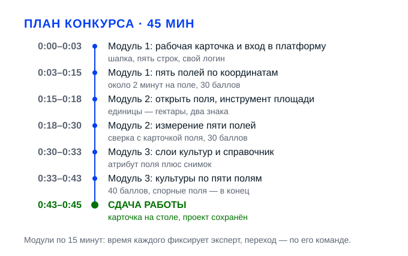
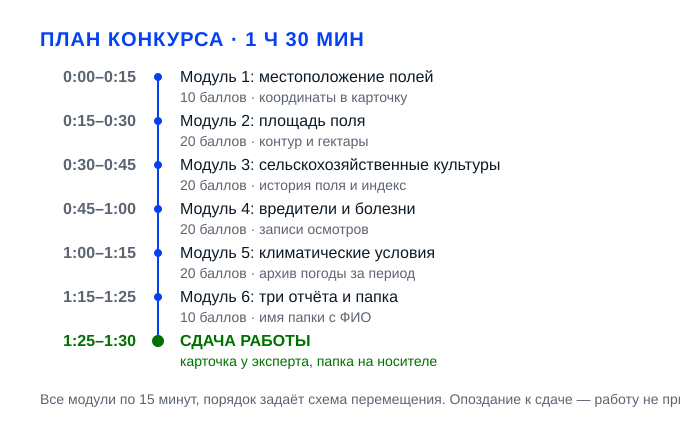
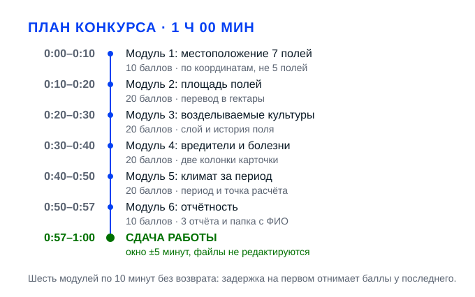

Цифровизация АПК
Задания ниже — официальные файлы «Абилимпикс» (источник: abilympics-russia.ru), разложенные по категориям. Решения написаны по тексту задания, регламенту и критериям оценки; в них указано, что именно проверяет эксперт.
Школьник
14–16 лет, базовый уровень заданияВыдержка из официального конкурсного задания: страницы, относящиеся к категории «Школьник» (стр. 8–9 источника).
Пошаговое решение
Задание для школьников по компетенции «Цифровизация агропромышленного комплекса» состоит из трёх модулей на 100 баллов и укладывается в 45 минут: модуль 1 — определение месторасположения пяти полей по координатам, 30 баллов и 15 минут; модуль 2 — определение площади этих полей, 30 баллов и 15 минут; модуль 3 — определение возделываемых культур, 40 баллов и 15 минут. Все три критерия в конкурсном задании помечены как измеримые, то есть оценивают не рассказ, а конкретные числа и названия в рабочей карточке. Работа идёт на цифровой платформе точного земледелия: карта с контурами полей, поиск по координатам, инструмент измерения площади, слои культур и вегетационного индекса, справочник культур и история поля. Региональная вариативная часть составляет 30 процентов изменений, и в ней за школьниками закреплено именно пять полей, тогда как студенты и специалисты определяют семь. Ошибка в первом модуле тянется через все три: неверно опознанное поле даёт чужую площадь и чужую культуру, поэтому порядок работы строится от точности к скорости, а не наоборот. Отдельно стоит помнить про рабочую карточку: всё, что не записано в неё, для оценки не существует, каким бы правильным оно ни было на экране.

Задача 1. Определить местоположение пяти полей по координатамМодуль 1 · 30 баллов · 15 минут
Первый модуль — это вход в цифровую платформу точного земледелия и поиск по координатам. Вам выдают пять пар координат, и каждую пару нужно превратить в конкретное поле на карте: найти, опознать, записать в рабочую карточку номер поля и его координаты без округления. Модуль стоит 30 баллов из 100 и длится 15 минут, то есть на одно поле приходится около двух минут вместе с записью. Ошибка здесь обиднее всего: неверно определённое поле тянет за собой и площадь во втором модуле, и культуру в третьем, поэтому сначала добиваемся точности, а скорость набирается сама к третьему полю.
Действие 1.1. Подготовить рабочую карточку и рабочее место
Шаг 1.1.1
Берём бланк рабочей карточки и заполняем шапку до того, как откроем приложение: фамилию и имя полностью, категорию «Школьники», дату, номер рабочего места, название компетенции. Ниже расчерчиваем таблицу на пять строк — по числу полей — и пять колонок: номер поля, координаты из задания, площадь в гектарах, возделываемая культура, примечание. Колонки под площадь и культуру пока оставляем пустыми, они понадобятся во втором и третьем модулях, и чертить таблицу заново посреди работы нельзя — на это уйдёт время из модуля.
Оформленная рабочая карточка — это первый пункт в последовательности выполнения задания, прописанный в конкурсной документации, и он же первый результат модуля: в графе «Результат» прямо указано «создана таблица с указанием координат поля». Модуль 1 стоит 30 баллов из 100, и заполненная карточка — единственное, что эксперт уносит с вашего рабочего места после сигнала о завершении, поэтому всё, что не записано, для оценки не существует.
Проверьте карточку перед работой по четырём признакам: шапка заполнена без сокращений, строк ровно пять, колонки подписаны, есть свободное место для примечаний. Если бланк выдали с готовой таблицей — сверьте число строк, их должно быть пять, а не семь: семь полей определяют студенты и специалисты.
Самая частая ошибка — начать искать поля и заполнять карточку «потом, по памяти». К концу модуля номера полей и координаты путаются местами, а времени на восстановление нет: пятнадцать минут уже истекли. Вторая ошибка — рисовать таблицу на четырёх строк, потеряв одно поле из пяти, и терять за это часть из тридцати баллов модуля.
Эксперт подходит к рабочему месту в первые две-три минуты модуля и смотрит, готова ли карточка и понимает ли участник, что именно он будет в неё писать.
Шаг 1.1.2
Проверяем рабочее место до старта: монитор повёрнут к вам, клавиатура и мышь на месте, яркость экрана выставлена так, чтобы карта читалась без напряжения, а масштаб системы не увеличен настолько, что половина панелей уезжает за край экрана. Норматив по площадке — 3000 на 1900 миллиметров на рабочее место и проход между местами не уже полутора метров, так что места хватает, чтобы разложить карточку рядом с клавиатурой, а не на коленях.
Половина потерь времени в первом модуле — не поиск координат, а борьба с собственным рабочим местом: погасший экран, свёрнутое окно, не тот масштаб. Модуль идёт 15 минут, и три минуты, потраченные на настройку, — это пятая часть времени, за которое нужно найти все пять полей и получить свои 30 баллов.
Сядьте и посмотрите на экран так, как будете работать: карта видна целиком, панель инструментов не обрезана, курсор мыши двигается без рывков. Карточка лежит справа от клавиатуры, ручка пишет — проверьте на уголке бланка, а не на первой строке таблицы.
Привычка работать на ноутбуке с тачпадом и маленьким экраном: на площадке стоит другое оборудование, и приёмы, отработанные дома, не переносятся. Вторая ошибка — сдвинуть монитор так, что эксперту не видно экран: он должен видеть, что вы делаете, иначе оценивать будет нечего.
Эксперт обходит площадку перед стартом и отмечает, кто подготовил место, а кто начал модуль с поиска мыши и включения монитора. Отдельно он смотрит, лежит ли карточка на столе с самого начала: бланк, который достают из сумки на третьей минуте, читается как неготовность к модулю.
Шаг 1.1.3
Читаем задание целиком, до первого клика: сколько полей указано, в каком порядке они перечислены, в каком формате записаны координаты. Формат бывает трёх видов — градусы, минуты и секунды; градусы и десятичные минуты; десятичные градусы, — и путать их нельзя: запись 54 30 00 и запись 54,30 означают разные точки, разница между ними почти в 17 километров. Отдельно смотрим, что идёт первым, широта или долгота, и какой разделитель стоит в задании: запятая или точка.
Это самый дешёвый способ не потерять баллы: одна пара координат, прочитанная не в том порядке, даёт ложное поле, а вместе с ним уезжают и площадь, и культура. В модуле 1 за каждое верно определённое поле начисляют часть из 30 баллов, и потеря одного поля — это минус шестая часть модуля, при том что проверка формата занимает тридцать секунд.
Проговорите про себя первую пару: «широта 54 и что-то, долгота 56 и что-то» — и проверьте, попадает ли точка в Башкортостан. Если после ввода координат карта улетела в океан или в другую область, значит, перепутаны широта и долгота или формат, и это видно сразу, до всякой записи в карточку.
Типичная ошибка — прочитать первую строку и сразу начать вводить, не посмотрев, в каком формате записаны остальные четыре. Вторая — перепутать порядок: в задании может стоять сначала долгота, и тогда все пять полей окажутся не там, где нужно, а времени переделывать уже не будет.
Эксперт слушает, как участник проговаривает формат координат, и по этому сразу видит, работал ли он с картами раньше или вводит цифры наугад. Часто он просит назвать формат вслух до ввода и следит, не меняет ли участник порядок широты и долготы между полями.
Шаг 1.1.4
Раскладываем пятнадцать минут модуля по полям: примерно две минуты на одно поле, три минуты на вход в приложение и оформление карточки, оставшиеся две-три минуты держим как резерв на проверку. Полезно записать время старта модуля в уголке карточки: 15 минут — это короткий отрезок, и без отметки легко потерять счёт времени на третьем поле, когда кажется, что всё только начинается.
Модуль 1 ограничен пятнадцатью минутами, и по истечении времени работу останавливают независимо от того, сколько полей найдено. Пять полей за пятнадцать минут — это ровно по две минуты, и любое поле, на которое ушло пять, отнимает время у следующего. Резерв нужен не «на всякий случай», а на проверку: именно она приносит баллы за точность.
Через семь минут после старта у вас должно быть найдено и записано не меньше двух-трёх полей. Если к этому моменту записано одно — меняйте тактику: ищите по номеру поля в списке платформы, а координаты вводите только для подтверждения.
Ошибка — искать каждое поле «идеально», перепроверяя по пять раз одно и то же, и не дойти до пятого. Обратная ошибка тоже стоит баллов: проскочить все пять за восемь минут и не оставить времени на сверку, а потом обнаружить, что два поля перепутаны местами.
Эксперт фиксирует темп: к середине модуля у сильного участника заполнена половина таблицы, и это видно по карточке, не заглядывая в экран. Если участник сидит на одном поле больше пяти минут, эксперт отмечает это как потерю темпа, даже когда ответ в итоге верный.
Действие 1.2. Открыть платформу и найти поля по координатам
Шаг 1.2.1
Открываем цифровое приложение по автоматизации и цифровизации сельского хозяйства тем способом, который указан на рабочем месте: ярлык на рабочем столе, закладка в браузере или вход через адрес, записанный в инструкции. Вводим выданные логин и пароль, дожидаемся полной загрузки карты — пока не прорисовались контуры полей и не открылась панель слоёв, приложение ещё не готово к работе. Интерфейсы у платформ класса точного земледелия устроены похоже: слева список полей и слои, сверху поиск и инструменты, в центре карта.
Без авторизации под своим логином результаты работы не привязываются к участнику, и эксперт не сможет проверить, какие поля вы открывали. Кроме того, у гостевого входа часто урезаны инструменты: нет измерений, нет справочника культур, нет экспорта, — а именно они нужны во втором и третьем модулях, которые стоят 30 и 40 баллов.
Признак готовности простой: карта отрисована, виден список полей или их контуры, доступны кнопки инструментов, а в правом верхнем углу стоит ваше имя. Если карта серая и пустая — подождите ещё десять-пятнадцать секунд, не начиная кликать по всем кнопкам подряд.
Ошибка — войти под общим логином площадки, который оставил предыдущий участник: чужие сохранённые виды и слои сбивают с толку, а результаты могут записаться не на ваше имя. Вторая — начать работу до загрузки карты и решить, что приложение не работает.
Эксперт проверяет, под каким логином выполнен вход, и это первое, что он смотрит при оценке модуля. Дальше он смотрит на панель слоёв и список полей: если они не открыты, значит, участник работает вслепую, и результат модуля будет случайным.
Шаг 1.2.2
Находим инструмент поиска по координатам: это либо строка с лупой, либо отдельная кнопка с изображением булавки, либо поле ввода в панели инструментов. Вводим первую пару цифр ровно в том порядке и с тем разделителем, что в задании: широту, затем долготу, через запятую или пробел — как показано в подсказке внутри поля. После ввода нажимаем Enter или кнопку подтверждения и ждём, пока карта переедет и поставит метку.
Поиск по координатам — прямой способ, который прописан в задании: «по координатам определить 5 полей». Он экономит время по сравнению с ручным поиском по названиям и не зависит от того, как поля названы в конкретной платформе. На весь модуль даётся 15 минут и 30 баллов, поэтому идём самым коротким путём, а не изучаем интерфейс по ходу дела.
Метка стоит внутри замкнутого контура, а не на границе и не между полями. Проверьте масштаб: при увеличении видно, что точка внутри контура, а не на межевой линии. Если метка легла на перекрёсток дорог рядом с полем — координаты введены верно, но само поле нужно выбрать кликом по контуру.
Самая частая ошибка — ввести координаты через точку, когда платформа ждёт запятую: строка не принимается, а участник продолжает нажимать Enter и теряет минуты. Вторая — не заметить, что после перелёта карты метка стоит на краю соседнего поля, и записать в карточку чужой номер.
Эксперт смотрит, пользуется ли участник поиском или крутит карту мышью наугад: второй способ на пяти полях почти гарантированно даёт ошибку. Отмечается и аккуратность ввода: строка поиска заполняется целиком, без лишних пробелов и повторных нажатий на Enter.
Шаг 1.2.3
Определяем, какое именно поле подсвечено под меткой: наводим курсор на контур, дожидаемся всплывающей подсказки с номером и названием, открываем карточку поля двойным кликом или через контекстное меню. В карточке смотрим три вещи — номер поля, его площадь и текущую культуру, — но записываем пока только номер. Если платформа показывает несколько полей с одинаковыми названиями, различаем их по номеру и по форме контура.
Номер поля — тот ключ, по которому потом связываются все три модуля: во втором вы подставляете площадь к этому номеру, в третьем — культуру. Если номер записан неверно, две следующие таблицы окажутся привязаны к чужому полю, и потеря будет не в одном модуле, а во всех трёх, то есть до 100 баллов сразу.
Номер в карточке поля совпадает с тем, что вы записали, и этот номер существует в списке полей платформы. Быстрая проверка: найдите поле по номеру в общем списке и убедитесь, что подсветился тот же контур, что вы видели на карте.
Ошибка — записать название поля вместо номера, а названия в платформе повторяются: «Поле №3» может встретиться дважды в разных бригадах. Вторая — взять номер из подсказки, которая висела над соседним контуром, потому что курсор стоял на границе.
Эксперт сверяет номера в карточке со списком полей в платформе и сразу видит, взяты ли они из карточки поля или придуманы. Если номер из карточки не находится в списке полей, вопрос решается за минуту, а на бумаге такая ошибка живёт до конца конкурса.
Шаг 1.2.4
Записываем результат в таблицу: в колонку «координаты» переносим цифры из задания без округления и без перестановки, в колонку «номер поля» — номер из карточки платформы. Пишем карандашом или ручкой, но разборчиво: исправления допустимы, зачёркивания — нет, поэтому лучше сначала записать на черновике в углу бланка, а в таблицу внести уже проверенное значение.
Координаты в карточке — это документальное подтверждение того, что поле найдено по заданию, а не выбрано наугад. Округление здесь недопустимо: четвёртый знак после запятой в десятичных градусах — это примерно 11 метров на местности, и потеря этого знака сдвигает точку на край поля или за его пределы.
Сверьте последние знаки: в задании и в карточке они совпадают до последней цифры. Проверьте разделитель — он должен быть таким же, как в задании, а не таким, как удобнее писать. Строка целиком читается вслух без запинки.
Ошибка — округлить координаты «для аккуратности», оставив два знака после запятой: точка уезжает на километр, и поле формально уже другое. Вторая — перенести цифры с перестановкой двух соседних знаков: глаз этого не замечает, а проверка занимает секунды, если читать вслух.
Эксперт выборочно сверяет одну-две строки координат с заданием, и расхождение в знаке сразу снимает баллы за точность. Выбор строк обычно случайный, поэтому рассчитывать на удачу не стоит: проверять надо все пять, а не первые две.
Шаг 1.2.5
Повторяем те же четыре движения для остальных полей, ведя счёт вслух или галочками на полях бланка: ввести пару, дождаться перелёта карты, открыть карточку поля, записать номер и координаты. Между полями не возвращаемся к уже найденным, не перепроверяем их заново и не меняем масштаб без нужды. Полезный приём — после каждого поля ставить галочку в пятой колонке, чтобы не потерять счёт и не искать одно и то же поле дважды.
Пять полей за 15 минут проходятся только ритмично: одинаковые действия в одинаковом порядке. Как только начинается импровизация — вернуться, сравнить, полистать список, — темп падает вдвое, и модуль на 30 баллов заканчивается на третьем поле. Галочки в колонке примечаний заменяют лишние проверки и не стоят ни секунды.
В таблице пять заполненных строк, галочек тоже пять, номера полей не повторяются. Проверьте это одним взглядом по диагонали, а не перечитывая каждую строку: дубли номеров видны сразу, а именно они чаще всего и случаются.
Ошибка — найти четыре поля и упорно искать пятое, не замечая, что оно уже записано под другим номером. Вторая — записать два раза одно и то же поле, приняв соседний контур за нужный, и оставить одно задание невыполненным.
Эксперт смотрит на карточку в конце модуля: пять разных номеров в пяти строках читаются как выполненный модуль, повторы — как невыполненный. Ему также видно, в каком порядке заполнялись строки: ровный почерк без помарок говорит о ритмичной работе, а рваные записи — о спешке.
Действие 1.3. Проверить, что поля не перепутаны
Шаг 1.3.1
Проходим по заданию сверху вниз и сверяем порядок: первая пара координат в задании должна стоять в первой строке карточки, вторая — во второй, и так до пятой. Если в задании поля пронумерованы, проверяем ещё и совпадение номеров: задание требует найти конкретное поле, а не любое поле в этой точке. На это уходит около минуты, и эту минуту обязательно закладываем в план.
Порядок — это не формальность: эксперт проверяет карточку построчно против задания, и строка, стоящая не на своём месте, читается как ошибка определения даже при верных цифрах. Модуль 1 — измеримый критерий на 30 баллов, то есть каждое поле оценивают отдельно, и путаница в порядке снимает баллы сразу за два поля.
Номера строк и номера полей идут по возрастанию без пропусков, координаты в каждой строке совпадают с соответствующей строкой задания. Проверяйте, положив задание и карточку рядом, а не по памяти: память на пятой строке уже перегружена.
Ошибка — заполнять карточку в порядке, в котором поля нашлись, а не в порядке задания: числа верные, а сопоставление сбито. Вторая — сверить только первую и последнюю строку и решить, что порядок в порядке.
Эксперт сверяет карточку с заданием построчно, и это самая быстрая проверка из всех, что он делает в первом модуле. Поэтому порядок строк важнее красоты записи: строка, стоящая на своём месте, засчитывается даже с помаркой.
Шаг 1.3.2
Отдельно проверяем сомнительные случаи: два поля с одинаковым названием, поля, разделённые только дорогой или лесополосой, поля, у которых контуры похожи по форме. Для каждого такого случая открываем карточку поля и смотрим номер, площадь и год — они различаются даже при одинаковых названиях. Если два поля граничат, полезно включить слой с номерами полей, чтобы видеть их одновременно на карте.
Именно на похожих полях теряется больше всего баллов: точка попадает на границу, платформа подсвечивает соседний контур, и участник записывает не тот номер. В модуле 2 площадь соседнего поля отличается на десятки гектаров, и ошибка вылезет уже там, но исправлять её будет поздно — время первого модуля истекло.
У каждого записанного номера есть уникальная пара «номер плюс площадь», и в списке полей платформы такая пара встречается один раз. Проверьте, что ни один номер не повторяется и что площадь у всех пяти разная — одинаковые площади у двух строк почти всегда означают дубль.
Ошибка — считать, что раз координаты разные, то и поля разные: две пары координат могут лежать в одном большом поле, и тогда правильный ответ — один номер дважды, но чаще наоборот, это разные поля с похожими контурами. Разбираться нужно по карточке поля, а не по внешнему виду.
Эксперт специально смотрит на такие пары: если в задании есть соседние поля, он проверяет именно их строки. Похожие контуры — самый частый источник спорных ответов, и здесь решает не уверенность участника, а номер из карточки поля.
Шаг 1.3.3
Делаем снимок экрана или экспорт вида карты с найденными полями: в большинстве платформ есть кнопка камеры или пункт «Сохранить вид» в меню. На снимке должны быть видны все пять контуров с номерами и подписями, а не только последнее поле, к которому вы перелетели. Файл называем по шаблону, который просит эксперт, — обычно это фамилия и номер модуля.
Снимок — это доказательство работы, если платформа не сохраняет историю просмотров или сессия закроется при переходе к следующему модулю. Кроме того, по снимку удобно проверять себя: на одном экране видно, все ли пять полей найдены, и не попали ли в кадр лишние.
На снимке читаются все пять номеров, карта не обрезана, дата и время попали в кадр, если платформа их показывает. Откройте файл и посмотрите на него глазами эксперта — если номер не читается, снимок бесполезен.
Ошибка — сделать снимок до того, как найдены все поля, и больше к нему не возвращаться. Вторая — сохранить снимок в папку по умолчанию, не переименовав: потом его не найти среди десятка других. И то и другое видно уже на сдаче модуля, когда исправлять поздно.
Эксперт может попросить показать снимок, если сомневается, что поля действительно открывались в платформе. Готовый снимок снимает вопрос за пять секунд, а поиск нужного окна задним числом отнимает время следующего модуля.
Действие 1.4. Занести результат и сдать модуль
Шаг 1.4.1
Переносим в карточку окончательные значения: пять строк, в каждой — номер поля, координаты из задания, а колонки площади и культуры пока остаются пустыми. Если платформа показывает площадь в карточке поля, не записывайте её сюда заранее: во втором модуле площадь нужно определить отдельным действием, и преждевременная запись выглядит как подстановка готового ответа.
Карточка — единственный документ, по которому оценивают первый модуль, и её заполняют по правилам задания: сначала оформляем карточку, потом работаем в приложении, потом заносим результат. Именно такая последовательность описана в разделе 2.3 конкурсного задания для категории «Школьники».
Все пять строк заполнены, почерк разборчив, исправлений нет, пустых колонок под площадь и культуру не осталось незамеченными — они должны быть пустыми осознанно, а не забытыми. Проверьте также, что в шапке стоит номер вашего рабочего места: по нему карточку возвращают владельцу.
Ошибка — вписать площадь «на будущее», потому что она видна в карточке поля: во втором модуле это экономит минуту, но нарушает порядок работы, и эксперт видит, что измерение не выполнялось. Вторая — оставить пустые строки, не дойдя до пятого поля, и сдать карточку с четырьмя.
Эксперт забирает карточку после модуля и оценивает её по полноте строк и точности значений. Отдельно он смотрит на исправления: аккуратная правка допустима, зачёркнутая клетка без нового значения — нет.
Шаг 1.4.2
Проверяем, что работа сохранена на стороне платформы: если в приложении есть кнопка сохранения проекта или отчёта, нажимаем её и дожидаемся подтверждения. Если сохранения нет, оставляем открытым тот вид карты, который показывает результат, — многие платформы запоминают последнее состояние сессии, и эксперт увидит его при проверке. Вкладку с заданием не закрываем.
Модули идут подряд, и между ними платформа может перезагрузиться или переключиться на другой проект. Сохранённое состояние — это страховка: если через пятнадцать минут во втором модуле карта откроется на другом участке, вы потеряете время на повторный поиск уже найденных полей.
После сохранения появляется подтверждение или исчезает индикатор несохранённых изменений. Проверьте просто: обновите страницу и убедитесь, что вид карты и найденные поля остались на месте. Если после обновления карта вернулась к исходному виду, значит, сохранение не прошло, и вид нужно выставить заново.
Ошибка — закрыть вкладку «чтобы не мешала» и потерять состояние карты. Вторая — нажать «Сохранить» и не дождаться ответа, а потом выяснить, что запрос не прошёл и проект остался в исходном виде. Третья ошибка — сохранить проект под чужим именем, оставшимся от предыдущего участника.
Эксперт при переходе ко второму модулю видит, на каком состоянии открылась платформа, и делает вывод о дисциплине работы. Он смотрит также, не осталось ли на экране чужих проектов, открытых до вас: это частая причина путаницы с номерами полей.
Шаг 1.4.3
Сдаём модуль по команде эксперта: карточка лежит на столе открытой, экран показывает карту с найденными полями, руки убраны с клавиатуры. Коротко, одной фразой, говорим, что сделано: пять полей найдены по координатам, номера записаны. Дальше не спорим и не начинаем дообъяснять — эксперт сам решит, что ему нужно посмотреть. Время окончания модуля записывать не нужно — его фиксирует эксперт, а ваша задача остановиться ровно по сигналу.
Момент сдачи фиксируется, и после него любые изменения в карточке не учитываются. Спокойная сдача без суеты экономит силы на два оставшихся модуля, которые вместе стоят 70 баллов, — а именно там решается итог. Кроме того, спокойная сдача показывает, что участник умеет работать по процедуре, а это отдельное впечатление эксперта.
Карточка на столе, экран виден, вы сидите ровно и не трогаете мышку. Если эксперт задаёт вопрос, отвечаете одним-двумя предложениями по существу: какое поле, какой номер, как нашли. Если эксперт молчит, не начинайте следующий модуль сами: команда на переход — часть процедуры.
Ошибка — продолжать кликать после сигнала, надеясь «доделать пятое»: это прямое нарушение процедуры, и эксперт вправе не засчитать модуль. Вторая — уйти с рабочего места, оставив карточку в сумке. Третья — пытаться объяснить недочёты раньше, чем эксперт их заметил.
Эксперт подходит к рабочему месту в момент сдачи и сверяет карточку с тем, что открыто на экране. По тому, как участник сдаёт модуль, он понимает, готов ли тот работать дальше без напоминаний.
Задача 2. Определить площадь пяти полейМодуль 2 · 30 баллов · 15 минут
Второй модуль продолжает первый: те же пять полей, но теперь нужно получить их площадь в гектарах и записать её в карточку. Работа идёт в том же цифровом приложении, только вместо поиска по координатам используются инструменты измерения и карточка поля. Модуль стоит 30 баллов из 100 и длится 15 минут. Главная ловушка здесь не в кнопках, а в контурах: поле на карте может быть обведено по границе обработки, по межевой линии или по фактическому использованию, и от того, какой контур вы взяли, площадь меняется на десятки гектаров. Поэтому измерение всегда заканчивается проверкой порядка величины.
Действие 2.1. Открыть поля и подготовить инструмент измерения
Шаг 2.1.1
Открываем платформу и возвращаемся к найденным полям: если в первом модуле сохранили вид карты, он откроется сразу, иначе вводим координаты из карточки по одной и добавляем поля в рабочий список. Дальше работаем не с картой целиком, а со списком: открываем поле, измеряем, закрываем, переходим к следующему. Так видно, сколько полей осталось, и не приходится каждый раз искать нужный контур на большой карте.
Второй модуль опирается на результат первого, и в задании это прямо сказано: площадь устанавливают «по определённым полям». Если поле в первом модуле определено неверно, здесь вы измерите площадь чужого участка, и ошибка удвоится: минус баллы за площадь и минус за координаты. Модуль 2 стоит 30 баллов, и вся эта сумма держится на пяти правильных контурах.
В рабочем списке пять полей, номера совпадают с карточкой, каждое поле открывается двойным кликом и показывает свою карточку. Если какое-то поле не находится — вернитесь к его координатам и проверьте формат ввода, это быстрее, чем искать вслепую.
Ошибка — измерять поля по одному, каждый раз заново вводя координаты: на это уходит по минуте, и к пятому полю время модуля заканчивается. Вторая — открыть сразу все поля и потеряться, какое из них уже измерено.
Эксперт смотрит, работает ли участник по списку или каждый раз заново ищет поля на карте, и по этому судит об организации работы. Отдельно он отмечает, открыты ли карточки полей: работа по памяти на пяти полях почти всегда даёт сдвиг номеров.
Шаг 2.1.2
Находим инструмент измерения площади. В платформах точного земледелия он обычно называется «Площадь», «Линейка», «Измерения» и лежит на панели инструментов над картой; в карточке поля площадь часто показана сразу, в строке атрибутов. Пробуем оба пути: сначала открываем карточку поля и смотрим, есть ли там готовое значение, затем проверяем его инструментом измерения, обводя контур. Совпадение двух способов — лучшее подтверждение.
Готовое значение в карточке поля — это учётная площадь, а обвод контура — фактическая граница участка; они почти всегда близки, но не всегда равны. Задание требует установить площадь заданных полей, и правильным считается значение, снятое с контура поля в платформе. Два способа нужны для самопроверки: расхождение больше пяти процентов означает, что вы обвели не тот контур.
Инструмент активируется, курсор меняется на перекрестие или карандаш, а на карте появляется подсказка о том, как ставить точки. Если после нажатия ничего не изменилось, инструмент не включился — проверьте, не открыта ли поверх карты карточка другого поля.
Ошибка — искать площадь в разделе отчётов, где лежат сводные таблицы по всем полям хозяйства: там данные за прошлый год, и они не совпадут с текущими границами. Вторая — принять за инструмент измерения кнопку масштабной линейки в углу карты.
Эксперт наблюдает, каким способом получено значение, и в спорных случаях просит показать, как оно появилось. Он также смотрит, не подменяет ли участник измерение чтением готового значения из карточки поля.
Шаг 2.1.3
Выставляем единицы измерения в гектары и точность до двух знаков после запятой. В настройках карты или в самой панели инструмента переключаем квадратные метры на гектары: в сельском хозяйстве площадь поля измеряют гектарами, и в карточке тоже должна стоять эта единица. Если платформа показывает площадь в акрах или квадратных километрах, переключаем единицы, а не пересчитываем в уме.
Гектар — это 10 000 квадратных метров, то есть квадрат сто на сто метров; поле площадью 120 гектаров — это примерно 1,2 квадратного километра. Единица измерения в карточке должна совпадать с той, что просит эксперт: число без единицы или в чужих единицах читается как ошибка, даже если сама площадь определена верно.
В карточке поля и в измерениях стоит одна и та же единица — га, а не м² и не км². Числа выглядят правдоподобно: у сельхозполя это обычно от десятков до нескольких сотен гектаров, а не 0,12 и не 1200. Проверьте на первом же поле, что после переключения единиц пересчитались и ранее снятые значения.
Ошибка — записать площадь в квадратных метрах, потому что так показала платформа по умолчанию: получается 1 250 000 вместо 125, и значение приходится переделывать. Вторая — переключить единицы и не заметить, что уже снятые значения остались в старых.
Эксперт проверяет единицы в каждой строке карточки, и это одна из самых быстрых проверок модуля. Ему важно видеть, что единица выбрана до измерения, а не подписана после него.
Шаг 2.1.4
Проверяем масштаб карты перед измерением: поле должно занимать примерно половину экрана. Слишком мелкий масштаб не даёт попасть в угол контура, слишком крупный — не видно, где заканчивается поле. Включаем слой со спутниковым снимком или с границами полей, чтобы контур читался не по одной линии, а по видимой границе: краю обработки, лесополосе, дороге.
Точность измерения площади напрямую зависит от того, попали ли вы в углы контура. При мелком масштабе ошибка в один пиксель экрана превращается в гектары: на глаз это незаметно, а в карточке разница видна сразу. Модуль 2 — измеримый критерий на 30 баллов, и здесь оценивают именно число, а не старание.
В углах поля видны вершины контура, границы читаются без разрывов, соседние поля не сливаются. Проверьте, что включён именно тот слой, по которому будете обводить, — иначе линия пойдёт по границе обработки прошлого года.
Ошибка — измерять на мелком масштабе «чтобы поле влезло целиком»: углы срезаются, и площадь выходит меньше реальной. Вторая — обводить по слою рельефа или почвенной карты, где границы полей показаны приблизительно.
Эксперт смотрит на масштаб в момент измерения и на то, включены ли границы полей. Он смотрит на масштаб в момент обвода и на включённые слои: по этому видно, попадает ли участник в углы контура.
Действие 2.2. Измерить площадь каждого из пяти полей
Шаг 2.2.1
Начинаем с автоматического определения: открываем карточку поля и находим строку с площадью, затем подтверждаем её инструментом измерения, обводя контур по вершинам. Обводим по часовой стрелке, ставя точки точно в углы, а не по сторонам: между двумя точками платформа проводит прямую, и если поставить точки посередине стороны, угол срежется. Замыкаем контур на первой точке и смотрим итог.
Автоматическое значение даёт учётную площадь, обвод — фактическую, и совпадение этих двух чисел означает, что вы работаете с тем полем и тем контуром, которые задуманы в задании. Пять полей за 15 минут проходятся только так: одно действие на поле, одно подтверждение, одна запись. Модуль стоит 30 баллов, то есть по шесть баллов на поле.
Площадь с обвода отличается от значения в карточке не больше чем на несколько процентов, контур замкнут, итог показан в гектарах. Если разница больше пяти процентов — вы обвели соседний контур или пропустили часть поля.
Ошибка — ставить точки редко, по одной на сторону: у поля сложной формы срезаются все изломы, и площадь выходит меньше на десять-пятнадцать процентов. Вторая — не замкнуть контур и получить значение по незамкнутой линии, которое платформа считает как ноль или как ошибку.
Эксперт может попросить повторить обвод на одном поле и смотрит, попадает ли участник в углы контура. Если обвод расходится с карточкой поля больше чем на пять процентов, он просит объяснить причину.
Шаг 2.2.2
Если контур в платформе не замкнут или поле нарезано на несколько участков, работаем вручную: обводим каждый участок отдельно и складываем значения, либо, если платформа позволяет, включаем режим добавления к текущему измерению и продолжаем контур. При обводе вдоль дороги или лесополосы ведём линию по внутренней границе поля, а не по середине дороги: дорога в площадь не входит.
Незамкнутые контуры — обычное дело на реальных картах: поле могли разделить, часть отдать под другой севооборот, границу уточнили после межевания. Если обвести такой контур одной линией, платформа либо не посчитает площадь, либо посчитает её по прямой между крайними точками, и ошибка будет в разы. Сумма участков даёт корректное значение.
Сумма площадей участков совпадает с общей площадью, которую показывает карточка поля, а если не совпадает — расхождение объяснимо и записано в примечании. Все участки перечислены, ни один не потерян. Если участков было два, в примечании должны стоять обе площади, а не только итог.
Ошибка — обвести только основную часть поля и забыть про клин у дороги: площадь занижается на несколько гектаров, и это видно при сверке. Вторая — вести линию по середине дороги и включить её в площадь.
Эксперт сверяет число участков на карте с числом строк в ваших расчётах. По числу строк видно, разобрался ли участник с разделённым полем или обвёл его одной линией.
Шаг 2.2.3
Записываем площадь в карточку сразу после измерения, не откладывая на конец модуля: в колонку «площадь» ставим число с двумя знаками после запятой и рядом единицу измерения — га. Одновременно с числом полезно записать и способ получения, коротко, в колонку примечаний: «по контуру» или «сумма двух участков». Это одна-две минуты на все пять полей, и они окупаются при проверке.
Запись по ходу работы — единственная защита от потери результата: если платформа перезагрузится или время модуля закончится на четвёртом поле, в карточке останутся уже измеренные значения. Задание требует занести результат в рабочую карточку, и оценивают именно карточку, а не то, что осталось на экране.
В строке стоит число, единица и способ, число не перепутано с соседней строкой. Прочитайте вслух: «поле три, сто двадцать пять и четыре десятых гектара, по контуру» — если фраза звучит нормально, запись верна.
Ошибка — измерять все пять полей, а записывать в конце по памяти: числа путаются местами, и приходится перемерять заново, а времени на это уже нет. Вторая — записать число без единицы измерения, и потом невозможно понять, гектары это или квадратные метры.
Эксперт смотрит на карточку после каждого модуля и видит, велась ли она по ходу работы или заполнялась в последнюю минуту. Записи, сделанные в конце модуля одним заходом, отличаются одинаковым наклоном почерка — это тоже заметно.
Шаг 2.2.4
Проверяем порядок величины по каждому полю: переводим гектары в понятные метры. Поле в 100 гектаров — это квадрат километр на километр, поле в 25 гектаров — квадрат пятьсот на пятьсот метров. Сравниваем с контуром на карте: если по карте поле тянется на два километра в длину и на полтора в ширину, площадь должна быть около трёхсот гектаров, а не тридцати.
Такая проверка ловит грубые ошибки за пять секунд и без всяких инструментов. Она особенно важна потому, что модуль оценивают по числу: неверная единица или потерянный разряд дают ответ, который формально выглядит как число, но не имеет отношения к полю. Из 30 баллов модуля на одно поле приходится шесть, и одна такая ошибка съедает пятую часть.
Прикидка по сторонам контура сходится с измеренным значением в пределах двадцати процентов. Если расхождение больше — ищем причину: единицы, лишний ноль, обведённый соседний контур. Если прикидка не сходится, проверяйте не число, а контур: чаще всего обведён соседний участок.
Ошибка — доверять первому числу, которое показала платформа, не глядя на контур: при неверном масштабе карты значение может отличаться в разы. Вторая — проверять только сумму всех полей, а не каждое значение отдельно.
Эксперт выборочно прикидывает площадь по карте и сравнивает со строкой в карточке; грубое расхождение видно сразу. Он выборочно прикидывает по карте площадь одного поля и сравнивает со строкой в карточке.
Действие 2.3. Проконтролировать результат измерения
Шаг 2.3.1
Сверяем измеренные площади с теми, что показывает карточка поля, и с площадями соседних полей. Если в платформе есть история поля, смотрим площадь за прошлые годы: у поля, которое не делили и не объединяли, она не меняется. Отдельно проверяем поля с одинаковыми названиями — у них площади должны различаться, иначе вы дважды измерили одно и то же. Если история поля в платформе недоступна, сверяйте с площадями соседних полей: резкий выброс виден и так.
Сверка с учётными данными — самый надёжный способ поймать ошибку контура. Расхождение до трёх-пяти процентов нормально: границы уточняются, часть поля уходит под дорогу или лесополосу. Расхождение в два раза означает, что обведён не тот контур или потерян участок, и это надо исправить до сдачи, потому что модуль оценивают по числу.
Все пять значений лежат в пределах пяти процентов от учётных, история поля не показывает резких скачков площади. Там, где расхождение больше, в примечании записана причина: разделённое поле, два участка, уточнённая граница.
Ошибка — увидеть расхождение и промолчать, списав его на «карта старая». Вторая — подогнать своё значение под учётное, не перемеряв: тогда в карточке стоит чужое число, и при проверке это видно по способу обвода.
Эксперт сравнивает ваши значения с учётными по своей таблице, и совпадение в пределах допуска читается как верное измерение. Он сверяет ваши значения со своей таблицей учётных площадей, поэтому подгонка под «красивое» число сразу заметна.
Шаг 2.3.2
Ищем типичные дефекты обвода: пропущенный угол, лишнюю точку за границей поля, замкнутую линию, проходящую через соседний участок. Для этого включаем режим редактирования контура, если он есть, и проходим по вершинам: в каждой вершине линия должна ломаться ровно на границе поля. Полезно наложить измеренный контур на слой границ полей — расхождения видны как просветы и наплывы.
Одна лишняя точка за границей добавляет к площади клин, которого нет на местности, и значение растёт на единицы гектаров. Пропущенный угол, наоборот, срезает часть поля. Оба дефекта не видны на числе, но видны на наложении контуров, и оба стоят баллов в измеримом модуле на 30 баллов.
Наложение не показывает просветов между вашим контуром и границей поля и наплывов за границу. Вершины стоят в углах, а не на сторонах, количество вершин соответствует форме поля. Хороший признак — контур повторяет форму поля на всех изломах, без сглаживания.
Ошибка — обводить по памяти, глядя на карточку поля, а не на карту: форма запоминается приблизительно, и изломы срезаются. Вторая — не включать слой границ и не видеть, что контур ушёл за межу. Третья — обводить по памяти после того, как карта перескочила на другое поле.
Эксперт при сомнении открывает наложение контуров и смотрит, насколько точно участник попал в границы. Он открывает наложение и смотрит, попадает ли ваш контур в границы поля на всех четырёх сторонах.
Шаг 2.3.3
Приводим все значения к одному виду: два знака после запятой, десятичный разделитель — запятая, единица измерения указана один раз в заголовке колонки. Если в задании просят округлить до целых гектаров, округляем по правилам: до пяти десятых вниз, от пяти — вверх. Одинаковый вид всех пяти строк важен не меньше самих чисел: по нему эксперт понимает, что таблица заполнена осознанно.
Записи вразнобой — «125,4», «125.4 га», «125 гектаров» — читаются как небрежность и затрудняют сверку, а на сверку у эксперта есть считанные секунды на строку. Кроме того, при разном округлении сумма пяти полей не сойдётся с суммой, которую вы посчитаете отдельно, и это вызовет лишние вопросы.
Все пять чисел записаны одинаково, единица измерения стоит в заголовке колонки, округление выполнено по одному правилу. Сумма строк совпадает с итоговым значением, если вы его считали. Проверьте ещё, что единица измерения стоит в заголовке колонки, а не в каждой строке по-разному.
Ошибка — округлять вверх «чтобы больше было»: значение перестаёт соответствовать измерению, и при сверке видно расхождение. Вторая — смешать запятую и точку в одной таблице. Третья — оставить в одной строке два знака после запятой, а в другой один.
Эксперт читает таблицу построчно и отмечает единообразие записи как часть аккуратности. Он отмечает единообразие записи как часть аккуратности и снижает балл за смешанные форматы.
Шаг 2.3.4
Если расхождение больше пяти процентов, не переписываем число, а возвращаемся к измерению: открываем поле, проверяем масштаб, включаем границы, обводим заново по вершинам и сравниваем новый результат со старым. На перепроверку одного поля закладываем не больше двух минут — иначе время модуля закончится на четвёртом поле, и пятое останется без площади.
Возврат к измерению, а не к записи — принципиальный момент: подгонка числа под ожидаемое значение не даёт баллов, потому что эксперт при проверке видит, каким способом получен результат. Модуль 2 стоит 30 баллов, и шесть из них дороже двух минут перепроверки.
Новое значение устойчиво: при повторном обводе получается то же число или отличающееся в пределах десятых. Причина первого расхождения понятна и записана: не тот масштаб, незамкнутый контур, два участка.
Ошибка — перепроверять все пять полей подряд, даже те, где расхождений нет: время уходит, и на пятое поле его не остаётся. Вторая — перемерять бесконечно одно и то же поле, добиваясь «красивого» числа.
Эксперт видит, что участник умеет остановиться: одна перепроверка и запись результата читаются лучше, чем пять попыток без результата. Он смотрит, сколько раз участник возвращался к одному полю: одна перепроверка — норма, пять — потеря времени.
Действие 2.4. Оформить таблицу площадей и сдать модуль
Шаг 2.4.1
Заполняем колонку площадей окончательно: пять строк, в каждой — номер поля из первого модуля и площадь в гектарах. Строки идут в том же порядке, что в задании, номера не переставляем. Если по какому-то полю площадь получена суммой двух участков, в примечании пишем «два участка» и через двоеточие их площади — так эксперт видит, откуда взялось число.
Таблица площадей — это и есть результат второго модуля: в графе «Результат» конкурсного задания стоит «указание площади полей». Оценивают её как измеримый критерий на 30 баллов, то есть смотрят на числа, а не на описания. Всё, что не попало в таблицу, для оценки не существует, даже если вы прекрасно измерили поле на экране.
Пять строк заполнены, номера совпадают с первым модулем, единица измерения указана, примечания объясняют нестандартные случаи. Пустых клеток в колонке площади нет. В примечании к нестандартному полю должно быть понятно, из чего сложилась площадь.
Ошибка — записать площади, но не поставить номера полей: таблица превращается в список чисел, и сопоставить её с заданием невозможно. Вторая — оставить пустой строку по полю, которое не удалось измерить, вместо того чтобы записать хотя бы значение из карточки поля.
Эксперт сверяет таблицу с заданием построчно и оценивает каждую строку отдельно. Он проверяет, стоит ли в каждой строке номер поля: таблица без номеров не сопоставляется с заданием.
Шаг 2.4.2
Считаем итог: суммарную площадь пяти полей и, если просят, среднюю площадь одного поля. Считать лучше на бумаге в столбик или на калькуляторе, но обязательно записать промежуточные слагаемые, чтобы при проверке было видно, откуда взялась сумма. Итог записываем под таблицей отдельной строкой с той же единицей измерения. Если калькулятора на столе нет, считайте на бумаге в столбик: так видна каждая цифра и легко найти ошибку.
Итог проверяет не только арифметику, но и логику: сумма пяти полей должна соответствовать общему контуру на карте. Если сумма получилась меньше, чем площадь одного самого большого поля, значит, где-то потерян разряд или перепутаны единицы, и это видно мгновенно. На модуль даётся 15 минут, и подсчёт итога занимает из них полминуты.
Сумма пересчитана вторым способом — по строкам и по группам — и даёт одно и то же число. Средняя площадь выглядит правдоподобно: не меньше самого маленького поля и не больше самого большого. Если сумма не сходится, ищите ошибку в строке с самым большим значением: там разряд теряется чаще.
Ошибка — сложить значения с разными единицами: одно поле в гектарах, другое в метрах, итог получается бессмысленным. Вторая — записать сумму без проверки, с ошибкой в одном разряде. Третья — записать итог без единицы измерения, и потом не понять, в чём он.
Эксперт проверяет итог арифметически и смотрит, сходится ли он со строками. Он пересчитывает сумму на калькуляторе и сверяет её со строками карточки. Отдельно он смотрит, стоит ли итог под таблицей, а не внутри последней строки.
Шаг 2.4.3
Сдаём модуль так же, как первый: карточка на столе, на экране открыто последнее измеренное поле или таблица площадей, руки убраны с клавиатуры. Одной фразой сообщаем, что сделано: площади пяти полей определены и записаны. Дальше ждём команды эксперта и не начинаем третий модуль самовольно, даже если время осталось. Карточку при этом держите на виду: эксперт может попросить показать любую строку.
Третий модуль стоит 40 баллов — больше, чем любой другой, и начинать его до команды нельзя: эксперт фиксирует время каждого модуля отдельно, и работа вне своего окна не засчитывается. Спокойная сдача с сохранением сил важна ещё и потому, что впереди самый дорогой по баллам этап.
Карточка заполнена, экран показывает результат, вы готовы ответить на вопрос о любом поле. Если эксперт просит показать измерение — открываете поле и включаете инструмент измерения, а не рассказываете по памяти.
Ошибка — сразу закрыть платформу «чтобы не мешала»: в третьем модуле понадобятся те же поля, и их придётся искать заново. Вторая — начать третий модуль до команды и потерять его из-за нарушения процедуры.
Эксперт отмечает момент сдачи и проверяет, что работа остановлена именно там, где участник её оставил. Он отмечает, остановлен ли процесс на том же поле, которое было открыто в момент сигнала.
Задача 3. Определить возделываемые культуры на пяти поляхМодуль 3 · 40 баллов · 15 минут
Третий модуль самый дорогой: 40 баллов из 100 и 15 минут. Здесь к номеру поля и площади добавляется культура, и определять её нужно не по одному признаку, а по трём сразу: атрибут поля в цифровой платформе, внешний вид посевов на снимке и место культуры в севообороте. Задание для школьников ограничивает набор культур, но и внутри этого набора есть пары, которые путают чаще всего, — яровая и озимая пшеница, ячмень и овёс, чистый пар и поле после уборки. Разбираться придётся по признакам, а не по догадке, и каждое решение нужно уметь объяснить одной фразой.
Действие 3.1. Настроить слои и открыть справочник культур
Шаг 3.1.1
Включаем слой возделываемых культур или севооборота: в панели слоёв он обычно подписан как «Культуры», «Севооборот», «Посевы» и раскрашивает поля по культуре разными цветами. Одновременно оставляем включёнными границы полей и номера, а слой почв и рельефа выключаем — они мешают читать карту. Проверяем, что раскраска появилась на всех пяти нужных полях, а не на всей области хозяйства.
Цветной слой — это первый и самый быстрый источник сведений о культуре, но пользоваться им нужно правильно: он показывает, что записано в системе, а не что растёт на поле на самом деле. Модуль 3 стоит 40 баллов, и правильный ответ здесь всегда подтверждается двумя независимыми признаками, а не только цветом на карте.
Пять полей раскрашены, легенда слоя открыта и видна, у каждого цвета есть подпись с названием культуры. Если легенды нет, наведите курсор на поле: всплывающая подсказка покажет культуру текстом. Если подсказка не появляется, включите слой номеров и наведите курсор на центр контура.
Ошибка — оставить включёнными пять слоёв сразу: карта превращается в цветное пятно, и границы полей не читаются. Вторая — смотреть на цвет, не открывая легенду, и путать близкие оттенки. Третья — выключить границы полей и обводить по цветному пятну, теряя форму участка.
Эксперт смотрит, умеет ли участник настраивать слои под задачу, и это видно по карте на экране. Он смотрит на панель слоёв в момент работы и на то, читается ли карта без пояснений.
Шаг 3.1.2
Открываем справочник культур — раздел платформы со списком всех культур, которые возделываются в хозяйстве. Просматриваем список целиком, чтобы знать, какие названия вообще встречаются: пшеница яровая и озимая, ячмень, овёс, рожь, кукуруза, подсолнечник, многолетние и однолетние травы, чистый пар. Запоминать весь список не нужно, важно понимать, что названия в справочнике могут быть записаны по-разному: «Пшеница озимая», «Озимая пшеница», «Пшеница мягкая озимая».
Задание требует установить сельскохозяйственные культуры, и оценивают именно название из справочника платформы, а не ваше собственное. Если написать «зерновые» вместо «ячмень яровой», ответ не будет засчитан, потому что модуль на 40 баллов проверяют по конкретным значениям. Справочник нужен ещё и для того, чтобы понять, чего в хозяйстве нет: если риса в списке нет, то и искать его на поле не стоит.
Справочник открывается, список культур виден, названия читаются полностью. Проверьте, что вы смотрите справочник именно этого хозяйства или региона, а не общий федеральный: набор культур в них различается.
Ошибка — не открывать справочник вообще и писать культуру так, как привыкли: расхождение в названии читается как неверный ответ. Вторая — взять первое похожее название из выпадающего списка, не дочитав уточнение «яровая» или «озимая».
Эксперт сверяет названия в карточке со справочником платформы и отмечает расхождения в формулировках. Расхождение в одно слово он отмечает как ошибку формулировки, а не как незнание культуры.
Шаг 3.1.3
Включаем спутниковый снимок или слой вегетационного индекса — в платформах он подписан как NDVI, «Вегетация», «Индекс» и раскрашивает посевы от красного к зелёному. Индекс считается по разнице отражения в ближнем инфракрасном и красном диапазонах, значения лежат от минус единицы до единицы, а у нормально развитого посева обычно держатся в пределах от 0,3 до 0,8.
Снимок и индекс нужны, чтобы отличить поле с культурой от чистого пара и от поля после уборки: у пара и у стерни индекс низкий, у растущего посева высокий. Это второй независимый признак, и он особенно важен там, где в справочнике записано одно, а на снимке видно другое. 40 баллов модуля начисляют за верную культуру, а не за красивую картинку.
На снимке видны ряды посевов или однородный зелёный массив, у пара и у убранного поля цвет тёмный или бурый. Индекс по полю лежит в ожидаемом диапазоне, а не показывает ноль на всём контуре. Сравните два поля с разными культурами: индекс у них должен различаться заметно.
Ошибка — судить о культуре только по цвету индекса: два разных посева могут иметь одинаковый индекс. Вторая — взять снимок за прошлый год и сравнивать его с текущим севооборотом, где культуры уже другие.
Эксперт проверяет, пользовался ли участник снимком как подтверждением, и в спорных случаях просит показать разницу между полями. Он также проверяет дату снимка: работа по прошлогоднему снимку даёт неверную культуру.
Шаг 3.1.4
Определяем порядок работы: поля проходим в том же порядке, что в задании, и на каждое тратим не больше двух минут. В карточке к этому моменту уже стоят номер и площадь, поэтому работа сводится к одному: открыть поле, определить культуру, записать. Полезно заранее наметить, какие поля вызывают сомнение, и оставить их на конец, когда остальные уже закрыты.
Модуль идёт 15 минут и стоит 40 баллов — больше, чем первый и второй вместе взятые по весу одного действия. Пять полей за пятнадцать минут проходятся только при жёстком порядке: сначала простые, потом спорные. Если начать со спорного поля, можно застрять на нём и не дойти до остальных четырёх.
Через семь минут после старта модуля у вас заполнено не меньше трёх строк с культурами. Сомнительные поля отмечены в примечании, но не брошены незаполненными: лучше записать обоснованное предположение, чем пустую клетку.
Ошибка — разбирать спорное поле двадцать минут, добиваясь полной уверенности: четыре остальных останутся без культуры, и модуль на 40 баллов превратится в восемь. Вторая — идти строго по порядку и застрять на первом же сложном поле.
Эксперт следит за распределением времени и видит, кто успевает закрыть все пять строк, а кто застревает на одной. Он фиксирует, закрыты ли все пять строк к концу модуля, и по этому оценивает распределение времени.
Действие 3.2. Определить культуру по каждому полю
Шаг 3.2.1
Открываем карточку поля и читаем атрибуты: культура, сорт, год посева, предшественник. Записываем культуру так, как она названа в справочнике, целиком, вместе с уточнением «яровая» или «озимая». Если в карточке культура не указана или стоит прочерк, это не повод пропускать поле: определяем по снимку и по истории поля, а в примечании пишем, что атрибут отсутствует.
Атрибут поля — это то, что в системе записал агроном, и для оценки он первичен: задание требует установить культуры на платформе, а не угадать их по фотографии. Модуль 3 — измеримый критерий на 40 баллов, то есть проверяют конкретное значение в конкретной строке. Если атрибут расходится со снимком, это тоже нужно отметить в примечании, но записать всё равно то, что в системе.
В строке стоит полное название культуры, совпадающее со справочником посимвольно. Проверьте уточнение: «Пшеница озимая» и «Пшеница яровая» — это два разных ответа, и один из них неверный. Проверьте также год посева: у озимой культуры он на единицу меньше, чем у яровой того же сезона.
Ошибка — записать культуру сокращённо, «пш. оз.», как пишут в полевом журнале: эксперт сверяет со справочником и не находит совпадения. Вторая — пропустить уточнение и написать просто «пшеница», потеряв половину смысла ответа.
Эксперт открывает карточку того же поля и сверяет название с вашей строкой. Он открывает карточку того же поля и сверяет название посимвольно, включая уточнение.
Шаг 3.2.2
Сверяем атрибут с внешним видом посева на снимке высокого разрешения: смотрим структуру. У зерновых видны ровные узкие рядки, поле выглядит как однородный массив с одинаковой высотой растений. У пропашных культур — кукурузы, подсолнечника — рядки широкие, между ними видна почва, и рисунок поля читается как полосы. У многолетних трав поле изумрудно-зелёное, без выраженных рядков.
Структура посева — самый устойчивый признак, он не зависит от того, как названо поле в системе. Именно он позволяет поймать ошибку, когда в карточке записано одно, а на поле другое: например, после пересева или при смене севооборота. Модуль 3 стоит 40 баллов, и подтверждённый двумя признаками ответ защищён от случайной ошибки.
Рисунок рядков на снимке совпадает с типом культуры: узкие рядки для зерновых, широкие полосы для пропашных, ровный зелёный массив для трав. Если снимок нечёткий, увеличьте масштаб до предела, при котором ещё видно поле целиком.
Ошибка — судить по цвету: у ячменя и пшеницы он почти одинаковый, и различить их по оттенку нельзя. Вторая — смотреть снимок в низком разрешении, где рядки сливаются в одно пятно. Третья — смотреть снимок зимней съёмки, где поля закрыты снегом и структура рядков не читается.
Эксперт при проверке открывает снимок того же поля и смотрит, мог ли участник увидеть то, что записал. Он просит показать рядки на снимке, если культура вызывает сомнение.
Шаг 3.2.3
Разбираем пары, которые путают чаще всего. Пшеница озимая и яровая различаются сроком сева: озимую сеют в августе-сентябре, яровую — в апреле-мае, поэтому в мае озимое поле уже густое и зелёное, а яровое только всходит. Ячмень и овёс различаются соцветием: у ячменя колос с длинными остями, у овса метёлка, и на снимке это видно как разная структура верхушки посева. Чистый пар — тёмное поле без растительности, часто с полосами обработки.
Именно эти пары дают большинство ошибок в модуле на 40 баллов, и каждая ошибка стоит восьми баллов — пятой части модуля. Признаки нужно держать в голове заранее, а не искать в интернете по ходу: справочные материалы на площадке есть, но время модуля 15 минут, и листать их некогда.
Для каждой пары у вас есть хотя бы один различимый признак, который виден на снимке или в атрибутах: срок сева, тип соцветия, наличие растительности. Ответ можно объяснить одной фразой, не прибегая к словам «кажется» и «наверное».
Ошибка — определять озимую и яровую пшеницу по цвету: разница в оттенке незначительна, а срок сева в атрибутах указан прямо. Вторая — принимать стерню после уборки за чистый пар: у стерни видны следы рядков и солома, у пара поверхность ровная.
Эксперт задаёт один вопрос по спорному полю и смотрит, называет ли участник признак или угадывает. Ответ «мне так кажется» он не принимает, а просит назвать признак, по которому сделан вывод.
Шаг 3.2.4
Записываем культуру в карточку и рядом, в примечании, короткое обоснование в три-пять слов: «атрибут поля», «рядки узкие, атрибут», «пар, индекс ниже 0,2». Обоснование нужно не для красоты: оно дисциплинирует и не даёт поставить название наугад. Если атрибут и снимок расходятся, в примечании пишем оба признака и указываем, какой принят за основной.
Задание требует занести результат в рабочую карточку, и обоснование — это то, что отличает осознанный ответ от случайного. При равных баллах в спорной ситуации эксперт смотрит именно на обоснование, а модуль на 40 баллов часто и решает итоговое место. Кроме того, обоснование помогает вам самим не сбиться при проверке в конце модуля.
В каждой из пяти строк есть название культуры и короткое обоснование, примечания не повторяются слово в слово там, где признаки разные. Обоснование не противоречит тому, что видно на экране. Проверьте, что обоснование не повторяется дословно в двух строках с разными культурами.
Ошибка — писать в примечании «определил по карте», не указав признак: такая запись ничего не объясняет и не помогает при споре. Вторая — заполнять обоснование после того, как все пять культур уже записаны, по памяти.
Эксперт читает примечания и по ним понимает, как получен ответ. Он читает примечания и по ним видит, как получен ответ: по атрибуту, по снимку или по севообороту.
Действие 3.3. Проверить культуры по признакам и севообороту
Шаг 3.3.1
Проверяем зерновые по морфологическим признакам, которые перечислены в требованиях к квалификации: строение соцветия, наличие остей, форма листа. Пшеница — колос с остями или без, листья линейные; ячмень — колос с длинными остями, которые на снимке читаются как «щетина» по краю поля; овёс — раскидистая метёлка, поле выглядит более рыхлым. Рожь похожа на пшеницу, но выше и с более длинным колосом.
Эти признаки входят в перечень того, что участник категории «Школьники» обязан знать, и именно на них опирается эксперт, когда просит объяснить ответ. Модуль 3 стоит 40 баллов, и восемь из них приходятся на каждое поле: одна неверно названная культура из зерновых — это минус пятая часть модуля при том, что определить её можно за полминуты по соцветию.
Для каждого зернового поля вы можете назвать соцветие: колос или метёлка. Если назвать не можете, значит, признак не проверен, и ответ держится только на атрибуте — это допустимо, но требует пометки в примечании.
Ошибка — определять зерновые по высоте растений: на снимке высота не читается, а ракурс искажает. Вторая — путать овёс с ячменём из-за похожего общего вида поля, не посмотрев на соцветие. Третья — определять культуру по цвету поля, не глядя на соцветие и не открывая карточку.
Эксперт может попросить показать на снимке соцветие и проверить, совпадает ли оно с названной культурой. Он просит показать соцветие на увеличенном снимке и сверяет его с названием в карточке.
Шаг 3.3.2
Проверяем пропашные культуры: у подсолнечника широкие междурядья около семидесяти сантиметров, крупные листья и характерная тёмно-зелёная розетка в начале сезона; у кукурузы рядки такие же широкие, но растения высокие, и поле выглядит как система параллельных полос с выраженной тенью между рядами. На снимке пропашное поле всегда читается полосами, в отличие от сплошного посева зерновых.
Пропашные — самая заметная группа на снимке, и именно её чаще всего определяют верно. Но и здесь есть ловушка: кукурузу на силос и кукурузу на зерно в справочнике могут записывать по-разному, а подсолнечник после цветения выглядит иначе, чем в начале вегетации. Сверка с атрибутом снимает эти сомнения и сохраняет баллы модуля на 40 баллов.
Междурядья видны как полосы, ширина полос на снимке одинаковая по всему полю. Название в карточке совпадает со справочником, включая назначение культуры, если оно указано. Если полосы на снимке разной ширины, значит, часть поля обработана отдельно и её надо учесть.
Ошибка — принимать за пропашную культуру поле, обработанное полосами после уборки: полосы есть, а растений нет. Вторая — путать подсолнечник с кукурузой по цвету, не глядя на форму растений. Третья — принимать за пропашную культуру поле с широкими междурядьями сразу после вспашки.
Эксперт сверяет полосатую структуру поля с названием и отмечает, есть ли противоречие. Он сверяет полосатую структуру с названием и отмечает противоречие, если оно есть.
Шаг 3.3.3
Отдельно проверяем поля без посевов: чистый пар и поле после уборки. Чистый пар — это участок, который год не занимали культурой, его обрабатывают от сорняков, и на снимке он выглядит как ровная тёмная или бурая поверхность без рядков, иногда с полосами обработки. После уборки на поле остаётся стерня: видны следы рядков, солома, и поверхность неоднородная. Индекс вегетации у обоих низкий.
Различать эти два состояния обязательно, потому что в справочнике это два разных значения, и подмена одного другим — неверный ответ в модуле на 40 баллов. Кроме того, путаница между паром и убранным полем часто означает, что участник смотрит на снимок прошлого года и не сверил дату.
На снимке читается дата съёмки, и она относится к текущему сезону. У пара нет ни рядков, ни соломы, у стерни есть остатки растений. В карточке поля стоит то же состояние, что вы видите. Проверьте дату снимка: у прошлогоднего снимка состояние поля уже другое.
Ошибка — считать любое тёмное поле паром: тёмным может быть и поле с всходами после дождя, и участок под обработкой. Вторая — не посмотреть дату снимка и определить состояние по прошлому году. Третья — записать пар там, где поле просто ещё не засеяно и ждёт сева.
Эксперт специально включает такие поля в задание, чтобы проверить, различает ли участник пар и стерню. Он специально включает в задание поле под паром, чтобы проверить это различение.
Шаг 3.3.4
Сверяем культуры с историей поля и севооборотом: открываем в карточке предшественника и смотрим, что росло на этом поле в прошлом году. Правило простое: хороший предшественник для зерновых — пропашные и многолетние травы, а зерновые после зерновых сеют редко, потому что накапливаются болезни и вредители. Если в карточке стоит пшеница после пшеницы два года подряд, это повод перепроверить и посмотреть снимок внимательнее.
Севооборот — это третий независимый признак, и он прописан в требованиях к квалификации как умение устанавливать последовательность операций с учётом технологических карт. Он не даёт точного ответа, но отсекает невозможные варианты и заставляет перепроверить сомнительное поле, а модуль на 40 баллов как раз и проверяет способность рассуждать, а не угадывать.
Для каждого поля вы можете назвать предшественника и объяснить, почему текущая культура после него возможна. Там, где сочетание нетипичное, в примечании стоит пометка и указан подтверждающий признак. Если предшественник в карточке не указан, так и напишите в примечании.
Ошибка — игнорировать историю поля и определять культуру только по цвету. Вторая — считать, что севооборот нарушать нельзя: в реальном хозяйстве бывает по-разному, и история поля — подсказка, а не правило.
Эксперт может спросить, что росло на поле в прошлом году, и по ответу видит, открывал ли участник историю. Он задаёт вопрос о предшественнике и по ответу видит, открывал ли участник историю поля.
Действие 3.4. Оформить карточку, убрать место и сдать работу
Шаг 3.4.1
Собираем итоговую таблицу: пять строк, в каждой — номер поля, координаты из задания, площадь в гектарах и культура из справочника. Строки идут в порядке задания, все четыре колонки заполнены, примечания дописаны. Если какая-то клетка осталась пустой, лучше вернуться к этому полю и заполнить её предположительным значением с пометкой, чем оставить пустоту: пустая клетка не оценивается вообще.
Итоговая карточка — это результат всех трёх модулей сразу, и по ней проверяют 100 баллов: 30 за координаты, 30 за площадь, 40 за культуры. Задание прямо требует занести результат в рабочую карточку, поэтому таблица должна читаться без ваших пояснений. Времени на сборку уходит две-три минуты, и их нужно оставить заранее.
Все пять строк заполнены целиком, колонки подписаны, единица измерения площади указана, культуры записаны полными названиями. Карточку можно прочитать вслух от первой строки до последней без запинок. Проверьте также, что в примечаниях нет сокращений, понятных только вам.
Ошибка — оставить незаполненной колонку культуры, потому что по какому-то полю не было уверенности: теряются все баллы за это поле, а не часть. Вторая — переписать таблицу заново «на чистовик» в последнюю минуту и внести при этом ошибку.
Эксперт забирает карточку после модуля и оценивает её целиком, поэтому читаемость важнее красоты. Он читает карточку целиком и оценивает каждую строку отдельно по трём модулям.
Шаг 3.4.2
Проверяем карточку по трём признакам полноты: строк ровно пять, в каждой заполнены четыре колонки, номера полей не повторяются. Затем проверяем согласованность между модулями: номер поля из первого модуля соответствует площади из второго и культуре из третьего, координаты в строке совпадают с заданием. На такую проверку уходит минута, и она ловит самые обидные ошибки — сдвиг строк.
Сдвиг строк — типичная ошибка, которая стоит сразу нескольких полей: числа верные, но стоят не в тех строках, и эксперт читает это как полную путаницу. При 100 баллах за три модуля один сдвиг может унести десятки баллов, а обнаруживается он за минуту, если сверять строки по номерам полей, а не по порядку.
Каждая строка самосогласована: номер, координаты, площадь и культура описывают одно и то же поле. Дублей номеров нет, пустых клеток нет, примечания стоят в тех строках, к которым относятся. Пройдите таблицу снизу вверх: обратный порядок помогает заметить сдвиг строки.
Ошибка — проверять только полноту и не проверять согласованность: все клетки заполнены, а строки перепутаны. Вторая — исправлять одну клетку и забыть, что такая же цифра есть в другой строке. Третья — исправить номер поля и не исправить площадь в той же строке.
Эксперт сверяет строки именно по номерам полей, поэтому сдвиг он увидит сразу. Он сверяет строки по номерам полей, поэтому сдвиг видит сразу и снимает баллы за оба поля.
Шаг 3.4.3
Приводим рабочее место в порядок, как требует задание: закрываем ненужные вкладки и окна, но оставляем открытой карточку полей или итоговый вид карты, убираем черновики и лишние листы, кладём ручку на место, отодвигаем стул. Если в платформе есть кнопка сохранения проекта или экспорта отчёта, нажимаем её и дожидаемся подтверждения. Мусор и бумажные обрезки убираем в урну, а не под клавиатуру.
Уборка рабочего места — последний пункт последовательности выполнения задания для категории «Школьники», и он входит в оценку: чистое место с открытым результатом читается как законченная работа. Кроме того, на площадке после вас работают другие участники, и оставленные черновики могут попасть в чужую зону.
На столе нет лишних предметов, экран показывает результат, черновики убраны, платформа сохранена. Проверьте, что карточка лежит на видном месте и не прикрыта бумагами. Проверьте, что карточка не прикрыта черновиками и её видно с прохода.
Ошибка — закрыть платформу полностью, чтобы «убрать за собой»: эксперт лишается возможности посмотреть, как вы работали. Вторая — оставить на столе черновики с расчётами, которые не относятся к сдаваемой карточке.
Эксперт обходит рабочие места после сдачи и оценивает порядок как часть общего впечатления от работы. Он обходит места после сдачи и отмечает порядок как часть общей оценки работы.
Шаг 3.4.4
Сдаём работу: карточка в руках или на столе в согласованном с экспертом месте, экран с результатом открыт, вы стоите или сидите ровно. Одной-двумя фразами сообщаете, что сделано: пять полей определены по координатам, площади измерены, культуры установлены. Если эксперт задаёт вопрос по конкретному полю, отвечаете коротко и по признаку: какая культура, почему так решили, какая площадь.
Финальная сдача — это момент, когда работа перестаёт быть вашей и становится оцениваемой. Спокойный, точный ответ на вопрос по полю стоит дороже, чем попытка рассказать всё сразу: эксперт оценивает 100 баллов по карточке и по тому, насколько участник понимает собственный результат.
Карточка сдана, экран открыт, вы можете ответить на вопрос по любому из пяти полей, не заглядывая в записи. Время сдачи зафиксировано экспертом. Убедитесь, что время сдачи записано экспертом, а не только вами.
Ошибка — начать объяснять всю работу целиком, когда спросили про одно поле: это читается как неуверенность. Вторая — уйти с площадки, не дождавшись, пока эксперт примет карточку. Третья — отвечать на вопрос по одному полю, пересказывая весь ход работы.
Эксперт задаёт один-два вопроса по случайным полям и по ответам проверяет, самостоятельно ли выполнена работа. По ответам он проверяет, самостоятельно ли выполнена работа и понимает ли участник свои числа.
Студент
учащиеся колледжей и техникумовВыдержка из официального конкурсного задания: страницы, относящиеся к категории «Студент» (стр. 9–12 источника).
Пошаговое решение
Задание категории «Студенты» — шесть модулей за один час тридцать минут и сто баллов. По координатам нужно найти поля и записать номера (модуль 1, 10 баллов), измерить площадь (модуль 2, 20 баллов), определить культуры (модуль 3, 20 баллов), установить вредителей и болезни (модуль 4, 20 баллов), снять климатические условия за заданный период (модуль 5, 20 баллов) и собрать папку отчётности с тремя отчётами и фамилией в названии (модуль 6, 10 баллов). Модуль идёт пятнадцать минут, порядок задаёт схема перемещения, то есть жеребьёвка. Работа идёт на платформе точного земледелия, и половина потерь не от незнания агрономии, а от процедуры: координаты вставлены в градусах и минутах, площадь записана в метрах, культура взята из прошлогодней строки, папка названа без фамилии. Региональный вариант добавляет к пяти полям ещё два, поэтому число полей уточняют у эксперта до первой записи.

Задача 1. Развернуть рабочее место и оформить рабочую карточкуМодуль 1 · 10 баллов · 15 минут
Рабочая карточка — единственный документ, который эксперт читает после каждого модуля, и первое, что он видит на столе. Пока карточка не оформлена, ни координаты, ни площади, ни культуры некуда записывать, поэтому первые минуты модуля 1 уходят именно на неё: шапка, разметка колонок, подпись. Параллельно проверяем платформу: вход, единицы измерения, видимость слоёв и поиск по координатам. Десять баллов модуля 1 складываются из двух частей — правильного месторасположения полей и аккуратной записи результата, и вторая часть теряется заметно чаще.
Действие 1.1. Занять рабочее место и сверить время
Шаг 1.1.1
Садимся за рабочее место и первые две минуты ничего не нажимаем: смотрим, что лежит на столе и как стоит техника. Проверяем монитор, клавиатуру, мышь, наличие бланка рабочей карточки и карточки с логином и паролем, которую выдаёт технический эксперт. Кресло поднимаем так, чтобы предплечье лежало на столе под прямым углом, а верхняя строка экрана была на уровне глаз — при работе с картой шесть модулей подряд шея иначе затекает уже к третьему. Если на столе остались чужие файлы, стикеры или открытые окна предыдущего участника, не разбираем их сами, а зовём эксперта и показываем.
Модуль 1 стоит 10 баллов из 100, и половина из них — за корректно оформленную карточку и порядок на месте, а не только за координаты. Эксперт обходит площадку в начале смены, и захламлённый стол с чужими окнами читается как неготовность к работе, даже если дальше всё сделано верно. Кроме того, чужой открытый аккаунт — это риск записать результат не в свой проект, а такую ошибку потом не восстановить за оставшиеся минуты.
Стол пустой, кроме бланка, ручки и карточки с доступом; экран не бликует от лампы; кресло отрегулировано; на мониторе нет чужих вкладок и окон. Логин и пароль переписаны на черновик, чтобы не искать карточку под клавиатурой в середине модуля.
Сесть и сразу начать вводить координаты в чужой открытый проект: результат уйдёт в архив предыдущего участника, а свой останется пустым, и модуль придётся переделывать в те же пятнадцать минут. Вторая ошибка — отодвинуть бланк карточки под клавиатуру: к концу модуля он оказывается смят, а карточка без бланка не оценивается.
Эксперт подходит в первые две-три минуты и отмечает, осмотрел ли участник место до старта и позвал ли его при неисправности. Отдельно фиксируется, работает ли участник в своём аккаунте: это видно по имени проекта на экране.
Шаг 1.1.2
Проверяем технику до старта: платформа открывается по адресу с карточки, вход проходит, карта грузится до конца, а не остаётся серым полем. Открываем тестовый поиск по любым координатам из справочника и смотрим, отвечает ли он за две-три секунды. Если страница висит, значок соединения красный или карта не подгружает спутниковый слой, сразу поднимаем руку: замена места или перезапуск браузера занимают минуту, а поиск неисправности в середине модуля съедает все пятнадцать.
Пятнадцать минут на модуль — жёсткая сетка, и любая техническая заминка вычитается из работы, а не добавляется к ней. По критериям модуля 1 оценивается результат, то есть заполненная карточка с координатами, поэтому неработающая платформа означает ноль по модулю независимо от знаний. Эксперт обязан зафиксировать неисправность до старта, иначе считается, что участник просто не успел.
Платформа открыта, в правом верхнем углу видно имя участника, карта отрисована, поиск по координатам вернул результат. Браузер открыт в одном окне, лишние вкладки закрыты, часы на экране показывают время, по которому вы будете отсчитывать пятнадцать минут.
Проверить только вход и не проверить поиск: именно он чаще всего и не работает, потому что карта берётся из кэша, а запрос уходит на сервер. Вторая ошибка — молча бороться с зависшей страницей: обновление без сохранения стирает уже введённые координаты.
Технический эксперт проверяет площадку до старта, а оценочный смотрит, обратился ли участник вовремя. Обращение до старта считается нормой, обращение на двенадцатой минуте модуля — уже потерей времени.
Шаг 1.1.3
Смотрим на схему перемещения, вывешенную у входа: в ней указано, с какого модуля начинает каждое рабочее место, и порядок может не совпадать с нумерацией в задании. Записываем на черновике свой маршрут — шесть модулей по пятнадцать минут, всего девяносто, — и отмечаем, где вы сейчас. Сверяем время на своих часах с часами в аудитории: расхождение в две-три минуты обычно и становится причиной опоздания к следующему модулю.
В задании прямо сказано, что все модули выполняются согласно схеме перемещения, а не в свободном порядке, и переход между модулями не входит в пятнадцать минут. Понимание маршрута экономит время: вы заранее знаете, что после карты нужно освободить место и перенести бланк. Девяносто минут на шесть модулей — это ровно по пятнадцать, без запаса на раздумья.
Маршрут записан, время сверено, на карточке отмечен текущий модуль. Вы знаете, какой модуль следующий и сколько минут осталось до перехода, а не выясняете это у соседа. Если часы на столе отстают от общих больше чем на минуту, переставьте их сразу: пятнадцать минут модуля считаются по общим часам площадки.
Идти по нумерации задания, не посмотрев схему: на площадке порядок часто обратный, и участник обнаруживает, что его место занято. Вторая ошибка — не сверить часы и узнать о конце модуля от эксперта, когда половина работы ещё не сделана.
Эксперт объявляет начало и конец модуля по общим часам площадки, и опоздание к переходу фиксируется в протоколе. Он же проверяет, что участник освободил место перед уходом.
Действие 1.2. Оформить рабочую карточку до первой записи
Шаг 1.2.1
Берём бланк рабочей карточки и заполняем шапку печатными буквами, синей или чёрной ручкой: фамилия, имя, отчество полностью, категория «Студенты», номер рабочего места, дата, номер модуля. Номер места берём с таблички на столе, а не из памяти, потому что при жеребьёвке он меняется. Если бланк выдан сразу на все шесть модулей, шапку заполняем на каждом листе, а не только на первом.
Карточка — измеримый результат модуля, и без шапки эксперт не может связать её с участником: работа формально не существует. В критериях всех шести модулей результат описан как созданная таблица или указание площади, то есть проверяется именно документ. Аккуратная шапка задаёт тон: по ней видно, что участник читал задание, а не начал писать в первую попавшуюся строку.
Фамилия читается без догадок, категория указана, номер места совпадает с табличкой, дата и номер модуля проставлены. Ни одна строка не выходит за поле, исправлений в шапке нет. Сверьте написанное с карточкой доступа: имя и фамилия должны совпадать буква в букву, иначе эксперт не сопоставит лист с протоколом.
Сократить фамилию или написать её неразборчиво: при разборе карточек такие листы уходят в спорные, и баллы за модуль теряются. Вторая ошибка — заполнить шапку только на первом листе, а результаты модулей 2–6 записать на чистых бланках без подписи.
Эксперт сверяет шапку с протоколом жеребьёвки сразу после модуля. Несовпадение номера места — самая частая причина, по которой карточка потом не находится.
Шаг 1.2.2
Размечаем таблицу под результат: колонки «номер поля», «координаты точки», «площадь, га», «возделываемая культура», «вредитель», «болезнь», «климатические показатели». Строк столько, сколько полей в задании: в федеральной части их пять, а региональный вариативный модуль добавляет ещё два, и на площадке число уточняем у эксперта до первой записи. Колонку «примечание» оставляем узкой, но оставляем: в неё уходит расхождение между площадью контура и площадью пашни.
Разметка заранее — это способ не потерять данные: заполненные вразнобой строки потом невозможно свести в таблицу за оставшиеся минуты. Модуль 1 оценивается по таблице с координатами, модуль 2 — по указанию площади, и одна и та же строка работает в двух модулях. Если колонок не хватило, участник начинает писать на полях, а такие записи при проверке легко пропустить.
Колонок семь или восемь, строк не меньше числа полей, все заголовки подписаны. Ширина колонки «координаты» позволяет записать широту и долготу с четырьмя знаками после запятой без переноса на вторую строку.
Разметить таблицу на пять строк, не уточнив число полей: два поля остаются без ответа, а это минус баллы и в модуле 1, и дальше по цепочке. Вторая ошибка — объединить координаты и площадь в одну колонку, после чего значения путаются местами.
Эксперт просматривает разметку в начале модуля и отмечает, совпадает ли число строк с числом полей в задании. Таблица на пять строк при семи полях видна ему сразу.
Шаг 1.2.3
Готовим письменные принадлежности: две ручки одного цвета, простой карандаш для черновых вычислений, ластик. Черновик держим отдельным листом, а не на обороте карточки: оборот не оценивается, и записанный там промежуточный результат считается потерянным. Проверяем, что на столе нет чужих карточек и старых бланков с результатами предыдущего участника.
Расчёт площади и перевод координат требуют черновых записей, и делать их на карточке нельзя: исправления в итоговой таблице читаются как неуверенность, а затёртое число эксперт может прочитать неверно. Отдельный черновик позволяет пересчитать и сравнить два результата, не портя итог. Чужие бланки на столе — прямой путь записать свои координаты в чужую карточку.
Две ручки пишут, карандаш заточен, черновик подписан вашей фамилией. На столе нет листов с чужими фамилиями, карточка лежит так, чтобы её было видно, но она не мешает клавиатуре. Проверьте, что ручка пишет именно на бланке: бланки бывают мелованные, и тонкий стержень на них пропадает.
Считать на обороте карточки: при сдаче оборота никто не смотрит, и проверяющий видит только итог без обоснования. Вторая ошибка — взять одну ручку, которая заканчивается на третьем модуле, и тратить время на поиск замены.
Эксперт обращает внимание на аккуратность ведения записей: черновик он не оценивает, но по нему видно, откуда взялось число в карточке. Отдельно он отмечает, подписаны ли листы: бланк без фамилии откладывается в сторону до выяснения, и время на это уходит из модуля.
Действие 1.3. Войти в платформу и настроить рабочую область
Шаг 1.3.1
Открываем платформу и входим по логину и паролю с выданной карточки, вводя их вручную, а не копированием из мессенджера: на площадке буфер обмена часто закрыт политикой безопасности. После входа сразу проверяем три настройки: язык интерфейса, часовой пояс площадки и единицы измерения — гектары, градусы Цельсия, миллиметры осадков. Если платформа открылась на английском или в футах и акрах, переключаем до первой работы, иначе площадь 120 гектаров превратится в 296 акров, и запись будет неверной.
Единицы измерения — не мелочь интерфейса, а прямая причина ошибки в карточке: модуль 2 оценивает площадь в гектарах, и число, снятое в акрах, стоит всех двадцати баллов модуля. Часовой пояс влияет на даты осмотров и на климатический ряд в модуле 5, где период задан конкретными датами. Переключение занимает полминуты в начале и экономит пересчёт в конце.
В правом верхнем углу видно ваше имя, интерфейс на русском, в настройках проекта стоит часовой пояс площадки, в полях площади отображается «га». Проверьте на любом известном поле: если площадь читается как 120, а не как 12000, единицы верные.
Оставить настройки по умолчанию: часть платформ приходит с имперскими единицами, и участник записывает акры как гектары. Вторая ошибка — войти под логином соседа по рабочему месту и работать в его проекте.
Эксперт может проверить единицы измерения на экране в любой момент модуля, и чаще всего делает это при первом измерении площади. Работа в чужом аккаунте фиксируется как нарушение процедуры и разбирается с главным экспертом уже после смены.
Шаг 1.3.2
Настраиваем карту под себя: включаем спутниковый базовый слой, потому что на нём видны границы пашни и дороги, и добавляем слой полей хозяйства с номерами. Включаем координатную сетку и инструмент измерения площади, масштаб ставим такой, чтобы в экран помещалось целое поле с запасом. Яркость монитора поднимаем до комфортной: на спутниковом снимке бледная граница поля видна только при нормальной яркости.
Границы поля на спутниковом слое и в векторном контуре часто не совпадают на десять-двадцать метров, и определять, в какое поле попала точка, надо по обоим слоям сразу. Координатная сетка помогает проверить порядок цифр: широта в этом регионе начинается на 54–56, долгота на 53–60. Без сетки участник не замечает, что перепутал широту и долготу.
На экране видны номера полей, спутниковый слой прогружен до резкости, сетка включена, масштабная линейка читается. Наведите курсор на любое поле: в подсказке должны появиться номер и площадь. Если подсказка пустая, слой полей не подключён, и работать по номерам дальше не получится.
Работать только по векторному слою: контур нарисован по старой съёмке, и точка попадает в поле, которое два года назад было залежью. Вторая ошибка — выкрутить масштаб так, что на экране полрегиона, и не увидеть границу между соседними полями.
Эксперт смотрит, умеет ли участник читать оба слоя вместе. На вопрос, почему решено, что это поле 12, правильный ответ ссылается на контур и на снимок, а не на цвет заливки.
Шаг 1.3.3
Проверяем, что в проекте видны все поля хозяйства и работает поиск по координатам: вводим в строку поиска широту и долготу в том порядке, который требует платформа, и смотрим, куда перелетела карта. Создаём рабочую папку или проект со своим именем, например «Студент_Иванов_место_7», и убеждаемся, что все дальнейшие отчёты сохраняются в неё. Если поиск по координатам спрятан в меню «Инструменты» или «Перейти», запоминаем путь и записываем его на черновик.
Модуль 6 оценивает папку отчётности с указанием ФИО, и если проект создан не сразу, отчёты из разных модулей окажутся в разных местах и собрать их за пятнадцать минут не получится. Порядок ввода координат различается: часть платформ принимает сначала широту, часть — сначала долготу, и проверка на одном примере снимает эту неопределённость. Записанный путь к инструменту экономит минуты в каждом следующем модуле.
Поиск вернул точку, карта её центрировала, в подсказке видно название ближайшего поля. В проекте с вашим именем появился первый файл или папка, а путь к поиску координат записан на черновике. Проверьте, что проект не является копией чужого: в настройках должно стоять ваше имя владельца.
Не проверить поиск и ввести координаты в обратном порядке: карта улетает в океан, а участник тратит минуты на догадки. Вторая ошибка — сохранять отчёты в общую папку площадки, откуда их потом не отличить от чужих.
Эксперт проверяет имя проекта на экране и наличие папки с ФИО. Пустая папка без имени — типичная потеря баллов модуля 6, и исправлять её в последнем модуле уже некогда: отчёты за предыдущие модули лежат в других местах и собирать их придётся заново.
Задача 2. Определить местоположение и площадь полейМодули 1–2 · 30 баллов · 30 минут
Два первых модуля идут подряд и опираются на одни и те же поля: сначала точку с заданными координатами нужно посадить на конкретный контур и записать номер поля, потом у этого контура измерить площадь. Модуль 1 стоит 10 баллов, модуль 2 — 20, и оба оцениваются по карточке, поэтому ошибка в координатах тянет за собой ошибку в площади, а та — ошибку в культуре. Тридцать минут на два модуля — это по пятнадцать, и в них входит не только поиск, но и проверка результата: пересчёт координат, сверка площади с атрибутом поля, сведение таблицы.
Действие 2.1. Перевести координаты в формат платформы
Шаг 2.1.1
Берём задание и выписываем координаты всех полей на черновик в том виде, в котором они напечатаны: обычно это градусы, минуты и секунды, например 54°57′12″ северной широты и 56°14′35″ восточной долготы. Сразу помечаем, где широта, а где долгота: в русской записи их часто ставят в одной строке через точку с запятой, и порядок неочевиден. Рядом записываем, сколько всего точек: пять по федеральной части и семь, если на площадке объявлен региональный вариант.
Модуль 1 оценивает именно координаты в карточке, и ошибка на этом шаге обесценивает всю дальнейшую работу: неверная точка попадает в другое поле, площадь считается не для того контура. Широта и долгота в нашем регионе различаются первой цифрой — 54–56 против 53–60, — но при копировании их легко поменять местами. Выписывание на черновик даёт вторую копию, по которой можно проверить себя, не возвращаясь к заданию.
На черновике столько строк, сколько полей в задании, у каждой подписано «ш» и «д», все цифры переписаны без потери знака градуса. Проверьте первую и последнюю точку: они должны отличаться, а не совпадать.
Считать координаты прямо с экрана задания, не выписывая: через два модуля цифры забываются, и участник возвращается к заданию, теряя время. Вторая ошибка — принять порядок «долгота; широта» за «широта; долгота» и не заметить, что обе точки лежат за пределами района.
Эксперт сверяет координаты в карточке с эталоном с точностью до третьего знака после запятой. Перепутанные широта и долгота видны сразу: точка уходит за пределы карты хозяйства.
Шаг 2.1.2
Переводим градусы, минуты и секунды в десятичные градусы: целые градусы оставляем, минуты делим на шестьдесят, секунды — на три тысячи шестьсот, всё складываем. Для 54°57′12″ получается 54 + 57/60 + 12/3600, то есть 54,9533. Считаем на калькуляторе платформы или на своём, но обязательно записываем промежуточные дроби на черновике, чтобы при проверке было видно, откуда взялось число.
Большинство платформ точного земледелия принимает координаты только в десятичных градусах, и вставленная строка с символами градусов и минут просто не разбирается. Ошибка в переводе на одну минуту — это почти два километра по широте, то есть гарантированно чужое поле. Четыре знака после запятой дают точность около одиннадцати метров, этого достаточно, чтобы отличить соседние контуры.
Для каждой точки получилось число от 54 до 56 по широте и от 53 до 60 по долготе, дробная часть имеет четыре знака. Проверьте себя обратным переводом: умножьте дробную часть на шестьдесят, целая часть даст минуты, остаток снова на шестьдесят — секунды.
Разделить минуты на сто вместо шестидесяти: получается правдоподобное, но неверное число, которое не вызывает подозрений и уводит точку на километры. Вторая ошибка — округлить до двух знаков, после чего точка садится на границу двух полей.
Эксперт проверяет не только итоговое число, но и способ: наличие пересчёта на черновике говорит о понимании, а не о случайном попадании. Если участник вставляет координаты прямо из задания и поиск не срабатывает, он смотрит, как тот выходит из положения, и пересчёт на месте считает верным решением.
Шаг 2.1.3
Проверяем район по первой цифре: для Башкортостана и соседних регионов широта лежит в диапазоне примерно 52–56 градусов, долгота — 53–60 восточной долготы. Если после пересчёта широта начинается на 56, а долгота на 54, вы почти наверняка поменяли их местами. Дополнительно сверяемся с масштабной линейкой на карте: точка должна попасть в контур хозяйства, а не в лес или в город.
Проверка по диапазону занимает десять секунд и ловит самую дорогую ошибку модуля. В критериях модуля 1 стоит созданная таблица с указанием координат поля, и точка в океане означает ноль баллов, даже если пересчёт был арифметически верным. Сверка с картой добавляет уверенность: поле должно выглядеть как поле, а не как квартал.
Точка на карте попадает в границы хозяйства, рядом видны дороги и другие контуры. Широта и долгота не совпадают по первой цифре и лежат в ожидаемых диапазонах. Сверьте точку с ориентиром: если в подсказке появилось название соседнего села, а не поля, координаты сдвинуты.
Пропустить проверку диапазона: ошибка всплывает только на четвёртой точке, когда три уже записаны в карточку. Вторая ошибка — принять за ориентир название ближайшего населённого пункта, которое платформа подставляет автоматически.
Эксперт смотрит, проверяет ли участник результат до записи. Точки, попадающие за пределы района, он отмечает как грубую ошибку позиционирования, а не арифметическую: на карточке видно, что пересчёт был, но проверки за ним не последовало.
Действие 2.2. Найти поля по координатам и записать номера
Шаг 2.2.1
Вводим координаты в поиск платформы: открываем строку поиска, вставляем число широты и число долготы через запятую или через пробел — так, как требует интерфейс, — и нажимаем ввод. Ждём, пока карта перелетит и остановится, и только после этого смотрим на экран: во время анимации легко принять промежуточное положение за конечное. Масштаб после перелёта обычно слишком мелкий, поэтому сразу приближаем до уровня, на котором читаются номера полей.
Это основной инструмент модуля 1: по заданию нужно по координатам определить поля, и вся работа идёт через поиск. Поспешность здесь стоит дорого, потому что при мелком масштабе точка визуально попадает сразу в несколько контуров. Приближение до номеров — не украшение, а способ увидеть, какой именно контур подсвечен.
Карта остановилась, точка отмечена маркером или перекрестием, в подсказке виден номер поля и его площадь. Масштаб такой, что на экране два-три поля, а не двадцать. Если после ввода карта не шевельнулась, запрос не ушёл: проверьте разделитель между числами и отсутствие лишних символов.
Нажать ввод и сразу смотреть на мелкий масштаб: точка кажется лежащей в поле 7, хотя на самом деле она в поле 9. Вторая ошибка — вводить координаты с символом градуса, который платформа не разбирает, и не заметить, что поиск не сработал.
Эксперт наблюдает за первым поиском внимательнее, чем за остальными: по нему видно, знаком ли участник с инструментом. Уверенная работа с первого раза читается как подготовка, а три неудачных попытки подряд — как отсутствие практики за платформой.
Шаг 2.2.2
Определяем, в какой контур попала точка: включаем слой полей с номерами, наводим курсор на границу и читаем всплывающую подсказку, затем щёлкаем по контуру, чтобы открыть карточку поля. В карточке смотрим номер, название, площадь и кадастровый квартал — эти данные пойдут в таблицу. Если точка стоит на границе двух контуров, отступаем внутрь на десять-пятнадцать метров по снимку и смотрим, какой контур занимает основную площадь вокруг точки.
Модуль 1 оценивает правильность определённого поля, а не факт поиска: точка может найтись, но контур будет выбран неверно. Границы полей на платформе проведены по старым обмерам, и точка на краю — обычная ситуация, которую надо решать правилом, а не гаданием. Номер поля из карточки — единственный признак, который эксперт может сверить с эталоном.
Номер поля записан, площадь из карточки совпадает с той, что видна в подсказке, при щелчке открывается именно тот контур, который подсвечен. Точка не лежит на линии границы. Если карточка поля открывается пустой, слой не догрузился, и номер придётся брать из всплывающей подсказки.
Определять поле по цвету заливки: на многих платформах цвет кодирует культуру, а не номер, и два соседних поля выглядят одинаково. Вторая ошибка — записать название хозяйства вместо номера поля: эксперт сверяет именно номера, и такая строка балла не даёт.
Эксперт сверяет номера полей с эталонной таблицей. Ошибка на одно поле в сторону — самая частая, и она видна по смещению всей строки: в эталоне соседние номера идут подряд, а в карточке появляется разрыв.
Шаг 2.2.3
Проверяем попадание по трём признакам сразу: номер контура в подсказке, рисунок границы на спутниковом снимке и соседние поля, которые вы уже определили. Если по координатам точка попала в поле, которое вы определили на предыдущем шаге как соседнее, — перепроверьте ввод: скорее всего, перепутаны местами цифры или потерян знак. Полезно держать перед глазами черновик со всеми точками и отмечать определённые поля галочкой.
Пять точек подряд легко перепутать, и ошибка в одной строке тянет за собой ошибку в площади и в культуре, то есть теряются баллы трёх модулей. Перекрёстная проверка по соседям работает потому, что поля в задании обычно расположены рядом и образуют связную картину. Отметки на черновике исключают повторную обработку одной и той же точки.
Все определённые поля различны, ни одно не повторяется, на черновике отмечено столько галочек, сколько точек. Соседние поля на карте образуют логичную картину: они рядом, а не в разных концах хозяйства.
Записать два раза одно и то же поле, решив, что точки близки: в карточке появляется дубль, а одно поле остаётся без ответа. Вторая ошибка — проверять только номер, не глядя на снимок, и не заметить, что контур нарисован по устаревшей границе.
Эксперт смотрит на итоговую таблицу целиком: повторяющиеся номера и пропуски видны без всякой сверки с эталоном. Он же проверяет, совпадает ли число строк с числом точек в задании, и отмечает неполные таблицы в протоколе.
Шаг 2.2.4
Записываем результат в рабочую карточку: номер поля, координаты точки в десятичных градусах с четырьмя знаками, площадь из карточки поля. Пишем печатными цифрами, разделяя целую и дробную часть запятой, как принято в русской записи, и не сокращая числа. В конце строки ставим дату и, если есть, номер осмотра — это пригодится в модуле 6 при формировании отчётов.
Модуль 1 оценивает созданную таблицу с указанием координат, поэтому запись должна быть полной и читаемой: сокращённое «54,95» вместо «54,9533» снижает точность до километра. Единый формат чисел нужен ещё и потому, что часть платформ при экспорте отчёта принимает только запятую, а часть — только точку. Дата в строке связывает карточку с отчётом по осмотрам.
В каждой строке заполнены все колонки, координаты имеют четыре знака после запятой, номера полей не повторяются. Пересчитайте количество строк: оно должно совпадать с числом точек в задании. Проверьте, что запятая в дробной части не превратилась от спешки в точку с запятой.
Округлить координаты до целых градусов: поле определяется, но точность теряется, и эксперт фиксирует неполное указание координат. Вторая ошибка — записать координаты в формате с минутами, тогда как в карточке требуется десятичный.
Эксперт читает карточку после модуля и сверяет каждую строку с эталоном. Аккуратный почерк и полные числа ускоряют проверку в вашу пользу, а исправления заставляют его переспрашивать, что именно было написано первоначально.
Действие 2.3. Измерить и сверить площадь поля
Шаг 2.3.1
Открываем инструмент измерения площади и обводим контур по настоящей границе: начинаем с угла, идём по кромке пашни, а не по краю снимка и не по прямой между углами, и замыкаем контур на первой точке. Ставим точки через каждые тридцать-сорок метров на поворотах и на изгибах, а на длинных прямых участках достаточно двух точек. После замыкания платформа показывает площадь в гектарах или квадратных метрах — смотрим, в каких единицах она выдала результат.
Модуль 2 стоит 20 баллов и оценивает указание площади поля, то есть число должно совпасть с эталоном в пределах допуска. Обводка по прямой через углы срезает изгибы и занижает площадь на три-семь процентов, а это уже вне допуска. Единицы измерения важны: 1 200 000 квадратных метров и 120 гектаров — одно и то же, но записанное не в тех единицах число выглядит как ошибка на два порядка.
Контур замкнут, линия идёт по границе, площадь отображается с точностью до сотых гектара. Сравните полученное число с площадью из карточки поля: расхождение должно быть в пределах двух-трёх процентов.
Обвести поле по прямоугольнику: на поле сложной формы площадь завышается на десять-пятнадцать процентов. Вторая ошибка — не замкнуть контур, из-за чего платформа показывает длину линии вместо площади.
Эксперт смотрит на форму обведённого контура: ломаная по границе читается как работа, прямоугольник — как формальность. На вопрос, почему линия идёт именно так, правильный ответ ссылается на кромку пашни и на спутниковый снимок, а не на удобство обводки.
Шаг 2.3.2
Сверяем измеренную площадь с той, что записана в карточке поля: если расхождение больше трёх процентов, возвращаемся и перепроверяем обводку, начиная с самого длинного участка. Чаще всего причина в пропущенном изгибе или в точке, поставленной за границей пашни на соседнюю дорогу. Если расхождение объяснимо — например, в карточке указана площадь с учётом неудобий, — записываем оба числа и помечаем причину в колонке «примечание».
Двадцать баллов модуля 2 держатся на одном числе, и проверка через атрибут поля — самый быстрый способ поймать ошибку до записи. Допуск в два-три процента существует потому, что границы в разных источниках проведены по разным обмерам. Объяснимое расхождение, зафиксированное письменно, эксперт читает как понимание, а не как ошибку.
Оба числа записаны, разница посчитана в процентах, причина расхождения сформулирована одной фразой. Если разница меньше трёх процентов, примечание можно не писать. Проверьте, что проценты считались от площади из карточки, а не от измеренной: иначе знак разницы меняется на противоположный.
Подогнать измеренное значение под карточку, не перепроверив обводку: ошибка остаётся, а участник теряет возможность её найти. Вторая ошибка — записать площадь в квадратных метрах, не переведя в гектары.
Эксперт сравнивает число в карточке с эталоном и с площадью контура в системе. Совпадение с точностью до десятых гектара считается верным ответом, а расхождение больше пяти процентов он проверяет отдельно и вызывает участника на пояснение.
Шаг 2.3.3
Переводим результат в гектары, если платформа показала квадратные метры: делим на десять тысяч и записываем с точностью до одного знака после запятой. Для полей площадью больше ста гектаров округление до десятых не влияет на оценку, для небольших участков в десять-двадцать гектаров лучше сохранить два знака. Рядом с числом ставим единицу измерения, а не оставляем голую цифру.
В конкурсном задании результат модуля 2 описан как указание площади полей, и подразумеваются гектары — принятая в сельском хозяйстве единица. Число без единицы эксперт читает как недооформленную запись и может счесть его квадратными метрами. Округление до десятых достаточно, чтобы попасть в допуск, и не создаёт ложной точности.
В колонке площади у каждого поля стоит число с единицей «га», значения лежат в правдоподобном диапазоне от единиц до нескольких сотен гектаров. Сумма площадей всех полей посчитана и записана отдельной строкой.
Записать 1 200 000 без перевода: число выглядит как ошибка, и балл снимается за единицы, хотя измерение верное. Вторая ошибка — округлить площадь в двенадцать гектаров до целых и потерять десятые, из-за чего расхождение выходит за допуск.
Эксперт проверяет и число, и единицу. Запись без единицы измерения в протоколе отмечается отдельно, а значение, отличающееся от эталона на порядок, он почти всегда объясняет путаницей метров и гектаров.
Шаг 2.3.4
Проверяем таблицу целиком: построчно сравниваем номер поля, координаты и площадь, затем складываем площади и смотрим, похожа ли сумма на общую площадь хозяйства из карточки проекта. Если сумма отличается в разы, значит, где-то потерян знак или перепутаны единицы. После проверки ставим подпись под таблицей, выключаем инструмент измерения и освобождаем место к переходу.
Модули 1 и 2 закрываются один за другим, и обе таблицы читаются как одна работа: расхождение между координатами и площадями эксперт замечает сразу. Сумма площадей — быстрый интегральный тест, она ловит грубые ошибки, которые не видны в отдельных строках. Подпись под таблицей подтверждает, что участник считает работу законченной.
Все строки заполнены, сумма посчитана, подпись стоит, лишние инструменты на карте выключены. На столе нет черновиков с чужими фамилиями, карточка лежит сверху. Сверьте сумму с площадью хозяйства из карточки проекта: расхождение в разы означает потерянный знак или неверные единицы.
Сдать таблицу без суммы и без подписи: эксперт не может убедиться, что участник видел результат целиком, а спорные строки остаются спорными. Вторая ошибка — оставить на карте включённым инструмент измерения, из-за чего следующий участник получает чужой контур.
Эксперт забирает карточку после модуля и проверяет полноту таблицы. Незакрытые модули отмечаются в протоколе как незавершённые, и восстановить их в конце конкурса уже нельзя: время на модуль не возвращают.
Задача 3. Определить культуры, вредителей и болезниМодули 3–4 · 40 баллов · 30 минут
Два самых дорогих модуля идут подряд: по двадцать баллов за культуры и за фитосанитарное состояние. Культуру не угадывают по цвету снимка — её берут из карточки истории поля и проверяют по вегетационному индексу и севообороту, потому что от культуры зависит всё дальнейшее: и список возможных вредителей, и болезни, и отчёт по севооборотам в модуле 6. Вредителей и болезни ищут в записях осмотров, а не в общем справочнике, и записывают с численностью и степенью развития. Здесь же по заданию рабочее место приводится в порядок — дважды, после третьего и после четвёртого модуля.
Действие 3.1. Взять культуру из карточки истории поля
Шаг 3.1.1
Открываем карточку истории поля — в платформе это раздел «Поля», «История поля» или «Севооборот» — и находим строку текущего года. В ней указаны возделываемая культура, сорт, дата сева и предшественник; эти четыре значения и нужны для модуля 3. Если год в карточке не совпадает с текущим, листаем историю до нужной строки, а не берём первое, что видно на экране.
Модуль 3 стоит 20 баллов и оценивает определение сельскохозяйственных культур, причём проверяется именно запись в карточке. История поля — первичный источник: культура в ней указана агрономом хозяйства, и её не надо угадывать по снимку. Сорт и предшественник нужны для модуля 6, где формируется отчёт по севооборотам.
В строке текущего года заполнены культура, сорт, дата сева, предшественник. Дата сева лежит в пределах текущего сезона, а не прошлого года. Если ячейка сорта пустая, это нормально для части хозяйств, но культура и предшественник должны быть заполнены обязательно.
Взять культуру из строки прошлого года: озимая и яровая пшеница в карточке выглядят похоже, а предшественник при этом окажется неверным. Вторая ошибка — считать пустую ячейку отсутствием культуры и начать угадывать по цвету.
Эксперт сверяет культуру с эталоном по каждому полю. Пустая ячейка в истории поля — повод сообщить ему, а не додумывать: в протоколе он отметит, что данные отсутствовали, и это не будет ошибкой участника.
Шаг 3.1.2
Сверяем культуру с тем, что видно на снимке: включаем слой вегетационного индекса и смотрим значение по полю. У злаковых в фазе кущения индекс держится около 0,4–0,6, у широколистных культур он выше, у пропашных на ранних фазах ниже из-за междурядий. Озимые на весеннем снимке заметно зеленее яровых, которые только всходят, а убранное поле даёт провал индекса почти до нуля.
Сверка нужна, чтобы поймать ошибку в карточке истории: она заполняется вручную, и опечатки в ней встречаются. Модуль 3 оценивает правильную культуру, и два независимых источника дают уверенность. Понимание индекса пригодится и в модуле 4, где аномалии указывают на очаги болезней.
Значение индекса по полю согласуется с культурой и фазой, резких пятен внутри поля нет. Если значение противоречит карточке, отметьте это на черновике и переходите к следующей проверке. Смотрите на среднее по полю, а не на точку под курсором: в одну точку легко попасть на дорогу.
Судить о культуре только по цвету: бурый оттенок даёт и созревающий ячмень, и поле после обработки гербицидом. Вторая ошибка — смотреть индекс в облачный день, когда значения занижены по всей сцене, и делать вывод по искажённому снимку.
Эксперт может спросить, почему выбрана эта культура. Ответ со ссылкой на историю поля и на индекс он считает обоснованным, ответ «похоже на пшеницу» — нет.
Шаг 3.1.3
Разбираем спорные поля по севообороту: смотрим, какие культуры шли на этом поле в предыдущие два-три года, и проверяем, не повторяется ли одна и та же культура два года подряд. Повтор злаковых после злаковых допустим только в отдельных случаях, многолетние травы держатся на поле по два-три года, а пропашные обычно возвращаются через три-четыре года. Если данные расходятся, приоритет у карточки истории поля, а расхождение записываем в примечание.
Севооборот — это агрономическая логика, по которой проверяется любая догадка, и в модуле 6 по нему строится отдельный отчёт. Культура, поставленная в нарушение ротации, выглядит как ошибка даже при совпадении с цветом снимка. Зафиксированное расхождение показывает эксперту, что участник работал с данными, а не гадал.
Для каждого поля известен предшественник, повторяемость проверена, спорные случаи отмечены. В таблице у каждой культуры есть обоснование из двух источников. Если по полю нет истории за прошлый год, так и запишите: выдуманный предшественник хуже честного пробела.
Поставить культуру по принципу «рядом такое же поле»: соседние поля часто заняты одной культурой в разные фазы, и признак обманывает. Вторая ошибка — не проверить предшественника, из-за чего в модуле 6 отчёт по севооборотам получается с разрывами.
Эксперт смотрит на логику ответа: правильная культура с неверным обоснованием всё равно даёт балл, но в спорной ситуации обоснование решает. Он же проверяет, не поставлены ли на соседних полях культуры, которые в этом сезоне в хозяйстве не возделывались.
Шаг 3.1.4
Заносим культуру в рабочую карточку: номер поля, культура, сорт если указан, фаза развития на дату осмотра, предшественник. Фазу берём из карточки поля или определяем по снимку — всходы, кущение, трубкование, колошение, цветение, созревание. Названия культур пишем полностью, без сокращений вроде «яр. пш.», потому что при проверке сокращения читаются неоднозначно.
Модуль 3 оценивает таблицу с определением сельскохозяйственной культуры, и полное название исключает споры при проверке. Фаза развития нужна в модуле 4: вредители и болезни привязаны к фазе, и без неё запись выглядит необоснованной. Предшественник переносится в отчёт по севооборотам без дополнительной работы.
В строке заполнены культура, фаза и предшественник, названия полные, номера полей совпадают с модулями 1 и 2. Количество строк равно числу полей. Фаза указана та, что видна на дату осмотра, а не та, которая наступит через месяц.
Записать «зерновые» вместо конкретной культуры: балл за определение не ставится, потому что вид не указан. Вторая ошибка — указать фазу, которая ещё не наступила, и тем самым разрушить обоснование по вредителям.
Эксперт проверяет точность названия: яровая и озимая пшеница — разные ответы. Сокращения он читает как неуверенность, а указание сорта там, где он есть в карточке, отмечает как сильную сторону работы.
Действие 3.2. Проверить культуру по снимку и севообороту
Шаг 3.2.1
Включаем слой вегетационного индекса за нужную дату и сравниваем поля между собой: находим среднее значение по хозяйству и смотрим, какие поля выбиваются вниз. Пятна с пониженным индексом внутри поля — это либо очаг болезни, либо переувлажнение, либо следы проезда техники. Масштаб ставим такой, чтобы поле занимало половину экрана, и переключаемся между двумя датами, чтобы увидеть, растёт пятно или нет.
Сравнение с соседними полями отделяет настоящую аномалию от общей картины сезона: если индекс низкий везде, дело в погоде, а не в культуре. Рост пятна от даты к дате — главный признак инфекции, и именно он используется в модуле 4. Такой анализ входит в требование определять состояние посевов дистанционными методами.
Определены поля с пониженным индексом, для каждого пятна проверены две даты, размер пятна оценён в процентах от площади поля. Значения записаны на черновик. Если пятно за две даты не изменилось, скорее всего, это особенность рельефа или почвы, а не болезнь.
Смотреть одну дату и принять за болезнь поле, которое просто позже посеяно: разница в фазе даёт такой же провал индекса. Вторая ошибка — сравнивать снимки разных сцен с разной облачностью: значения в них несопоставимы напрямую, и вывод получается случайным.
Эксперт оценивает, умеет ли участник читать динамику. Вопрос о двух датах задаётся почти всегда, и ответ по памяти здесь не работает: нужны конкретные значения индекса и даты снимков.
Шаг 3.2.2
Проверяем севооборот по истории поля за три года: выписываем культуры по годам и смотрим, есть ли повтор одной культуры подряд. Для многолетних трав повтор — норма, для зерновых — признак ошибки в данных. Если в истории пропущен год, отмечаем пробел и не восстанавливаем его догадкой, а сообщаем эксперту. Если поле в истории разделено на два контура, культуры выписываем по каждому отдельно, иначе в отчёте появится строка с двумя культурами сразу.
Отчёт по севооборотам в модуле 6 строится на этих данных, и пробел в истории превращается в разрыв в отчёте. Ротация также объясняет, почему на поле появилась болезнь: возбудители сохраняются в почве и на растительных остатках, и повтор культуры повышает заражённость. Проверка занимает две минуты и снимает половину вопросов по модулю 6.
По каждому полю выписаны три года, повторов нет или они объяснены, пробелы отмечены. Данные совпадают с тем, что показывает карточка истории поля. Сверьте годы: пропущенный сезон обычно означает, что поле не обрабатывалось, и это тоже сведения для отчёта.
Заполнить пробелы «наиболее вероятной» культурой: в отчёте появляется вымышленная строка, и вся ротация выглядит недостоверной. Вторая ошибка — не заметить, что поле разделено на два контура с разными культурами.
Эксперт проверяет отчёт по севооборотам на связность: разрывы и вымышленные годы он видит по датам. Он же смотрит, не перепутаны ли культуры между соседними контурами одного поля.
Шаг 3.2.3
Если данные карточки и снимка расходятся, фиксируем это письменно: в примечании пишем, что показывает история поля и что видно на индексе, с датой снимка. Приоритет отдаём карточке истории, потому что она заполняется агрономом хозяйства, а снимок может быть облачным или устаревшим. Расхождение не стираем и не подгоняем под удобный ответ. Расхождение оставляем в примечании целиком, с обоими значениями, чтобы при проверке было видно, из чего выбирали.
Модуль 3 оценивает правильность культуры, и в спорной ситуации письменное обоснование защищает балл. Эксперт видит, что участник заметил противоречие и решил его по правилу, а не случайно попал в ответ. Подгонка данных под ожидание — самая частая причина, по которой на апелляции работа не выдерживает проверки.
В примечании есть дата снимка, значение индекса и запись из истории поля. Решение обосновано одной фразой, без переписывания обоих источников. Если расхождений несколько, каждое занимает свою строку с номером поля.
Стереть исходные данные и записать только итог: если ответ окажется неверным, объяснить его будет нечем. Вторая ошибка — менять ответ дважды, оставляя в карточке следы исправлений, по которым видно, что участник колебался.
Эксперт читает примечания в первую очередь: по ним видно, работал участник с данными или угадывал. Зафиксированное расхождение он считает признаком аккуратной работы, а не ошибкой.
Действие 3.3. Установить вредителей по записям осмотров
Шаг 3.3.1
Открываем раздел осмотров — в платформе он называется «Осмотры», «Фитосанитарные обследования» или «Скаутинг» — и фильтруем записи по номеру поля. Смотрим все записи за сезон, а не только последнюю: вредитель мог быть зафиксирован в июне, а к августу уйти в почву. Каждую запись открываем целиком и выписываем дату, фазу культуры и результат обследования.
Модуль 4 стоит 20 баллов и оценивает определение вредителей и болезней, а записи осмотров — это первичные данные, по которым строится ответ. Последняя запись не всегда самая информативная: она может быть короткой проверкой после обработки. Полный ряд за сезон показывает динамику численности, и именно она интересует эксперта.
По каждому полю выписаны все записи с датами, у каждой указана фаза и результат. Записей не меньше двух на поле, иначе отметьте это как недостаток данных. Если в записи стоит только отметка «осмотрено», без результата, она не даёт сведений о вредителе.
Взять одну последнюю запись и не посмотреть предыдущие: динамика теряется, и вредитель, который был в июне, в ответ не попадает. Вторая ошибка — фильтровать по дате, а не по полю, и получить чужие обследования.
Эксперт сверяет вредителя с эталоном по полю и смотрит, указана ли численность, а не только название. Он же проверяет, взяты ли данные из осмотров этого сезона, а не из архива прошлых лет.
Шаг 3.3.2
Определяем вид по признакам, которые записаны в осмотре и видны на приложенных фотографиях: вредная черепашка даёт щуплое, лёгкое зерно и характерные повреждения колоса, шведская муха — усыхание центрального побега, тля — скрученные листья и липкие выделения, колорадский жук — объеденные листья картофеля, проволочник — перегрызённые корни и ходы в клубнях. Смотрим численность: для черепашки экономический порог в фазе молочной спелости — около двух особей на квадратный метр, для тли — десять и более на лист.
Модуль 4 оценивает установление вредителей сельскохозяйственных культур, и название вида без численности считается неполным ответом. Порог вредоносности превращает наблюдение в решение: до порога обработка не нужна, после — нужна, и это как раз профессиональное суждение. Привязка к фазе культуры обязательна, потому что ущерб зависит от того, в какой момент вредитель пришёл.
Для каждого поля записан вид, численность и фаза, в которую зафиксирован вредитель. Вид согласуется с культурой: черепашка на пшенице, колорадский жук на картофеле, а не наоборот. Численность сопоставлена с порогом, и в примечании есть вывод, нужна ли обработка.
Поставить вредителя не на ту культуру: колорадский жук на пшенице сразу читается как случайный выбор из списка. Вторая ошибка — записать «насекомые» без вида: балла за определение не будет, даже если культура указана верно.
Эксперт проверяет не только вид, но и соответствие культуры: несовпадение он считает грубой ошибкой. Численность ниже порога, записанная осознанно, для него признак понимания, а не пропуска.
Шаг 3.3.3
Заносим вредителя в карточку: номер поля, культура, вид вредителя, численность на единицу учёта, фаза и дата осмотра. Если на поле зафиксировано два вредителя, записываем оба в одну строку через точку с запятой или в две строки, но не выбрасываем менее многочисленного. Численность пересчитываем в единую единицу — на квадратный метр или на сто взмахов сачком, — чтобы записи можно было сравнить между полями.
Модуль 4 оценивает таблицу с определением вредителей и болезней, и пропуск второго вида стоит части баллов. Единая единица учёта нужна для сравнения: численность на лист и на квадратный метр несопоставимы. Дата связывает запись с климатическими данными модуля 5, где развитие вредителя зависит от суммы температур.
В строке есть вид, численность с единицей учёта, фаза и дата. Численность лежит в правдоподобном диапазоне: единицы и десятки, а не тысячи на квадратный метр. Если на поле два вредителя, в строке видны оба, а не только первый.
Оставить численность без единицы: непонятно, две особи на метр или на гектар, и порог не проверить. Вторая ошибка — записать только вредителя, занимавшего первое место по численности, и потерять второго, который как раз и определял необходимость обработки.
Эксперт обращает внимание на единицы учёта: без них запись нечитаема, и балл снижается. Он же сверяет даты с записями осмотров: выдуманная дата сразу расходится с журналом платформы.
Действие 3.4. Установить болезни и закрыть модули
Шаг 3.4.1
Переходим к болезням: в тех же записях осмотров ищем раздел с признаками поражения, а если он пуст — открываем справочник болезней платформы и карточку культуры. Смотрим приложенные снимки листьев и колоса: пятнистости, налёты, пустулы, побурение сосудов. Выписываем на черновик для каждого поля одну-две вероятные болезни с датой осмотра. Признак записываем словами, а не одним названием: именно по нему эксперт отличает определение от переписывания строки из справочника.
Модуль 4 делит двадцать баллов между вредителями и болезнями, и пустая половина стоит десяти. Справочник платформы сужает круг: в нём перечислены болезни, характерные для этой культуры в этом регионе. Снимки листьев дают признаки, по которым вид определяется точнее, чем по названию в осмотре.
По каждому полю выписана хотя бы одна болезнь с датой и признаком. Признак сформулирован словами: «бурые пустулы на верхней стороне листа», а не просто «поражение». Если болезней в осмотрах нет, записываем «не обнаружено» и не выдумываем название.
Взять болезнь из общего списка, не привязав к культуре: септориоз на картофеле выглядит как ошибка выбора. Вторая ошибка — записать болезнь, которая в этом регионе на этой культуре не встречается, например пероноспороз на пшенице.
Эксперт смотрит на привязку болезни к культуре и на признак. Правильное название без признака он оценивает ниже, а признак без названия — как незаконченную работу.
Шаг 3.4.2
Определяем болезнь по совокупности признаков и культуры: на пшенице чаще встречаются бурая ржавчина с оранжево-бурыми пустулами, мучнистая роса с белым налётом, септориоз с пятнами и пикнидами, фузариоз колоса с розовым налётом на чешуях. На картофеле — фитофтороз с бурыми пятнами по краю листа и белым налётом на нижней стороне, на сахарной свёкле — ризоктория и церкоспороз, на подсолнечнике — пероноспороз. Сверяем с фазой: фузариоз колоса проявляется только в колошении и позже.
Модуль 4 оценивает установление болезней, и точность здесь важнее количества: одна верно определённая болезнь с признаком даёт больше, чем три названия наугад. Привязка к фазе отсекает ошибки, потому что часть болезней физически не может проявиться раньше определённого этапа. Те же данные нужны в модуле 6 для отчёта по осмотрам.
Для каждого поля записана болезнь, признак и фаза, в которой она зафиксирована. Названия не повторяются у всех полей подряд, если только хозяйство не заражено равномерно. Проверьте, что фаза допускает проявление болезни: фузариоз колоса в фазе кущения невозможен.
Записать одну и ту же болезнь на все поля: равномерное поражение бывает редко, и такой ответ читается как формальность. Вторая ошибка — перепутать бурую ржавчину со стеблевой, у которой пустулы продолговатые и тёмные.
Эксперт проверяет точность названия болезни и наличие признака. Смешение ржавчин он считает ошибкой определения, а указание процента поражения при верном названии отмечает как полный ответ.
Шаг 3.4.3
Заносим болезни в карточку: номер поля, культура, болезнь, степень развития в процентах, дата осмотра. Степень развития берём из записи осмотра, а если её нет — оцениваем по доле поражённых листьев на снимке и записываем как оценочную. Отдельной строкой отмечаем, была ли проведена обработка и каким препаратом, если это указано. Если обработка была, отмечаем её дату: она объясняет, почему степень развития ниже, чем можно было ожидать по погоде сезона.
Модуль 4 оценивает таблицу с определением вредителей и болезней, и степень развития — это то, что отличает профессиональную запись от переписанного названия. Процент поражения определяет необходимость обработки, и в отчёте по осмотрам он используется как основной показатель. Отметка об обработке объясняет, почему болезнь не развилась дальше.
У каждой болезни есть процент и дата, значения лежат в диапазоне от единиц до десятков процентов. Строки по вредителям и болезням не смешаны, культуры совпадают с модулем 3. Если степень оценена вами, а не взята из осмотра, так и помечено.
Поставить везде сто процентов поражения: такое значение означает гибель посева и противоречит самому факту осмотра. Вторая ошибка — оставить графу степени пустой, из-за чего запись неполная и не показывает, насколько опасна болезнь.
Эксперт сверяет степень поражения с эталоном и с фотографиями осмотра. Завышенные значения он отмечает как ошибку оценки, а отсутствие процента — как неполную запись.
Шаг 3.4.4
Закрываем модули 3 и 4 уборкой: закрываем лишние окна и слои, возвращаем инструменты на панель, убираем черновики в папку, а карточку кладём на видное место. По заданию после модулей 3 и 4 рабочее место приводится в порядок, и это отдельное требование, а не вежливость. Проверяем, что на карте не осталось незамкнутых контуров и открытых измерений. Перед уходом проверяем, что карточка подписана и лежит сверху, а черновик с расчётами убран в папку, а не остался под клавиатурой.
В последовательности выполнения задания приведение рабочего места в порядок указано прямо после третьего и четвёртого модуля, и его отсутствие фиксируется в протоколе. Кроме того, открытые инструменты на карте мешают следующему участнику и могут испортить его измерения. Порядок на столе ускоряет переход: пятнадцать минут следующего модуля начинаются с первого взгляда на карточку, а не с поиска ручки.
Экран показывает исходный вид карты без лишних слоёв, инструменты выключены, черновики убраны, карточка на месте и подписана. На столе нет мусора и чужих листов. Пройдите глазами по столу так, как прошёл бы эксперт: всё, что вызывает вопрос, лучше убрать сразу.
Оставить включённым измерение площади: следующий щелчок по карте добавляет точку в чужой контур. Вторая ошибка — унести черновик с собой, а потом искать в нём данные для отчёта, когда папка уже собрана.
Эксперт проходит по площадке между модулями и отмечает состояние рабочих мест. Незакрытые окна и беспорядок он видит без вопросов, а порядок запоминает до конца конкурса.
Задача 4. Определить климатические условия за заданный периодМодуль 5 · 20 баллов · 15 минут
Пятый модуль стоит двадцать баллов и делается за пятнадцать минут, поэтому порядок здесь важнее изобретательности: сначала период из задания, потом ближайшая метеостанция, потом проверка ряда на пропуски, и только после этого расчёты. Считаются четыре вещи — сумма осадков, средняя температура, сумма активных температур выше плюс десяти градусов и гидротермический коэффициент, — и к каждому числу нужен словесный вывод. Ошибка в датах периода или в единицах измерения обнуляет модуль целиком, хотя все остальные шаги сделаны правильно.
Действие 4.1. Взять климатический ряд за заданный период
Шаг 4.1.1
Читаем в задании период, за который нужны климатические условия: там указаны две даты, например с первого мая по тридцать первое июля, и они не совпадают с текущей датой конкурса. Выписываем обе даты на черновик и сразу считаем число дней, чтобы потом проверить полноту ряда. Если период задан декадами или месяцами, переводим его в даты по календарю, не оставляя двусмысленности.
Модуль 5 стоит 20 баллов и оценивает определение климатических условий за заданный период, поэтому работа с неверными датами обнуляет модуль целиком. Число дней — простейший контроль: если в выгрузке тридцать строк вместо девяноста двух, ряд неполный. Декады и месяцы в разных платформах считаются по-разному, и перевод в даты снимает эту разницу.
Обе даты выписаны, число дней посчитано, оно совпадает с календарём. Период относится именно к заданию, а не к текущему месяцу. Если указан месяц без чисел, началом считается первое число, концом последнее, и это записывается в примечании.
Взять текущий сезон вместо заданного периода: данные выглядят правдоподобно, но относятся не к тому отрезку, и все расчёты уходят в сторону. Вторая ошибка — включить в период лишний день на границе, из-за чего сумма осадков расходится с эталоном.
Эксперт сверяет даты в карточке с заданием. Неверный период — самая частая ошибка модуля 5, и он проверяет её первым делом, ещё до расчётов, сверяя обе даты с заданием посимвольно.
Шаг 4.1.2
Открываем погодный модуль платформы или архив погоды и выбираем ближайшую к полю метеостанцию: расстояние до неё влияет на осадки сильнее, чем всё остальное. Снимаем по каждому дню минимальную, максимальную и среднюю температуру, осадки в миллиметрах, при наличии — влажность и скорость ветра. Если платформа показывает только сводку по декадам, берём её и отдельно фиксируем, что детализация декадная.
Климатические условия в модуле 5 оцениваются по конкретным показателям, и метеостанция должна быть ближайшей к полю, иначе осадки окажутся из другого района. Полный набор температур нужен для расчёта суммы активных температур, а осадки — для гидротермического коэффициента. Фиксация детализации защищает от спора о точности: если данные декадные, участник об этом сказал.
Выбрана метеостанция, указано расстояние до поля, в выгрузке есть все дни периода. Единицы — градусы Цельсия и миллиметры, а не Фаренгейты и дюймы. Если ближайшая станция дала пустой ряд, берём следующую и отмечаем замену в примечании.
Взять первую метеостанцию из списка: она может стоять в другом районе, и осадки разойдутся в два раза. Вторая ошибка — не заметить, что часть дней в выгрузке пустая из-за сбоя станции, и посчитать ряд по неполным данным.
Эксперт проверяет, какую станцию выбрал участник и указал ли он её в карточке. Обоснованный выбор станции ценится выше случайного, а отсутствие названия станции он отмечает как неполную запись.
Шаг 4.1.3
Проверяем ряд на полноту: считаем строки, ищем пропуски и значения, которых не может быть, например минус сорок градусов в июле. Смотрим на единицы и на часовой пояс: сутки в архиве могут начинаться не с полуночи, и тогда первая и последняя даты сдвигаются. Если пропуски есть, отмечаем их в карточке и считаем показатели по фактическим дням, указывая это в примечании.
Пропуск в пять дней искажает сумму осадков на десять-пятнадцать процентов, а это уже другой вывод о влагообеспеченности. Нули и аномальные значения чаще всего означают сбой выгрузки, а не реальную погоду. Честная отметка о пропусках показывает, что участник контролировал данные.
Число строк совпадает с числом дней периода, аномальных значений нет, единицы верные. Пропуски, если они есть, отмечены в примечании с указанием количества дней. Сверьте крайние даты: первая и последняя строки должны совпадать с периодом из задания.
Считать показатели по неполному ряду, не заметив пропусков: сумма осадков занижается, и вывод о засухе оказывается ложным. Вторая ошибка — принять значение в дюймах за миллиметры и получить осадки в двадцать пять раз меньше реальных.
Эксперт смотрит на аккуратность работы с рядом: наличие проверки на пропуски видно по примечаниям. Он же сверяет число дней в расчёте с периодом задания и замечает, если ряд обрезан.
Действие 4.2. Рассчитать показатели и сформулировать вывод
Шаг 4.2.1
Считаем основные показатели за период: сумму осадков складываем по дням, среднюю температуру получаем как среднее суточных значений, максимальную и минимальную выбираем из ряда. Отдельно считаем сумму активных температур — складываем только те суточные средние, которые выше плюс десяти градусов. Все промежуточные суммы записываем на черновике, чтобы при проверке было видно, откуда взялось итоговое число.
Модуль 5 оценивает определение климатических условий, и в ответе ожидаются именно эти показатели: осадки, температуры, сумма активных температур. Сумма активных температур — базовая величина в растениеводстве: по ней судят о созревании культуры и о накоплении тепла за вегетацию. Промежуточные записи позволяют найти ошибку за минуту, а не пересчитывать всё заново.
Сумма осадков лежит в правдоподобном диапазоне для сезона, средняя температура согласуется с минимумами и максимумами, сумма активных температур больше нуля и меньше произведения максимальной температуры на число дней. Все три проверки должны сойтись.
Сложить все суточные температуры без порога: сумма активных температур завышается в разы, потому что в неё попадают холодные дни. Вторая ошибка — взять среднюю температуру как полусумму максимума и минимума за весь период вместо среднего по дням.
Эксперт проверяет расчёт на выборке: две-три даты он пересчитывает сам. Ошибка в пороге активных температур видна сразу, а арифметическая ошибка в сумме осадков — по несовпадению с эталоном.
Шаг 4.2.2
Считаем гидротермический коэффициент: сумму осадков за период умножаем на десять и делим на сумму активных температур выше плюс десяти. Полученное значение сравниваем со шкалой: около 0,5 и ниже — сухо, от 1,0 до 1,3 — достаточное увлажнение, выше 1,5 — избыточное. Записываем и число, и словесный вывод, потому что одно число без трактовки в карточке не читается.
Гидротермический коэффициент переводит набор цифр в агрономическое суждение, а модуль 5 оценивает именно определение условий, то есть вывод, а не только выгрузку. Шкала известна эксперту, и значение, посчитанное без вывода, он считает половиной работы. Трактовка связывает модуль 5 с модулями 3 и 4: при сухом периоде болезни развиваются слабее, а вредители — сильнее.
Коэффициент посчитан по формуле, значение лежит в диапазоне от 0,3 до 2,0 для реальных сезонов. Вывод сформулирован одной фразой с указанием класса увлажнения. Проверьте, что в знаменателе стоит сумма температур выше десяти, а не средняя температура за период.
Перепутать числитель и знаменатель: коэффициент получается меньше единицы там, где сезон был влажным, и вывод меняется на противоположный. Вторая ошибка — записать коэффициент без вывода, и тогда эксперт не видит трактовки.
Эксперт сверяет коэффициент с эталонным значением и смотрит на вывод. Верный расчёт с неверной трактовкой он оценивает ниже, потому что модуль называется определением условий, а не выгрузкой данных.
Шаг 4.2.3
Оформляем результат в карточке таблицей: период, метеостанция, сумма осадков в миллиметрах, средняя, минимальная и максимальная температура, сумма активных температур, гидротермический коэффициент и вывод. Если платформа позволяет выгрузить сводку, прикладываем её к папке отчётности, но карточку заполняем от руки в любом случае. В конце ставим дату и подпись.
Модуль 5 оценивает созданную таблицу с определением климатических условий, и таблица должна читаться без пояснений. Выгрузка из платформы пригодится в модуле 6, где отчёты собираются в папку. Ручная запись в карточке остаётся основным доказательством работы, потому что выгрузку эксперт может не открыть.
В таблице заполнены все семь показателей, единицы указаны у каждого числа, вывод сформулирован. Подпись и дата стоят, метеостанция названа так же, как в платформе. Сверьте таблицу с черновиком: числа должны совпадать до последнего знака.
Записать только осадки и температуры, пропустив сумму активных температур и коэффициент: модуль оценивается по полноте, и половина показателей даёт половину баллов. Вторая ошибка — приложить выгрузку вместо карточки, рассчитывая, что эксперт посмотрит файл.
Эксперт читает карточку модуля 5 целиком и сверяет показатели с эталоном. Пропущенные строки отмечаются отдельно, а вывод без числа или число без вывода он считает половиной работы.
Задача 5. Сформировать отчётность и сдать папкуМодуль 6 · 10 баллов · 15 минут
Последний модуль стоит всего десять баллов, но именно он собирает работу пяти предыдущих в три отчёта: по возделываемым культурам, по осмотрам и по севооборотам. Пятнадцати минут хватает только в одном случае — если все данные с начала конкурса писались в одну папку со своим именем, а не сохранялись куда попало. Оценивается папка отчётности с указанием ФИО, поэтому имя папки и открываемость файлов здесь так же важны, как содержимое отчётов.
Действие 5.1. Сформировать три отчёта
Шаг 5.1.1
Открываем раздел отчётов и выбираем шаблон по возделываемым сельскохозяйственным культурам: в нём поля, культуры, площади и фазы. Ставим период с начала сезона по текущую дату, выбираем все поля из задания и запускаем формирование. После построения проверяем, что в отчёте столько строк, сколько полей, и что площади совпадают с модулем 2. Если шаблон не показывает площади, добавляем колонку в настройках отчёта, а не переносим данные вручную.
Модуль 6 стоит 10 баллов и оценивает созданную папку отчётности, в которой три отчёта: по культурам, по осмотрам и по севооборотам. Отчёт по культурам собирает результаты модуля 3, и расхождение площадей с модулем 2 сразу видно эксперту. Период с начала сезона нужен потому, что часть полей могла быть засеяна в мае, а часть в июне.
Отчёт сформирован, число строк совпадает с числом полей, площади совпадают с карточкой модуля 2, культуры названы полностью. Файл сохранён в вашу папку, а не в общую. Откройте его после сохранения: выгрузка иногда приходит пустой.
Оставить период по умолчанию, то есть текущий месяц: в отчёт попадут не все поля, и он окажется неполным. Вторая ошибка — сохранить отчёт в общую папку площадки, где его не отличить от чужих, и при сдаче он просто не найдётся.
Эксперт открывает отчёт по культурам первым: по нему видно, сходятся ли данные всех предыдущих модулей. Расхождение площадей с модулем 2 он проверяет по числам.
Шаг 5.1.2
Формируем отчёт по осмотрам: выбираем тип обследования — фитосанитарное, — период сезона и все поля, затем запускаем построение. В отчёте должны быть даты осмотров, вредители, болезни и результаты, то есть те данные, которые вы записали в модуле 4. Если платформа позволяет добавить примечание, вписываем туда сведения об обработках. Если в шаблоне нет колонки с результатом обследования, включаем её через настройки, иначе отчёт превратится в список дат без выводов.
Отчёт по осмотрам — второй обязательный документ модуля 6, и он проверяет, велись ли записи в модуле 4 системно. Пустой отчёт при заполненной карточке читается как неумение работать с платформой, хотя данные были. Даты осмотров связывают отчёт с климатическими условиями модуля 5, и эксперт это учитывает.
В отчёте есть все поля, по каждому — дата, вредитель или болезнь и результат. Число записей не меньше числа полей, сохранение выполнено в вашу папку. Проверьте, что в отчёт попали и вредители, и болезни: шаблон по умолчанию иногда берёт только один тип.
Сформировать отчёт по типу обследования, которого не было: платформа выдаёт пустую форму, и участник принимает её за результат. Вторая ошибка — не проверить, что в отчёт попали все поля, и потерять два-три из них.
Эксперт сверяет отчёт по осмотрам с карточкой модуля 4. Расхождения в датах и видах он отмечает как несистемную работу, а совпадение всех строк считает признаком аккуратной работы с платформой.
Шаг 5.1.3
Формируем отчёт по севооборотам: выбираем период в три года, чтобы была видна ротация, и все поля задания. В отчёте смотрим последовательность культур по годам, повторяемость и предшественников на текущий год. Если платформа строит схему севооборота графически, сохраняем и её: схема читается быстрее таблицы. Если платформа не строит трёхлетний период одним запросом, формируем три годовых отчёта и складываем их в одну папку.
Третий обязательный отчёт модуля 6 — по севооборотам, и он опирается на данные, которые вы проверяли в модуле 3. Трёхлетний период нужен потому, что ротация видна только на нескольких годах, а по одному году её не построить. Графическая схема помогает эксперту увидеть логику размещения культур без пересчёта.
В отчёте три года по каждому полю, повторов без объяснения нет, предшественник текущего года указан. Схема, если она есть, сохранена вместе с таблицей. Сверьте предшественника с карточкой модуля 3: расхождение сразу бросается в глаза.
Взять период в один год: отчёт показывает набор культур, а не севооборот, и балл снижается. Вторая ошибка — не заметить, что платформа подставила предшественника из другого контура, и получить неверную ротацию.
Эксперт проверяет связность ротации: разрывы и повторы он видит по годам. Отчёт без предшественника считается неполным, а вымышленный год он находит по несовпадению с историей поля.
Действие 5.2. Собрать папку с ФИО, проверить и сдать
Шаг 5.2.1
Создаём папку отчётности с именем, в котором есть фамилия и имя участника, категория и номер рабочего места, например «Иванов_Пётр_Студенты_7». Складываем в неё три отчёта и карточку, а выгрузки и снимки — в подпапку «Приложения». Имя папки пишем без пробелов и без символов вроде решётки или процента, чтобы файлы открывались на любом компьютере. Если носитель не выдаётся, папка создаётся на рабочем столе, а её путь записывается на карточке, чтобы эксперт нашёл её без вопросов.
По заданию модуль 6 требует создать папку отчётности и указать ФИО, и это единственный способ связать работу с участником при проверке. Пробелы и специальные символы в имени папки иногда ломают архивирование, и часть файлов теряется при передаче. Подпапка для приложений отделяет обязательные документы от вспомогательных.
Папка создана, в имени есть фамилия, имя, категория и номер места, внутри три отчёта и карточка. Все файлы открываются, размеры не нулевые. Проверьте, что имя папки не изменилось при копировании: система иногда добавляет слово «копия».
Назвать папку «Отчёты» или «Новая папка»: при сдаче её невозможно сопоставить с участником, и балл за модуль не ставится. Вторая ошибка — положить отчёты в корень рабочего стола, не создав папку: при сдаче они теряются среди чужих файлов.
Эксперт проверяет имя папки в первую очередь. Отсутствие ФИО в названии — прямая потеря баллов модуля 6, и он отмечает это в протоколе ещё до открытия файлов.
Шаг 5.2.2
Проверяем каждый файл: открываем по очереди, смотрим, что это тот отчёт, а не пустая форма, и что данные читаются. Затем копируем папку на носитель или в указанное экспертом место и убеждаемся, что копия открылась. Если платформа требует выгрузки в PDF, проверяем, что файл сформирован и в нём не съехали таблицы. Если файл не открывается, пересохраняем его в другой формат и проверяем снова, а не надеемся, что на другом компьютере он откроется.
Модуль 6 оценивает папку отчётности, и неоткрывающийся файл равен отсутствующему. Проверка копии ловит ошибки передачи, которые случаются чаще, чем ошибки формирования. PDF нужен потому, что таблицы в нём читаются одинаково на любом компьютере, в отличие от выгрузки в табличном формате.
Все файлы открываются, содержимое соответствует названию, копия на носителе читается. В PDF видна вся таблица, без обрезанных колонок. Проверьте дату изменения файлов: она должна быть сегодняшней, иначе в папку попал старый отчёт.
Сдать папку, не открыв файлы: пустой отчёт обнаруживается при проверке, и модуль оценивается нулём. Вторая ошибка — выгрузить отчёт в формате, который на компьютере эксперта не открывается, хотя на площадке он открывался.
Эксперт открывает один файл выборочно. Пустая форма или файл с чужим именем фиксируются в протоколе, а полный комплект он отмечает как завершённую работу.
Шаг 5.2.3
Приводим рабочее место в порядок: закрываем платформу с выходом из аккаунта, убираем черновики и мусор, ставим кресло на место, сдаём выданные материалы. Карточку сдаём эксперту лично, а не оставляем на столе, и говорим, что работа закончена. Если осталось время до конца модуля, ещё раз просматриваем папку на носителе. Перед выходом проверяем, что на экране не осталось открытых карточек полей с данными хозяйства.
По заданию приведение рабочего места в порядок входит в модули 3, 4, 5 и завершает работу, и его отсутствие фиксируется. Выход из аккаунта — требование безопасности: следующий участник не должен получить доступ к чужим данным. Личная сдача карточки снимает риск, что её примут за чужую.
Стол пустой, кресло на месте, платформа закрыта, карточка сдана, папка на носителе проверена. Эксперт подтвердил приёмку работы. Убедитесь, что бланк карточки лежит у эксперта, а не остался под клавиатурой.
Оставить аккаунт открытым и уйти: следующий участник работает в чужом проекте, а ваши отчёты могут быть перезаписаны. Вторая ошибка — оставить карточку на столе, откуда её забирают вместе с черновиками.
Эксперт фиксирует сдачу карточки и состояние места. Открытый аккаунт он отмечает как нарушение процедуры, а убранное место — как выполнение требований задания.
Специалист
работающие профессионалыВ официальном файле категории не разделены отдельными разделами — приводим задание целиком; различия по категориям смотрите в таблице модулей.
Пошаговое решение
Разбор конкурсного задания регионального чемпионата «Абилимпикс» 2026 по компетенции «Цифровизация агропромышленного комплекса» для категории «Специалисты». Шесть модулей по 10 минут, всего один час и 100 баллов: местоположение полей — 10, площадь — 20, культуры — 20, вредители и болезни — 20, климат за период — 20, отчётность — 10. Региональная вариативная часть добавляет 30 процентов изменений: поля определяются по координатам, и у специалистов их не пять, как в основной таблице КЗ, а семь. Работа идёт на цифровой платформе точного земледелия, а результат каждого модуля фиксируется в рабочей карточке, которая растёт от модуля к модулю и в конце превращается в комплект отчётности с фамилией участника. Десять минут на модуль — это 85 секунд на поле, и задержка на первом модуле отнимает баллы у последнего.

Задача 1. Определить местоположение семи полей по координатамМодуль 1 · 10 баллов · 10 минут
Первый модуль задаёт координатную сетку для всего остального: вы находите поля по координатам и заносите их в рабочую карточку. По разделу 2.4 КЗ региональная вариативная часть увеличивает количество полей для специалистов с пяти до семи, а время модуля сокращено до 10 минут, то есть 85 секунд на поле вместе с записью строки. Ошибка здесь тянет за собой модули 2–5, где те же поля надо будет измерять, опознавать и описывать, поэтому аккуратность важнее скорости.
Действие 1.1. Оформить рабочую карточку и открыть платформу
Шаг 1.1.1
Рабочую карточку размечаем до старта модуля: открываем текстовый редактор или таблицу и делаем шапку из семи колонок — номер поля, координаты, площадь в гектарах, культура, вредитель, болезнь, климатические показатели. Строк ровно семь, по числу полей в задании специалистов, и одна дополнительная под примечания. Кегль ставим 16–18 пунктов, как требует раздел 4 КЗ для участников с нарушением зрения, ориентацию листа — альбомную, ширину колонок подгоняем так, чтобы координаты не переносились на вторую строку.
Карточка — измеримый результат каждого модуля: в КЗ для всех шести модулей написано «создана таблица» или «указание площади», и эксперт смотрит именно в неё. Готовая разметка экономит 30–40 секунд из десяти минут модуля, а крупный кегль и альбомный лист нужны не для красоты: в таблицу с переносами вы будете вглядываться и терять строки.
Проверьте на глаз: семь пронумерованных строк, семь подписанных колонок, ни одна ячейка не обрезана. Карточка, открытая на втором мониторе или распечатанная, должна читаться целиком без прокрутки вправо.
Типичная ошибка — начать с платформы, а карточку набросать по ходу: в спешке теряется строка, и одно поле остаётся без координат, то есть без 1,4 балла из 10 за модуль. Вторая ошибка — оставить книжную ориентацию и кегль 11: колонка координат уезжает за край, и вы вписываете значения не в те строки.
Эксперт подходит в первые две минуты модуля и смотрит, размечена ли карточка до начала работы с картой: это видно сразу и говорит о понимании последовательности из пункта 2.3.2 КЗ.
Шаг 1.1.2
Открываем на рабочем месте цифровое приложение по автоматизации и цифровизации сельского хозяйства — то, что в КЗ названо цифровой платформой точного земледелия. Входим под учётной записью, выданной организаторами, и проверяем, что карта загрузилась и видны контуры полей, а не серая подложка. Если интерфейс открылся на английском, сразу переводим на русский и выставляем масштаб браузера 100 процентов, чтобы кнопки слоёв не уезжали за край окна.
Платформа — единственный инструмент всех шести модулей, и её освоение оценивается через результат. Если карта не прогрузилась или вы вошли в демонстрационный набор без данных, модуль нечем выполнять, а время идёт. Масштаб 100 процентов важен практически: при 80 подписи координат на карте становятся нечитаемыми и вы начнёте путать соседние поля.
На карте видны контуры сельхозугодий, в углу — название хозяйства или региона, в панели слоёв доступны границы полей. Щёлкните по любому контуру: должна открыться карточка с номером поля и площадью. Если открывается только подсказка с координатами, значит, слой границ выключен — включите его и повторите щелчок.
Самая частая ошибка — начать поиск, не проверив, какой слой данных загружен: поиск находит точку, но контура под ней нет, и минуты уходят на переключение слоёв. Вторая — работать в демонстрационном наборе чужого хозяйства: координаты совпадут, а номера полей будут другие.
Эксперт фиксирует время от старта модуля до первого найденного поля: у сильных участников это 40–50 секунд, у тех, кто разбирается с интерфейсом по ходу, — две-три минуты, и они потом вычитаются из модуля площади.
Шаг 1.1.3
Раскладываем окна так, чтобы карточка и карта были видны одновременно: платформу — на две трети экрана, карточку — узкой полосой справа или на втором мониторе. Зум карты ставим 15–16, при котором одно поле занимает примерно половину экрана и при этом виден контур целиком. Проверяем, что колесо мыши приближает карту, а не прокручивает страницу, и что кнопка возврата к исходному виду работает.
Переключение между окнами по Alt+Tab отнимает 3–5 секунд, а на семи полях это почти минута из десяти — ровно столько, сколько нужно на последнее поле. Масштаб 15–16 подобран по размеру типичного поля в 60–100 гектаров: на нём видны и границы, и внутренняя структура, а на 13 поля сливаются в мозаику и границу не поймать.
Оба окна видны без перекрытия, карточка читается, на карте одновременно помещается целое поле с запасом по краям. Если поле не влезает, уменьшите зум на одно деление, но не больше: на 14 подписи становятся мелкими.
Работать в одном окне, переключаясь вкладками браузера: на каждом поле теряется по 5–8 секунд, и к пятому полю вы путаете, какая вкладка активна. Вторая ошибка — выставить зум 18 и разглядывать внутренность поля вместо того, чтобы найти его границу.
Организация рабочего места входит в общее впечатление от модуля: эксперт отмечает, видит ли участник карту и карточку одновременно и не тратит ли время на переключения.
Действие 1.2. Найти поля по координатам
Шаг 1.2.1
Разбираем формат координат в задании. Если они записаны в градусах, минутах и секундах, переводим в десятичные градусы: минуты делим на 60, секунды — на 3600 и складываем с градусами, так 56°07′32″ превращается в 56,1256, а 53°12′18″ — в 53,2050. Если координаты уже десятичные, ничего не переводим, но проверяем порядок: сначала всегда широта, потом долгота, и в записи через запятую первой тоже идёт широта.
Платформы точного земледелия принимают координаты в десятичных градусах, а в конкурсных заданиях их часто дают в градусах-минутах-секундах, как в выписках из ЕГРН. Ошибка в переводе или в порядке осей уводит точку на сотни километров, и модуль на 10 баллов закрывается нулём, а вместе с ним рушится привязка всех остальных модулей.
Сверьте пересчёт обратно: 56,1256 умножаем на 60, получаем 7,536 минуты, то есть 7 минут и 32 секунды, — сходится. Широта для Башкортостана лежит примерно от 52 до 56 градусов, долгота — от 53 до 60: если после запятой получается 7 или 130, вы перепутали оси.
Классическая ошибка — ввести долготу первой, потому что в задании она стоит слева: точка уходит за Полярный круг, и вы несколько минут ищете несуществующее поле. Вторая — спутать секунды с десятыми долями минуты: сдвиг на 100–200 метров, при котором точка попадает в соседнее поле.
Эксперт смотрит на черновик пересчёта: если участник считает в уме и не записывает промежуточные значения, ошибку почти невозможно заметить до того, как она превратится в неверную строку карточки.
Шаг 1.2.2
Вставляем координаты в строку поиска платформы — она подписана значком лупы или полем «Поиск по координатам» — и нажимаем Enter, а не просто кликаем по карте. После центрирования ставим зум 16 и включаем слой границ полей, чтобы увидеть контур, внутри которого оказалась точка. Если поиск не находит точку, пробуем формат с точкой вместо запятой и без пробелов между значениями.
Строка поиска ставит карту точно по координатам, тогда как ручной клик по подложке даёт ошибку в 50–100 метров — этого достаточно, чтобы точка легла за границей поля. Слой границ нужен потому, что подложка без него показывает только снимок: видно, что растёт, но не видно, где кончается конкретное поле и начинается соседнее.
Маркер поиска стоит внутри замкнутого контура, а не на его линии. Подписи соседних полей видны по краям экрана, само поле занимает центральную часть. Если маркер оказался на границе, сдвиньте карту на 20–30 метров внутрь контура.
Искать поле перетаскиванием карты на глаз: точка встаёт на похожий по форме контур в двух километрах, и в карточку уходит чужой номер. Вторая ошибка — работать без слоя границ: на снимке поле и его обочина выглядят одинаково, и вы записываете площадь вместе с прилегающим пустырём.
Эксперт проверяет, совпадает ли номер поля в карточке с номером, который платформа показывает в карточке контура: расхождение видно сразу и стоит баллов за модуль.
Шаг 1.2.3
Щёлкаем левой кнопкой внутри контура и открываем карточку поля: платформа показывает идентификатор, название, площадь, культуру и историю. Записываем в карточку номер поля и координаты с шестью знаками после запятой, не округляя до целых. Если платформа показывает координаты центра поля, а не точки поиска, записываем их и помечаем в примечании, что это центроид.
КЗ требует таблицу «с указанием координата поля», и оценивается совпадение записанных координат с заданными. Шесть знаков после запятой — это точность около 0,1 метра: округление до двух знаков даёт ошибку в километр и формально делает строку неверной, даже если поле найдено правильно.
Координаты в карточке отличаются от координат задания не более чем на 0,0001 градуса, номер поля записан, площадь видна. Сверьте строку с экраном ещё раз перед переходом к следующему полю: исправлять семь строк в конце модуля дороже, чем одну сейчас.
Записать координаты центра поля вместо координат точки поиска, когда платформа их различает: формально это другой объект, и эксперт может не засчитать строку. Вторая ошибка — округлить значения до 56,13 и 53,21: по таким координатам поле не найдётся.
Эксперт выборочно сверяет две-три строки карточки с заданием, обычно первую и последнюю: если они верны, модуль считается выполненным, поэтому крайние строки проверяйте особенно внимательно.
Шаг 1.2.4
Держим темп 70–80 секунд на поле: 20 секунд на ввод координат, 10 на центрирование, 20 на открытие карточки, 15 на запись строки. Идём по полям в том порядке, в котором они перечислены в задании, а не в том, в котором их удобно найти: так нумерация строк совпадёт с нумерацией задания. Седьмое поле оставляем на последние полторы минуты модуля с запасом.
Десять минут на семь полей — это 85 секунд на поле, и никакого резерва в этом расчёте нет. Порядок из задания экономит время при сверке, а запас на последнее поле нужен потому, что именно там чаще всего выясняется, что одна точка не находится из-за опечатки в координатах.
К концу седьмой минуты в карточке заполнены семь строк, каждая с номером и координатами. Если к этому моменту заполнено пять строк, вы отстаёте, и нужно ускоряться, а не углубляться в детали. Ориентир для сверки — 70 секунд на поле: два поля подряд, занявшие больше трёх минут, означают, что седьмое вы не успеете.
Застрять на одном поле, которое не находится: пять минут на перепроверку координат — это минус два поля и минус 3 балла из 10. Правильная тактика — записать в строку пометку «не найдено», идти дальше и вернуться, если останется время.
Эксперт следит за темпом по схеме перемещения: участник, который к середине модуля прошёл три поля, почти наверняка не успеет, и это видно без вопросов.
Действие 1.3. Сверить карточку и закрыть модуль
Шаг 1.3.1
Проходим по семи строкам сверху вниз и сверяем каждую с заданием: номер поля, координаты, отсутствие дублей. Проверяем, что ни одно поле не записано дважды под разными номерами и что все семь номеров различны. Отдельно смотрим на десятичный разделитель: если в карточке стоит точка, а в задании запятая, приводим к одному виду, чтобы при сверке не возникло ложного расхождения.
Дубли и пропуски — самая обидная потеря: поле найдено, координаты верны, но строка записана дважды, и одна позиция из семи пустая. При цене модуля 10 баллов каждая строка весит около 1,4 балла, а исправление занимает 20 секунд, если заметить его до сдачи модуля.
Семь строк, семь разных номеров, координаты каждой строки попадают в контур соответствующего поля при повторном поиске. Быстрый способ — ввести координаты из последней строки в поиск и убедиться, что открылось то же поле, что записано в номере.
Сверять по памяти, не глядя в задание: глаз цепляется за знакомые цифры и пропускает перестановку знаков в середине значения. Вторая ошибка — оставить пустую ячейку вместо ненайденного поля: пустая ячейка читается как «не выполнял», а пометка «не найдено» показывает ход работы.
Эксперт проверяет карточку после модуля целиком: наличие всех строк, совпадение координат, отсутствие дублей — это и есть измеримый критерий модуля 1 по разделу 2.5 КЗ.
Шаг 1.3.2
Сохраняем карточку под именем, включающим фамилию и номер модуля, и закрываем вкладку платформы только после того, как убедились, что данные не потерялись. Переходим к следующему рабочему месту по схеме перемещения, забирая карточку с собой в том виде, в котором её можно открыть на другом компьютере. Если схема предусматривает общий файл, копируем карточку в папку отчётности сразу, а не в конце конкурса.
Модули 2–5 работают с теми же семью полями, поэтому карточка первого модуля — рабочий документ на весь конкурс, а не отчёт. Сохранение с фамилией в имени нужно потому, что на площадке несколько участников работают на похожих машинах, и файл «Карточка1» через час уже ничей.
Файл открывается с другого рабочего места, все семь строк на месте, фамилия в имени файла есть. Убедитесь, что сохранение прошло в формате, который читается на любой машине, а не только в редакторе по умолчанию.
Оставить карточку открытой в редакторе без сохранения и перейти к следующему модулю: при перезагрузке машины между модулями данные теряются, и модуль 1 приходится выполнять заново, уже без времени. Вторая ошибка — сохранить в личную папку профиля, к которой на другом рабочем месте нет доступа.
Эксперт может попросить показать карточку на любом этапе: документ с фамилией в имени и семью строками воспринимается как аккуратная работа, а набор разрозненных файлов — как потеря контроля.
Задача 2. Определить площадь каждого поляМодуль 2 · 20 баллов · 10 минут
Второй модуль стоит вдвое дороже первого — 20 баллов из 100 — и требует не поиска, а аккуратного чтения геометрии: площадь берётся из карточки контура, переводится в гектары и записывается в ту же рабочую карточку. На семь полей отведено 10 минут, то есть чуть больше минуты на поле. Главный риск здесь не в сложности, а в единицах измерения: платформа по умолчанию показывает квадратные метры, а КЗ требует площадь поля, то есть гектары.
Действие 2.1. Открыть контуры полей и убедиться, что они замкнуты
Шаг 2.1.1
Открываем поле по номеру из карточки первого модуля: вводим координаты в поиск, центрируем карту и щёлкаем внутри контура. В карточке поля находим раздел «Площадь» или «Геометрия» — там платформа показывает значение и единицы. Включаем слой границ и проверяем, что линия контура идёт без разрывов по всему периметру: у замкнутого полигона видно, что заливка покрывает всю внутреннюю площадь.
Площадь в 20 баллов — самая весомая вместе с модулями 3–5, и считается она только по замкнутому полигону. Если контур разомкнут, платформа либо показывает ноль, либо замыкает его по кратчайшей прямой и занижает площадь на десятки процентов, а вы записываете это значение как верное.
Контур замкнут, узловые точки видны, при наведении подсвечивается вся внутренняя область. Значение площади в карточке — не нулевое и не подозрительно круглое, вроде ровно 1,00 или ровно 10,00 гектара.
Считать площадь по видимой части экрана: то, что попало в кадр, — это не поле, и его площадь зависит от зума. Вторая ошибка — принять за площадь поля прямоугольник подложки, который платформа показывает как область загрузки данных.
Эксперт проверяет, что площадь взята из карточки поля, а не вычислена на глаз: значения с двумя знаками после запятой и не круглые — признак инструментального измерения.
Шаг 2.1.2
Проверяем, какой слой геометрии включён: у платформ точного земледелия их обычно два — рабочие контуры хозяйства, оцифрованные по снимкам, и кадастровые границы участков. Сравниваем форму контура со снимком: если в границы попала дорога, лесополоса или соседняя часть клина, переключаемся на другой слой. В примечании карточки фиксируем, по какому слою снята площадь.
Расхождение между рабочим и кадастровым контуром на реальных полях доходит до 3–7 процентов, а на поле в 90 гектаров это 3–6 гектаров разницы. КЗ требует указать площадь поля, а не площадь земельного участка, поэтому важно не только измерить, но и понимать, что именно измерено.
Оба слоя, если они доступны, дают площади, различающиеся не более чем на 2 процента. Границы контура не выходят за видимую на снимке обработанную площадь, дорога и лесополоса в контур не входят. Проверьте углы поля: именно там контур чаще всего срезает клин или захватывает соседний участок.
Взять кадастровый контур, включающий дорогу и обочины: площадь завышается на несколько гектаров, и строка не сходится с эталоном. Вторая ошибка — не переключать слой вообще и записать то, что открылось по умолчанию, не проверив его происхождение.
Эксперт смотрит на примечание о слое: указание источника площади показывает, что участник различает геометрию участка и геометрию поля, — это уровень специалистов, а не школьников.
Шаг 2.1.3
Открываем инструмент измерения площади — кнопку «Площадь», «Измерить» или раздел «Геометрия» в карточке поля — и убеждаемся, что он считает выбранный контур, а не область, которую вы обводите заново. Если платформа позволяет, включаем отображение периметра: он пригодится для проверки, что контур не «слипся» с соседним. Значение переписываем в черновик целиком, вместе с единицами.
Ручная обводка контура мышью даёт ошибку 5–10 процентов и отнимает 2–3 минуты на поле, то есть на семи полях не остаётся времени ни на что. Периметр нужен как контроль: у двух соседних полей он не может совпадать до метра, а если совпал — контуры объединены в один объект.
Инструмент показывает площадь именно выделенного контура, а не всего экрана, и это значение совпадает с тем, что написано в карточке поля. Периметр соответствует видимой длине границы: у поля в 90 гектаров он обычно составляет 4–6 километров, а не 400 метров и не 40 километров.
Обвести поле вручную по снимку: границы на снимке размыты, обводка уходит на обочину, и площадь оказывается завышенной. Вторая ошибка — измерить контур дважды и получить два разных значения, потому что часть периметра была обведена заново.
Эксперт смотрит на то, открыта ли карточка поля в момент снятия площади: работа по карточке занимает секунды, работа «по снимку» — минуты, и разница видна по темпу.
Действие 2.2. Перевести площадь в гектары и записать строку
Шаг 2.2.1
Читаем значение и единицы: платформа может показать квадратные метры, гектары, ары или квадратные километры. Переводим в гектары: квадратные метры делим на 10 000, ары делим на 100, квадратные километры умножаем на 100. Так 874 300 квадратных метров — это 87,43 гектара, а 0,87 квадратного километра — те же 87 гектаров. Для контроля переводим обратно: 87,43 гектара — это 874 300 квадратных метров, и если обратный пересчёт не сходится, значит, множитель взят не тот.
КЗ требует «указание площади полей», и оценивается значение в гектарах, потому что в сельском хозяйстве все расчёты — посевная площадь, норма высева, доза удобрений — идут на гектар. Ошибка в единицах даёт расхождение в 10 000 раз, и такая строка не засчитывается целиком, даже если само измерение было верным.
Поле в Башкортостане обычно занимает от 40 до 150 гектаров. Если получилось 870 000 — вы записали квадратные метры как гектары, если 0,87 — потеряли множитель при переводе из квадратных километров. Быстрая проверка: число разрядов в ответе должно быть на четыре меньше, чем в исходном значении в метрах.
Записать число из карточки, не посмотрев на единицы: на экране 874 300, в карточке «87,43 га» — и строка расходится с эталоном в 10 000 раз. Вторая ошибка — делить на 1000 вместо 10 000, потому что «в километре тысяча метров»: результат завышен в 10 раз.
Эксперт сверяет единицы в шапке карточки: если колонка подписана «га», а значения шестизначные, ошибка видна без вычислений. Отдельно он смотрит, у всех ли строк одинаковый порядок величины: смесь 87 и 874 300 в одной колонке говорит о том, что единицы не проверялись.
Шаг 2.2.2
Округляем до двух знаков после запятой, то есть до сотой доли гектара, и пишем с запятой как десятичным разделителем: 87,43. Для полей больше 100 гектаров допустимо округлять до одной десятой, но тогда так же округляются все семь строк. Если платформа показывает четыре знака, третий и четвёртый отбрасываем, а не округляем вверх: 87,4368 превращается в 87,43, и это не ошибка, а приведение к единому виду.
Единый формат — условие измеримости: эксперт сравнивает строки между собой и с эталоном, и смесь «87,4», «87.43» и «87,4300» читается как небрежность, даже когда числа верны. Сотая доля гектара — это 100 квадратных метров, точность, при которой округление не влияет на оценку.
Все семь значений имеют одинаковое число знаков после запятой, разделитель везде запятая, лишних нулей нет. Пробелов внутри числа нет: 87,43, а не 87, 43. Просмотрите колонку по правому краю: разряды должны стоять друг под другом, иначе глаз не поймает разницу между 8,7 и 87.
Смешать форматы в одной таблице: одна строка с точкой, другая с запятой, третья с четырьмя знаками. Программа проверки может прочитать «87.43» как текст, и строка выйдет пустой при автоматической сверке.
Эксперт просматривает колонку целиком, а не по одной строке: однородный столбец читается за секунды и воспринимается как работа специалиста. Разнобой в формате он отмечает как небрежность, даже если все числа верны.
Шаг 2.2.3
Записываем площадь в карточку и сразу проверяем, не изменилось ли значение после переключения слоя или масштаба: у некоторых платформ площадь пересчитывается при смене проекции. В примечании к строке ставим источник — рабочий контур хозяйства или кадастровая граница. Если значения на двух слоях расходятся больше чем на 2 процента, записываем оба через дробь и объясняем выбор.
Площадь — входные данные для расчёта потребности в семенах и удобрениях, поэтому ошибка в ней умножается на все последующие расчёты. Пометка об источнике защищает вас при сверке: расхождение с эталоном тогда объяснимо, а не выглядит ошибкой измерения.
В строке стоит одно число в гектарах, источник указан, при повторном открытии поля значение то же. Если оно изменилось, значит, вы сняли площадь с другого слоя, и это надо зафиксировать. Проверьте, что примечание не затёрло само значение: ячейка должна читаться как «87,43 га, рабочий контур».
Перезаписывать значение при каждом переключении слоя, не запоминая, какое из них верное: в карточку попадает последнее увиденное, а не проверенное. Вторая ошибка — не указывать источник и потом не суметь объяснить расхождение в 4 гектара.
Эксперт может спросить, откуда взято значение: готовый ответ про слой геометрии показывает понимание инструмента, а «так показало» — нет. Для категории специалистов это различие существенно, потому что от него зависит доверие ко всей таблице.
Действие 2.3. Проверить итог и закрыть модуль
Шаг 2.3.1
Складываем семь значений и сравниваем сумму с суммой площадей по заданию, если она приведена. Считаем в таблице формулой, а не в уме: сумма должна пересчитываться автоматически при исправлении любой строки. Если сумма расходится больше чем на 2 процента, ищем строку с ошибкой: обычно это поле, где перепутаны единицы или снята площадь соседнего контура.
Итоговая сумма — самый быстрый способ поймать грубую ошибку: одна строка в квадратных метрах сразу даёт сумму в миллионы гектаров. Допуск в 2 процента соответствует точности оцифровки контуров, поэтому расхождение больше этого порога почти всегда означает не измерение, а описку.
Сумма пересчитана формулой, расхождение с заданием в пределах 2 процентов, каждая строка проверена отдельно. Убедитесь, что формула охватывает все семь строк, а не первые пять: это частая механическая ошибка.
Сверить только итог, не проверяя строки: две ошибки с противоположными знаками в сумме компенсируются, и вы сдаёте модуль с двумя неверными строками. Вторая ошибка — считать сумму в уме и ошибиться в разряде.
Эксперт смотрит на итоговую строку и на разброс значений: если сумма сходится, а отдельные строки вызывают сомнение, он проверит именно их. Итог, посчитанный формулой, виден по пересчёту при изменении ячейки.
Шаг 2.3.2
Сохраняем карточку под тем же именем, что и после первого модуля, и переходим к следующему рабочему месту. Перед уходом закрываем карточку поля в платформе, чтобы на новой машине не открылась чужая вкладка с чужими данными. Если по схеме перемещения следующий модуль выполняется на другом компьютере, копию карточки кладём в общую папку отчётности сразу.
Модули 3–5 продолжают ту же таблицу, и каждая новая колонка заполняется по тем же семи строкам. Потеря карточки между модулями означает повторную работу на 40 баллов, а времени на неё в регламенте нет: каждый модуль ограничен десятью минутами, и вернуться к предыдущему нельзя.
Файл открывается, семь строк на месте, колонка площади заполнена, фамилия в имени файла сохранена. На новом рабочем месте карточка открывается без предупреждений о несовместимом формате. Убедитесь, что в папке нет второй копии с похожим именем: потом будет непонятно, какая версия актуальна.
Сохранить карточку в формате, который не открывается на другой машине: половина конкурса уходит на конвертацию. Вторая ошибка — держать карточку только в облаке платформы, где после смены рабочего места нет доступа к файлу.
Эксперт проверяет непрерывность работы: одна карточка, растущая от модуля к модулю, — признак системы, набор отдельных файлов — признак спешки. Копия в папке отчётности на этом этапе ещё не требуется, но приветствуется.
Задача 3. Определить возделываемые культуры на каждом полеМодуль 3 · 20 баллов · 10 минут
Третий модуль требует назвать культуру на каждом из семи полей и занести её в таблицу. Формально это 20 баллов и 10 минут, но фактически здесь проверяется умение читать данные платформы: слой культур, историю поля и дату снимка. Самая частая потеря баллов связана не с незнанием растений, а с тем, что участник берёт культуру прошлого года из истории севооборота и не сверяет её с текущим вегетационным сезоном.
Действие 3.1. Прочитать слой культур и историю поля
Шаг 3.1.1
В панели слоёв включаем слой «Культуры» или «Севооборот» и смотрим, каким цветом закрашены поля: у платформ принята легенда, где пшеница, ячмень, кукуруза, рапс и многолетние травы имеют разные цвета. Легенду открываем отдельной кнопкой и держим на экране, чтобы не запоминать соответствие цветов. Название культуры из легенды сверяем с подписью в карточке поля, а не только с цветом заливки.
Цвет без легенды — самый распространённый источник ошибок: два оттенка зелёного на экране различаются плохо, а на снимке с другим балансом белого могут поменяться местами. Подпись в карточке поля — текстовый источник, и именно она принимается при сверке с эталоном на 20 баллов.
Цвет поля совпадает с легендой, подпись культуры в карточке читается и совпадает с цветом. Если подписи нет, а цвет есть — культуру придётся подтверждать по истории поля, и это отдельный шаг, а не догадка.
Определять культуру по цвету заливки, не открывая легенду: на семи полях вы получите два-три уверенных ответа и четыре догадки. Вторая ошибка — ориентироваться на цвет снимка, а не на слой: зелёный цвет даёт и пшеница, и травы, и кукуруза в начале сезона.
Эксперт смотрит, открыта ли легенда слоя: это первое, что отличает работу с данными от угадывания по картинке. Если участник называет культуры, не открывая легенду, он почти наверняка опирается на память, и на семи полях это даёт две-три ошибки.
Шаг 3.1.2
Открываем в карточке поля раздел «История поля» или «Севооборот» и смотрим последние записи: год, культура, дата посева, дата уборки. Берём запись текущего сезона, а не предыдущего: у озимых культур посев прошлого года относится к урожаю текущего, и это надо различать по дате уборки. Если последняя запись датирована прошлым годом, значит, текущий сезон в системе ещё не закрыт, и культуру нужно подтверждать по снимку.
История поля — документальная основа ответа, и она же объясняет, почему на поле может быть пар или многолетние травы. Ошибка сезона стоит целой строки: культура названа верно, но для другого года, и при сверке с эталоном ответ не совпадает. Проверять год нужно до того, как название перенесено в карточку, а не после.
В истории поля видна запись с датой текущего вегетационного сезона, культура в ней совпадает с подписью в карточке. Если записи текущего года нет, отметьте это в примечании и переходите к подтверждению по снимку.
Взять первую строку истории, не посмотрев на год: в системе она может относиться к сезону трёхлетней давности, а поле с тех пор дважды сменило культуру. Вторая ошибка — спутать озимую пшеницу с яровой, потому что в истории стоит только слово «пшеница».
Эксперт проверяет, как участник обосновывает ответ: ссылка на историю поля с датой весит больше, чем уверенное название без источника. На категории специалистов он может попросить показать запись, по которой сделан вывод.
Шаг 3.1.3
Смотрим дату снимка, на котором построен слой: она подписана в углу карты или в свойствах слоя. Для текущего сезона нужен снимок за последние две-три недели, для прошлого — за соответствующий период вегетации. Если снимок старый, сезонная картина могла измениться: поле уже убрано, и на снимке видна стерня, а не посев. Дату записываем в черновик рядом с номером поля, чтобы потом не возвращаться к слою.
Культура определяется по состоянию посева в конкретную дату, и снимок двухмесячной давности показывает другую фазу. На убранном поле слой культур ещё отдаёт прошлый сезон, и участник записывает культуру, которой на поле уже нет, — это типичная потеря 3 баллов за строку.
Дата снимка попадает в текущий вегетационный сезон или в последние две недели перед конкурсом. На снимке видно вегетирующее поле, а не стерня и не чёрный пар. Если поле выглядит однородно-серым, проверьте, не облачный ли это кадр: облака маскируются, и слой под ними не читается.
Работать со слоем, не проверив дату: платформа подгружает последний доступный снимок, а он может быть облачным или зимним. Вторая ошибка — считать, что слой культур обновляется автоматически и всегда актуален.
Эксперт обращает внимание на дату снимка в ответе участника: указание периода — признак того, что человек понимает разницу между картой и состоянием поля.
Действие 3.2. Подтвердить культуру по признакам посева
Шаг 3.2.1
Открываем снимок в режиме, где видна структура посева, и смотрим на рисунок поля: у кукурузы и подсолнечника видны широкие междурядья и рядность, у зерновых — однородный мелкозернистый рисунок, у рапса в фазе цветения — ярко-жёлтый цвет, у многолетних трав — неоднородная, часто пятнистая текстура. Для подтверждения включаем вегетационный индекс, если он доступен: у рапса и свёклы значения выше, чем у зерновых в той же фазе.
Слой культур может быть заполнен с ошибкой или не обновлён, и подтверждение по признакам посева — то, что отличает специалиста от оператора. Оценка в 20 баллов ставится за совпадение с эталоном, а не за красивую ссылку на слой, поэтому расхождение лучше заметить до записи в карточку.
Признаки на снимке не противоречат культуре из слоя: рядность, цвет и текстура соответствуют друг другу. Если слой говорит «пшеница», а на снимке видны широкие междурядья, ответ нужно перепроверить по истории поля.
Определять культуру по одному признаку — цвету: в мае почти всё зелёное, и различить пшеницу, ячмень и травы по оттенку невозможно. Вторая ошибка — принимать всходы сорняков за культурный посев на поле, которое ещё не обработано.
Эксперт смотрит, назвал ли участник хотя бы один признак, по которому подтвердил культуру: это показывает, что ответ получен, а не угадан. Для семи полей достаточно одного-двух уверенных признаков на поле, но они должны быть названы.
Шаг 3.2.2
Различаем озимые и яровые формы: озимая пшеница к концу мая уже выходит в трубку и имеет плотный тёмно-зелёный стеблестой, яровая в это же время только набирает три-четыре листа и выглядит светлее и реже. Если в карточке поля стоит просто «пшеница», уточняем форму по дате посева из истории: сентябрь — озимая, апрель-май — яровая. В спорном случае оставляем общее название и не добавляем форму наугад.
В эталоне культура часто указана с уточнением формы, и ответ «пшеница» без уточнения может быть признан неполным. Дата посева — объективный признак: она записана в системе и не зависит от того, как выглядит поле в день конкурса. Именно поэтому уточнение берут из истории, а не из внешнего вида всходов.
Форма культуры указана там, где она различима, дата посева подтверждает вывод. Если данных о посеве нет, ограничиваемся названием культуры и не выдумываем форму. Проверьте, что в строке нет двух вариантов через дробь: «пшеница озимая/яровая» не засчитывается ни как один, ни как другой.
Дописывать форму «на всякий случай»: неверное уточнение хуже отсутствия уточнения, потому что делает строку несовпадающей с эталоном. Вторая ошибка — считать, что озимая пшеница всегда выше яровой: в разные фазы соотношение меняется.
Эксперт проверяет, различает ли участник категории «Специалисты» форму культуры: для этой категории глубина ответа заложена в критерии измеримости. Ответ без уточнения он отметит как неполный, но не как ошибочный.
Шаг 3.2.3
Отдельно разбираем поля без культуры: чёрный пар, залежь, поле под посев следующего сезона. Если поле закрашено серым и в истории стоит «пар», так и записываем, не пытаясь найти культуру, которой нет. Для поля с многолетними травами уточняем вид, если он указан: кострец, люцерна, клевер различаются и по истории, и по характеру скашивания. Если вид не указан, пишем «многолетние травы» без домыслов.
Пар — законная часть севооборота, и его отсутствие в ответе читается как пропуск строки. Многолетние травы занимают в Башкортостане заметную долю площадей, и подмена их зерновыми — типичная ошибка тех, кто ищет «настоящую культуру» на каждом поле. Запись «пар» стоит столько же, сколько название культуры.
Все семь строк заполнены, для пара стоит «пар» или «чистый пар», для трав — вид или общее название с пометкой. Пустых ячеек в колонке культуры нет. Проверьте, что в строках с паром не осталась культура прошлого года: она приходит из истории и легко переносится по инерции.
Оставить строку пустой, потому что «там ничего не растёт»: пустая ячейка не засчитывается, а слово «пар» засчитывается. Вторая ошибка — записать на паровое поле культуру из истории трёхлетней давности.
Эксперт смотрит на полноту колонки: семь заполненных строк без пропусков — базовое требование модуля, и оно проверяется раньше, чем правильность названий.
Действие 3.3. Заполнить карточку и сверить с заданием
Шаг 3.3.1
Заполняем колонку культуры по всем семи строкам, сохраняя порядок полей из первого модуля: строка 1 — поле 1 и так далее. Названия пишем так, как они даны в легенде слоя или в задании, без синонимов и без латинских названий, если их нет в задании. Для спорных полей в примечании оставляем одну строку обоснования: по какому признаку или по какой записи истории определена культура.
Совпадение названия с эталоном проверяется посимвольно, и «пшеница мягкая озимая» может не совпасть с «пшеница озимая». Единый порядок строк нужен потому, что эксперт сверяет таблицу построчно, а не ищет поля по номерам. Обоснование в примечании защищает строку, если эксперт сомневается в названии.
Семь строк заполнены, названия единообразны, порядок совпадает с карточкой первого модуля. Прочитайте колонку сверху вниз: если два соседних поля имеют одинаковую культуру, это нормально, но проверьте, не скопирована ли строка по ошибке.
Копировать значение из предыдущей строки и забыть изменить: на полях с одинаковой культурой ошибка не видна, а на разных — стоит балла. Вторая ошибка — писать латинские названия, которых нет в задании, из желания показать эрудицию.
Эксперт сверяет колонку с эталоном построчно и отмечает совпадения: важна не красота формулировки, а точное название. Названия, взятые из легенды слоя, обычно совпадают с эталоном дословно, а пересказанные своими словами — нет.
Шаг 3.3.2
Сверяем заполненную колонку с заданием: в задании может быть указан список культур, которые встречаются на полях, и тогда любая культура вне списка — сигнал ошибки. Проверяем, что каждая культура из задания нашла своё поле и ни одна не записана дважды без основания. Сохраняем карточку и переходим к следующему модулю по схеме перемещения, оставляя открытой вкладку с картой: она понадобится в модуле осмотров.
Список культур в задании — это подсказка, которая позволяет поймать грубую ошибку за 20 секунд: если вы записали просо, которого в списке нет, значит, вы приняли за культуру сорняк или соседнее поле. Проверка полноты закрывает модуль без ощущения незавершённости.
Все культуры из задания распределены по полям, лишних названий нет, семь строк заполнены. Карточка сохранена под прежним именем, копия лежит в папке отчётности. Сверьте число строк: если их восемь, значит, при вставке продублировалась одна позиция.
Сдать модуль, не сверив список: культура, которой нет в задании, почти всегда означает ошибку определения, и её замечают уже на сверке. Вторая ошибка — забыть сохранить карточку перед переходом на другое рабочее место.
Эксперт проверяет карточку после модуля и может задать вопрос по одной из строк: готовность объяснить выбор — часть оценки для категории специалистов.
Задача 4. Определить вредителей и болезни на поляхМодуль 4 · 20 баллов · 10 минут
Четвёртый модуль — фитосанитарный: на каждом поле нужно найти и назвать вредителя и болезнь, занеся их в две отдельные колонки карточки. Пункт 2.3.2 КЗ перечисляет их раздельно — сначала установить вредителей, потом болезни, — и оцениваются они тоже раздельно, по 20 баллов на модуль. Участники теряют здесь баллы чаще всего потому, что заполняют одну колонку и забывают вторую, хотя данные для обеих лежат в одном разделе платформы.
Действие 4.1. Открыть данные осмотров по каждому полю
Шаг 4.1.1
В панели слоёв включаем слой «Осмотры», «Фитосанитарный мониторинг» или «Обследования» — название зависит от платформы, но значок обычно один и тот же: лупа с листом. На карте появляются точки или значки, привязанные к полям: каждая точка — результат выезда агронома с датой и фотографией. Открываем значок на первом поле и читаем запись целиком, а не только заголовок.
КЗ прямо требует «установить вредителей сельскохозяйственные культуры» и «установить болезни», и источником служат именно данные осмотров на платформе. Слой осмотров на конкурсной площадке заполнен заранее, поэтому искать вредителя по внешнему виду поля не нужно и нечем: нужны записи.
Слой осмотров включён, значки видны на всех семи полях, у записи есть дата, автор и хотя бы один объект — вредитель или болезнь. Если значков на поле нет, проверьте, не отфильтрованы ли записи по дате.
Искать вредителя по снимку поля, не открыв слой осмотров: на космическом снимке не видно ни жука, ни ржавчины, и участник начинает угадывать. Вторая ошибка — смотреть только заголовок записи, где указан общий диагноз, и не открывать подробности с названиями.
Эксперт смотрит, открыт ли у участника раздел осмотров: работа с документальными данными — суть модуля, и она видна по экрану. Участник, который ищет вредителя по снимку поля, теряет время и почти всегда ошибается.
Шаг 4.1.2
Проверяем дату осмотра: нужна запись текущего вегетационного сезона, а не прошлогодняя. Если записей несколько, берём последнюю по дате — она отражает актуальное состояние посева, тогда как более ранняя может описывать очаг, который уже обработан. Записываем дату осмотра в примечание к строке: это объясняет, почему выбран именно этот вредитель. Время на этот шаг — около минуты на поле.
Вредитель и болезнь развиваются волнами, и запись месячной давности может называть объект, которого на поле уже нет. Ссылка на дату осмотра — то, что делает ответ проверяемым: эксперт видит, что участник работал с актуальными данными, а не с первой попавшейся строкой.
Дата осмотра относится к текущему сезону, запись последняя из доступных. В карточке поля указано, что осмотр проводился именно на этом контуре, а не на соседнем. Если даты в записи нет, берём запись с фотографией: снимок хотя бы подтверждает, что осмотр был на этом поле.
Взять первую запись в списке, не глядя на дату: списки часто отсортированы по алфавиту или по номеру, а не по времени. Вторая ошибка — использовать запись осмотра соседнего поля, потому что она открылась по умолчанию.
Эксперт проверяет привязку записи к полю: диагноз, снятый с другого контура, формально относится к другому объекту и не засчитывается. На семи полях такая подмена происходит чаще всего на границе соседних участков.
Шаг 4.1.3
Выписываем в черновик всё, что есть в записи: название вредителя, название болезни, степень поражения в процентах, фазу развития культуры. Если в записи указано несколько объектов, выписываем все и потом выбираем основной — тот, который указан первым или имеет наибольшую степень поражения. Черновик ведём по всем семи полям подряд, не переключаясь на карточку.
В одной записи осмотра обычно два-четыре объекта, и часть из них — сопутствующие, с низкой численностью. Выбор основного объекта по степени поражения даёт ответ, который совпадёт с эталоном, тогда как случайный выбор из списка совпадает редко. Черновик на семь полей экономит минуты при переносе в карточку.
По каждому полю в черновике есть минимум один вредитель и одна болезнь, у каждого указана степень поражения. Черновик заполнен по всем семи полям до того, как вы начали переносить данные в карточку. Проверьте, что в черновике семь строк, а не шесть: пропуск строки обнаруживается уже на сдаче.
Переносить данные сразу в карточку, не собрав черновик: на четвёртом поле вы забываете, что было на первом, и начинаете возвращаться назад. Вторая ошибка — выписать только первый объект из списка, пропустив болезнь.
Эксперт обращает внимание на наличие черновика: он показывает, что участник собирает данные системно, а не заполняет таблицу рывками. Черновик на бумаге тоже принимается — важно, что данные собраны до записи.
Действие 4.2. Определить вредителя и болезнь
Шаг 4.2.1
Открываем фотографию в записи осмотра и увеличиваем её до размера, при котором видны детали: форма тела, окраска, характер повреждений на листе. Сверяем с определителем платформы — раздел «Справочник вредителей» обычно открывается из той же записи. Для зерновых типичны клоп вредная черепашка, злаковая тля, трипс и пшеничный трипс, для картофеля — колорадский жук, для свёклы — свекловичная тля и минирующая муха.
Определение по фотографии требует признака, а не впечатления: у клопа черепашки щиток в форме щита и характерная окраска, у тли — колонии на нижней стороне листа и липкие выделения, у колорадского жука — полосатые надкрылья. Название, взятое из справочника по двум признакам, совпадает с эталоном гораздо чаще, чем название, выбранное по памяти.
Название вредителя подтверждается хотя бы двумя признаками с фотографии, и оно есть в справочнике платформы. Повреждения на растении соответствуют типу питания: грызущие оставляют дыры и объеденные края, сосущие — обесцвечивание и скручивание.
Называть вредителя по одному признаку, например по цвету: коричневых насекомых на поле много, и половина из них — не вредители. Вторая ошибка — записать вредителя, который в справочнике есть, но на фотографии явно другой объект.
Эксперт может открыть ту же запись и сравнить: расхождение между фотографией и названием видно сразу и стоит половины модуля. Он также смотрит, пользовался ли участник справочником платформы или называл объект по памяти.
Шаг 4.2.2
Переходим ко второй части записи — болезни. Смотрим фотографию поражённого листа или стебля и описываем признаки: цвет пятен, их форма, наличие каймы, расположение на растении. У зерновых чаще встречаются бурая ржавчина с оранжево-бурыми пустулами, мучнистая роса с белым налётом, септориоз с пятнами и чёрными пикнидами; у картофеля — фитофтороз с бурыми пятнами по краю листа.
Болезни в модуле оцениваются отдельно от вредителей, и пропуск этой части стоит примерно половины баллов модуля. Различать болезни по внешним признакам — базовая компетенция агронома, и именно она отличает ответ специалиста от ответа школьника, которому достаточно трёх модулей.
Название болезни подтверждено признаками: цвет и форма пятен, наличие налёта или пустул, локализация на листе. Степень поражения в процентах взята из записи, а не придумана. Если в записи указано «пятнистость листьев» без уточнения, сверьтесь со справочником по фотографии и запишите конкретный диагноз.
Путать ржавчину с септориозом: и там и там пятна, но у ржавчины они выпуклые и пылят, у септориоза — плоские с тёмной каймой. Вторая ошибка — записать физиологическое пожелтение как болезнь: при дефиците азота листья желтеют равномерно снизу, и это не инфекция.
Эксперт смотрит на точность названия: «пятнистость» вместо «септориоз» не засчитывается, потому что это описание симптома, а не диагноз. Для категории специалистов он ожидает точного названия болезни, а не описания внешнего вида.
Шаг 4.2.3
Записываем в черновик оба объекта по каждому полю и проверяем, что заполнены обе позиции: вредитель и болезнь. Если по полю в данных есть только вредитель, а болезни нет, ставим прочерк с пометкой «не выявлено» — это корректный ответ, в отличие от пустой ячейки. Если объектов несколько, в карточку идёт основной, а остальные перечисляем в примечании через запятую.
Прочерк с пометкой показывает, что участник искал и не нашёл, тогда как пустая ячейка читается как пропуск. В эталоне по части полей болезни действительно может не быть, и пометка «не выявлено» в таком случае совпадает с ожиданием. Перечисление второстепенных объектов в примечании объясняет выбор основного.
По всем семи полям заполнены обе колонки, в каждой ячейке либо название, либо прочерк с пометкой. Ни одной пустой ячейки в блоке вредителей и болезней. Проверьте парность: у каждой строки должно быть два ответа, и если где-то стоит только один, вернитесь к записи осмотра.
Оставить колонку болезни пустой по всем полям, потому что в записи первым шёл вредитель: это минус примерно 10 баллов из 20. Вторая ошибка — вписать в колонку болезни вредителя, чтобы ячейка не пустовала.
Эксперт проверяет именно парность данных: вредитель и болезнь по каждому полю. Это первый фильтр, который отсекает неполные работы, и он применяется до проверки правильности названий.
Действие 4.3. Занести данные в карточку и закрыть модуль
Шаг 4.3.1
Переносим данные из черновика в карточку по строкам, сохраняя порядок полей. В колонку вредителя пишем название без лишних слов, в колонку болезни — название болезни, а степень поражения выносим в примечание, чтобы не перегружать основную таблицу. Названия приводим к тому виду, в каком они даны в справочнике платформы: единая терминология облегчает сверку.
Карточка — итоговый документ модуля, и оценивается она целиком: семь строк, две заполненные колонки, читаемые названия. Степень поражения в основной таблице не требуется по КЗ, но полезна в примечании как обоснование выбора основного объекта при нескольких вредителях.
Обе колонки заполнены по семи строкам, названия совпадают с теми, что в черновике, примечания читаются. Прочитайте таблицу построчно: не перепутаны ли строки местами при переносе. Особенно внимательно сверьте третью и четвёртую строки — на них сбой происходит чаще всего.
Переносить данные построчно вручную и сбиться на третьей строке: дальше все вредители съезжают на одно поле, и модуль теряет почти все баллы. Вторая ошибка — сокращать названия до непонятных: «к. черепашка» вместо «клоп вредная черепашка».
Эксперт сверяет карточку с данными осмотров выборочно: две-три строки, обычно первая и последняя, и по ним судит о модуле. Если строки совпадают, остальные он проверяет быстрее.
Шаг 4.3.2
Сохраняем карточку, проверяем, что все предыдущие колонки — координаты, площадь, культура — не пострадали при редактировании. Переходим к следующему модулю по схеме перемещения, забирая карточку с собой. Если впереди модуль климата, он заполнит последнюю колонку той же таблицы, поэтому структуру строк менять уже нельзя. Перед сохранением один раз прокрутите таблицу вправо и убедитесь, что крайние колонки на месте.
Карточка растёт от модуля к модулю, и правка одной колонки не должна ломать остальные: сдвиг строки в середине таблицы обесценивает работу трёх предыдущих модулей на 50 баллов. Проверка целостности занимает 15 секунд и защищает самый дорогой актив конкурса.
Все заполненные ранее колонки на месте, число строк по-прежнему семь, порядок полей не изменился. Карточка открывается, сохранение прошло без предупреждений. Убедитесь, что при правке не сбились заголовки колонок: сдвинутая шапка делает таблицу нечитаемой при сверке.
Вставлять новую строку или столбец в середину таблицы, чтобы «стало удобнее»: данные съезжают относительно заголовков. Вторая ошибка — сохранить файл под новым именем и потом не найти актуальную версию.
Эксперт может открыть карточку на любом модуле: целостность таблицы — признак того, что участник понимает её как единый документ. Сдвинутая шапка или пропавшая колонка видны сразу и снижают оценку всех модулей.
Задача 5. Определить климатические условия за заданный периодМодуль 5 · 20 баллов · 10 минут
Пятый модуль — климатический: по каждому полю нужно снять показатели погоды за период, указанный в задании, и занести их в последнюю колонку карточки. Это 20 баллов и 10 минут, то есть примерно полторы минуты на поле вместе с записью. Ошибки здесь однотипны: участник берёт данные за календарный год вместо заданного периода или оставляет точку по умолчанию, которая стоит на метеостанции в другом районе.
Действие 5.1. Задать период и точку расчёта
Шаг 5.1.1
Находим в задании период, за который нужны климатические данные: обычно это отрезок вегетации с конкретными датами, например с 1 мая по 31 августа. Выписываем обе даты в черновик цифрами в том же формате, что принят в платформе, — чаще всего день.месяц.год. Проверяем, что границы периода включены: разница между 1 мая и 31 августа составляет 123 дня, и это число пригодится для проверки.
Климатические показатели считаются строго за указанный период, и любой сдвиг границ меняет сумму осадков и среднюю температуру. Период — первое, что проверяет эксперт при сверке, потому что все остальные числа зависят от него: данные за другой отрезок формально верны, но к заданию не относятся.
Обе даты выписаны, число дней посчитано и записано, формат совпадает с тем, который принимает платформа. Если в задании период задан не датами, а фазой развития культуры, переведите его в даты по истории поля.
Взять период «за год» по умолчанию, потому что он уже стоит в фильтре: сумма осадков вырастает вдвое, и строка не совпадает с эталоном. Вторая ошибка — перепутать месяц и день в формате 05.08 и 08.05: период сокращается с четырёх месяцев до трёх дней.
Эксперт сверяет даты периода в карточке с заданием: расхождение видно сразу и обесценивает весь модуль, независимо от точности остальных чисел. Он также смотрит, посчитано ли число дней: участник, который считает период, обычно не путает границы.
Шаг 5.1.2
Открываем раздел «Погода», «Климат» или «Метеоданные» и выбираем точку расчёта. Правильная точка — либо само поле, либо ближайшая метеостанция, и платформа обычно показывает расстояние до неё. Если можно выбрать поле, выбираем его по номеру из карточки; если только станцию — берём ближайшую и записываем её название в примечание. На выбор точки уходит 10–15 секунд, на перепроверку расстояния — ещё столько же.
Данные привязаны к точке: на расстоянии 60–80 километров разница по осадкам за месяц достигает 30–40 миллиметров, а это уже другая агрономическая ситуация. Специалист обязан показать, откуда взяты числа, иначе отчёт по полю невозможно использовать для планирования.
В разделе погоды выбрано именно это поле или станция, расстояние до которой не превышает 30 километров. Название станции или номер поля записаны в примечание к строке. Проверьте, что при переходе к следующему полю точка сменилась: платформа часто сохраняет предыдущий выбор.
Оставить точку по умолчанию, которая стоит на областном центре: для поля в 150 километрах от него данные заметно расходятся. Вторая ошибка — брать показатели по разным полям с одной станции и не указывать это.
Эксперт смотрит на примечание о точке: указание станции — признак того, что участник понимает пространственную привязку метеоданных. Работа со станцией по умолчанию на всех семи полях сразу видна по одинаковым числам.
Шаг 5.1.3
Проверяем, что выбранный источник данных заполнен за весь период без пропусков: в графике не должно быть разрывов, а в таблице — пустых дней. Если пропуски есть, платформа обычно показывает их серым, и тогда нужно переключиться на соседнюю станцию с полным рядом. Заодно смотрим единицы измерения: температура в градусах Цельсия, осадки в миллиметрах.
Пропуски в ряду искажают сумму осадков в меньшую сторону, а среднюю температуру — в любую: если выпали холодные дни, средняя вырастает. Оценка в 20 баллов ставится за конкретные числа, и ряд с дырами даёт числа, которые не с чем сверять. Проверка непрерывности занимает полминуты и защищает весь модуль.
Ряд непрерывный, число дней в нём совпадает с посчитанным по датам периода. Единицы измерения в подписях соответствуют градусам и миллиметрам, а не фаренгейтам и дюймам. Если в графике есть серые участки, это пропуски: переключитесь на станцию с полным рядом и повторите выбор.
Работать с рядом, в котором пропущены две недели: сумма осадков занижается на четверть, и строка не проходит сверку. Вторая ошибка — не заметить, что платформа показывает температуру в фаренгейтах, и записать 77 вместо 25.
Эксперт проверяет непрерывность ряда по графику: разрывы видны без вычислений и сразу снижают доверие к работе. Он также смотрит, совпадает ли число дней в периоде с тем, что заявлено в карточке.
Действие 5.2. Снять показатели за период
Шаг 5.2.1
Снимаем температуры: среднюю за период, минимальную и максимальную. Средняя показывает общий тепловой фон, минимум важен для оценки риска заморозков, максимум — для риска жары в период налива зерна. Если платформа показывает сумму активных температур выше 10 градусов, записываем и её: это ключевой показатель для зерновых, и он напрямую связан с вызреванием.
Сумма активных температур определяет, успеет ли культура дойти до уборки: для ранних зерновых нужно около 1600–1800 градусов, для кукурузы на зерно — 2200–2500. Без этого показателя климатическая колонка отвечает на вопрос «какая была погода», но не на вопрос «хватило ли тепла».
Средняя температура лежит между минимумом и максимумом, минимум не выше средней, максимум не ниже. Сумма активных температур для периода вегетации в Башкортостане обычно составляет от 1800 до 2400 градусов.
Записать только среднюю температуру, пропустив минимум и максимум: они несут основную информацию о рисках. Вторая ошибка — взять максимум за один день и подписать его как максимум за период: в жаркий день значение может быть на 8–10 градусов выше среднего максимума.
Эксперт проверяет, что показатели не противоречат друг другу: минимум выше средней — верный признак того, что числа перепутаны местами. Он также смотрит, указана ли сумма активных температур: без неё климатическая колонка не отвечает на вопрос о вызревании.
Шаг 5.2.2
Снимаем осадки: сумму за период в миллиметрах и, если платформа позволяет, число дней с осадками. Отдельно смотрим распределение по месяцам — график или столбчатая диаграмма: для оценки влагообеспеченности важно не только сколько выпало, но и когда. Засушливый июль при влажном мае даёт другую картину, чем равномерные дожди. Сумму записываем в черновик вместе с числом дней, чтобы не возвращаться к графику.
Сумма осадков без распределения обманчива: 200 миллиметров, выпавшие в апреле до посева, не помогают посеву в июле. КЗ требует определить климатические условия за период, и распределение — часть этих условий, а не украшение отчёта. По распределению видно, был ли в критическую фазу засушливый отрезок.
Сумма осадков выражена в миллиметрах и соответствует графику, сумма по месяцам равна общей сумме. Число дней с осадками не превышает числа дней в периоде. Сверьте порядок величины: за четыре месяца вегетации в республике обычно выпадает от 120 до 260 миллиметров.
Записать осадки в сантиметрах или в литрах на квадратный метр, не переведя в миллиметры: 1 миллиметр осадков — это ровно 1 литр на квадратный метр, и путаница даёт расхождение в 10 раз. Вторая ошибка — взять сумму за один месяц и подписать как сумму за период.
Эксперт сверяет сумму с графиком: расхождение между числом и диаграммой заметно сразу и говорит о том, что данные не проверялись. Он также смотрит, указано ли распределение, а не только итог.
Шаг 5.2.3
Если платформа показывает гидротермический коэффициент Селянинова, снимаем его готовым; если нет — считаем сами: сумму осадков за период делим на сумму активных температур и умножаем на десять. Например, 180 миллиметров при сумме температур 2000 градусов дают коэффициент 0,9, что означает недостаточное увлажнение. Значение записываем с двумя знаками после запятой.
Коэффициент связывает тепло и влагу в один показатель, и именно он позволяет сравнить поля между собой и с многолетней нормой. Значения ниже 0,7 говорят о засушливых условиях, от 1,0 до 1,3 — о достаточном увлажнении, выше 1,3 — об избыточном, при котором растёт риск полегания и болезней.
Коэффициент пересчитан по формуле и попадает в диапазон от 0,3 до 2,0 для условий республики. Проверьте арифметику обратным действием: коэффициент, умноженный на сумму температур и делённый на десять, даёт сумму осадков.
Поделить температуры на осадки вместо осадков на температуры: коэффициент получается 11 вместо 0,9, и вывод об увлажнении меняется на противоположный. Вторая ошибка — забыть умножить на десять и записать 0,09.
Эксперт проверяет расчёт коэффициента, если платформа его не показывает: формула из двух действий, и ошибка в ней видна по порядку величины. Значение 0,9 и значение 9 различаются на порядок, и это заметно без калькулятора.
Действие 5.3. Занести показатели и сделать вывод
Шаг 5.3.1
Заполняем последнюю колонку карточки по семи строкам: средняя температура, сумма осадков, коэффициент увлажнения. Пишем компактно, через точку с запятой, чтобы ячейка не расползлась на три строки: например «18,4 °C; 176 мм; ГТК 0,89». Единицы указываем в заголовке колонки, а не в каждой ячейке, — так таблица читается быстрее. Если платформа даёт сумму активных температур, добавляем её четвёртым числом.
Компактная запись нужна потому, что карточка идёт в отчётность и её читает эксперт: три числа в одной ячейке с единицами в шапке — стандартный вид агрономической сводки. Развёрнутые подписи в каждой ячейке превращают таблицу в текст и затрудняют сверку.
Все семь строк заполнены тремя показателями, единицы указаны в шапке, числа разделены точкой с запятой. Ширина колонки подобрана так, что содержимое не обрезано. Проверьте, что во всех строках одинаковый порядок показателей: температура, осадки, коэффициент.
Писать единицы в каждой ячейке и растянуть колонку на пол-листа: таблица перестаёт читаться построчно. Вторая ошибка — оставить в ячейке только температуру, посчитав, что осадки не спрашивали: модуль оценивается по совокупности показателей, и половина ответа не засчитывается.
Эксперт просматривает колонку целиком: однородные записи читаются за секунды, разнородные требуют разбора. Он также смотрит, нет ли в ячейках пояснений на полстроки — они мешают построчной сверке.
Шаг 5.3.2
Формулируем короткий вывод по каждому полю — одна фраза в примечании: хватило ли влаги, был ли риск заморозков, как это соотносится с культурой на поле. Для пшеницы при коэффициенте ниже 0,7 вывод будет про угрозу засухи, для многолетних трав при коэффициенте выше 1,3 — про избыточное увлажнение и риск полегания. Вывод пишем после того, как заполнены все семь строк, чтобы видеть картину целиком.
Связка «показатель — культура — вывод» превращает набор чисел в агрономическое заключение, и именно её ждут от категории специалистов. Один и тот же коэффициент 0,8 означает разное для ячменя и для капусты, поэтому вывод без привязки к культуре ничего не добавляет.
По каждому полю есть фраза, в которой упомянуты культура и хотя бы один показатель. Выводы не противоречат числам: при сумме осадков 40 миллиметров нельзя писать об избыточном увлажнении. Проверьте, что выводы не повторяют друг друга дословно на всех семи полях: это признак формального заполнения.
Писать общий вывод на всю таблицу: «условия были средние» не относится ни к одному полю и не проверяется. Вторая ошибка — вывод, противоречащий собственным числам, что читается как непонимание показателей.
Эксперт читает выводы выборочно и проверяет их на соответствие числам: противоречие — самый заметный признак формального заполнения. Связка с культурой показывает, что участник понимает, зачем нужны климатические данные.
Задача 6. Сформировать отчётность и сдать работуМодуль 6 · 10 баллов · 10 минут
Последний модуль — 10 баллов и 10 минут: собрать три отчёта, сложить их в папку со своей фамилией и сдать. Пункт 2.3.2 КЗ перечисляет состав: отчёт по возделываемым культурам, отчёт по осмотрам и отчёт по севооборотам. Модуль выглядит простым, но именно здесь теряют баллы те, кто выполнил предыдущие пять модулей: файлы сохраняются в папку по умолчанию, без фамилии, и эксперт не может сопоставить работу с участником.
Действие 6.1. Сформировать три отчёта
Шаг 6.1.1
Открываем раздел «Отчёты» и выбираем отчёт по возделываемым культурам: в нём должны быть все семь полей, культура по каждому и площадь. Проверяем, что фильтр стоит на нужном хозяйстве и на текущем сезоне, а не на всём массиве данных. Если платформа предлагает выбрать период, ставим тот же, что в задании, — это избавит от лишних строк в отчёте. На формирование отчёта уходит около минуты, ещё столько же на проверку строк.
Первый отчёт — сводка по культурам, и она напрямую сопоставляется с колонкой карточки из третьего модуля. Лишние строки от других хозяйств сбивают сверку и создают впечатление, что участник не настроил фильтр, а взял всё, что было. Правильный фильтр экономит и время проверки, и баллы.
В отчёте семь строк, названия культур совпадают с карточкой, площади совпадают с модулем 2. Итоговая площадь равна сумме семи значений. Если строк больше семи, значит, в отчёт попали поля других сезонов или соседних хозяйств.
Оставить фильтр по всему региону: в отчёте сотни строк, семь нужных теряются, и эксперт не может быстро проверить данные. Вторая ошибка — сформировать отчёт по прошлому сезону, потому что он выбран по умолчанию.
Эксперт открывает отчёт и смотрит на число строк и на итоговую площадь: это первые признаки правильно настроенного фильтра. Отчёт на сотню строк он считает работой без настройки, даже если данные в нём верные.
Шаг 6.1.2
Формируем отчёт по осмотрам: в нём должны быть даты осмотров, поля, выявленные вредители и болезни. Этот отчёт связан с четвёртым модулем, и данные в нём должны совпадать с карточкой. Если платформа позволяет включить фотографии, оставляем их: отчёт с иллюстрациями выглядит убедительнее и подтверждает определение. Перед выгрузкой пролистайте отчёт до конца: последняя страница часто содержит итоговую сводку, которую тоже проверяют.
Отчёт по осмотрам — документальное подтверждение фитосанитарных выводов, и расхождение между ним и карточкой читается как небрежность: два документа одного участника не могут называть разных вредителей на одном поле. Кроме того, этот отчёт показывает, что данные не выписаны вручную, а взяты из системы.
В отчёте есть записи по всем полям, где осмотры проводились, даты и названия объектов совпадают с карточкой. Число строк соответствует числу осмотров в слое, который вы открывали в модуле 4. Если в отчёте нет ни одной болезни, а в карточке они есть, значит, фильтр отчёта не включает этот тип данных.
Сформировать отчёт без фильтра по полям: в него попадают осмотры соседних хозяйств, и сверка с карточкой становится невозможной. Вторая ошибка — не заметить, что отчёт построен по другому сезону: даты в нём будут прошлогодние, и связь с модулем 4 потеряется.
Эксперт сверяет отчёт по осмотрам с карточкой: совпадение вредителей и болезней по двум-трём полям подтверждает, что работа велась последовательно. Расхождение хотя бы по одному полю он проверяет отдельно.
Шаг 6.1.3
Формируем отчёт по севооборотам: платформа показывает историю полей за несколько лет и текущую культуру в структуре севооборота. Проверяем, что в отчёт попали все семь полей и что текущий год отмечен. Если платформа строит схему севооборота графически, сохраняем и её: схема наглядно показывает, как поля чередуются. На этот отчёт уходит около минуты, потому что данные уже отобраны.
Третий отчёт замыкает логику задания: местоположение, площадь, культура, фитосанитария, климат и, наконец, место поля в севообороте. Именно севооборот объясняет, почему на поле выбрана та или иная культура, и без него комплект отчётности выглядит неполным.
В отчёте семь полей, у каждого видна история за два-три года, текущий год отмечен. Культура текущего года совпадает с колонкой карточки из модуля 3. Если история пустая, значит, выбран не тот период: севооборот строится по годам, а не по месяцам.
Ограничиться двумя отчётами, посчитав третий необязательным: комплект из двух файлов не закрывает пункт КЗ и стоит части баллов модуля. Вторая ошибка — сохранить схему севооборота без подписей, где непонятно, какое поле изображено.
Эксперт проверяет наличие всех трёх отчётов по списку из КЗ: комплектность оценивается раньше содержания. Отчёт по севооборотам он просматривает на предмет текущего года: без него связь с модулем культур не видна.
Действие 6.2. Выгрузить файлы и собрать папку
Шаг 6.2.1
Выгружаем каждый отчёт в файл: выбираем формат PDF, если нужен неизменяемый вид, или XLSX, если платформа предлагает таблицу. PDF надёжнее для сдачи, потому что не зависит от версии программы на машине эксперта. Скачиваем по одному файлу и сразу переименовываем, не откладывая на потом: три файла с именами по умолчанию потом не различить, а на разбор архива из пятнадцати чужих выгрузок времени не будет.
Формат влияет на то, как отчёт откроется на другом компьютере: XLSX с формулами может показать другие значения, если формулы пересчитаются на других данных. PDF фиксирует то, что вы видели на экране, и это важнее удобства редактирования при сдаче работы.
Файл открывается двойным щелчком, все семь строк видны, шрифт читается. Размер файла не нулевой, страниц не больше двух-трёх на отчёт. Если при открытии файл просит пароль или показывает пустую страницу, выгрузите его заново в другом формате.
Сохранить отчёт через «Печать» в буфер обмена и вставить в документ: часть таблицы обрезается по ширине страницы. Вторая ошибка — выгрузить файл и не проверить, что он открылся: повреждённая выгрузка обнаруживается уже на сдаче, когда времени на повтор нет.
Эксперт открывает файлы на своём компьютере: нечитаемый файл равносилен отсутствующему отчёту. Формат PDF он считает более надёжным, потому что вёрстка в нём не зависит от настроек машины.
Шаг 6.2.2
Переименовываем файлы по единому шаблону: фамилия, номер модуля, название отчёта, например «Иванов_М6_культуры». Единый шаблон позволяет эксперту найти нужный файл без открытия папки целиком и показывает, что участник понимает требования к отчётности. Латиницу и кириллицу в именах не смешиваем: часть систем не читает смешанные имена. Номер модуля в имени полезен и вам: по нему видно, все ли три отчёта на месте.
Имя файла — первое, что видит эксперт, и в КЗ отдельным пунктом стоит указать ФИО при создании папки отчётности. Работа без опознавательных знаков в имени рискует быть не сопоставлена с участником, а это прямая потеря баллов модуля. Единый шаблон экономит и время проверки, и нервы при сдаче.
Все три файла названы по одному шаблону, фамилия написана так же, как в заявке. В имени нет пробелов, которые ломают ссылки, и нет символов вроде решётки и звёздочки. Просмотрите список файлов целиком: имена должны различаться только названием отчёта.
Оставить имена по умолчанию вида «report_2026-05-14»: файлы не опознаются, и эксперт вынужден выяснять, чья это работа. Вторая ошибка — переименовать только один файл из трёх: комплект выглядит собранным наполовину, и это заметно сразу.
Эксперт просматривает папку списком: одинаковые по структуре имена читаются как аккуратный комплект. Смешанные имена он отмечает как работу без шаблона, даже если содержимое верное.
Шаг 6.2.3
Создаём папку отчётности и называем её фамилией и инициалами, как требует пункт 2.3.2 КЗ: «создать папку отчетности, указать ФИО». Кладём в неё три файла и, если есть, копию рабочей карточки. Папку размещаем в том месте, которое указано организаторами, а не в «Загрузках»: путь к сдаче обычно объявлен на брифинге. Если путь не объявлен, уточняем у эксперта до начала модуля, а не в последнюю минуту.
Папка с ФИО — формальное требование задания, и оно проверяется механически: нет папки — нет комплекта. Копия карточки в папке полезна потому, что связывает отчёты с исходными данными и показывает путь решения, если эксперт захочет разобраться в спорной строке.
Папка названа фамилией и инициалами, внутри ровно три отчёта и карточка, лишних файлов нет. Путь к папке совпадает с указанным организаторами. Откройте папку и пересчитайте файлы: четыре позиции, ни одной лишней.
Сложить файлы в общую папку площадки без имени: работы нескольких участников перемешиваются, и ваши отчёты могут не найти. Вторая ошибка — вложить папку в папку, создав лишний уровень, который эксперт не откроет.
Эксперт проверяет структуру сдачи по чек-листу: папка с ФИО, три отчёта, открывающиеся файлы. Папку без имени он отмечает как неопознанную и выясняет принадлежность отдельно, теряя время.
Действие 6.3. Проверить комплект и сдать работу в срок
Шаг 6.3.1
Проходим по чек-листу из четырёх пунктов: папка с ФИО есть, отчёт по культурам есть, отчёт по осмотрам есть, отчёт по севооборотам есть. Дополнительно открываем каждый файл и убеждаемся, что в нём семь полей и данные совпадают с карточкой. Проверку делаем в обратном порядке — от файлов к карточке, — так ошибки видны лучше, чем при чтении в том же порядке, в котором вы их создавали.
Комплектность — это те 10 баллов модуля, которые не требуют ни расчётов, ни знаний: они теряются только из-за невнимательности. Обратный порядок проверки нужен потому, что при прямом взгляд «дочитывает» то, что ожидает увидеть, и пропускает недостающую строку.
Все четыре пункта закрыты, каждый файл открыт и просмотрен, число полей в каждом отчёте равно семи. В карточке заполнены все семь колонок по всем семи строкам. Проверьте, что папка не пуста и что файлы в ней именно те, которые вы переименовали.
Проверить только наличие файлов, не открывая их: пустой или обрезанный отчёт формально существует и формально же не содержит данных. Вторая ошибка — проверять комплект по памяти, уже закрыв папку: тогда пропуск обнаруживается на сдаче.
Эксперт проверяет комплект по чек-листу и открывает один файл выборочно: если он пуст, страдает оценка всего модуля. Наличие карточки в папке он отмечает как дополнительный плюс.
Шаг 6.3.2
Сдаём работу в отведённое окно: последний модуль заканчивается на отметке один час, и сдача занимает последние две-три минуты. Перед сдачей закрываем лишние окна, оставляя на экране папку отчётности и карточку, и поднимаем руку или подаём сигнал, как объявлено на брифинге. После подтверждения сдачи файлы не редактируем. Если эксперт задаёт вопрос по строке, отвечаем по карточке, а не по памяти.
Регламент шести модулей по десять минут не оставляет времени на доработку после сигнала: правки, сделанные после сдачи, не учитываются, а в некоторых случаях рассматриваются как нарушение процедуры. Спокойная сдача с открытой папкой позволяет эксперту проверить комплект при вас и сразу снять вопросы.
Сигнал подан до окончания времени, папка открыта на экране, файлы не изменялись после сдачи. Эксперт подтвердил приёмку, замечаний по комплекту нет. Время сдачи записано в протокол, и оно укладывается в регламент одного часа.
Доделывать отчёт после сигнала: время вышло, и работа оценивается в том виде, в котором была на момент сдачи. Вторая ошибка — сдавать с закрытой папкой и пустым экраном, заставляя эксперта искать файлы.
Эксперт фиксирует время сдачи и состояние экрана: аккуратно поданная работа проверяется быстрее и без спорных вопросов. Открытая папка с файлами позволяет проверить комплект при участнике.